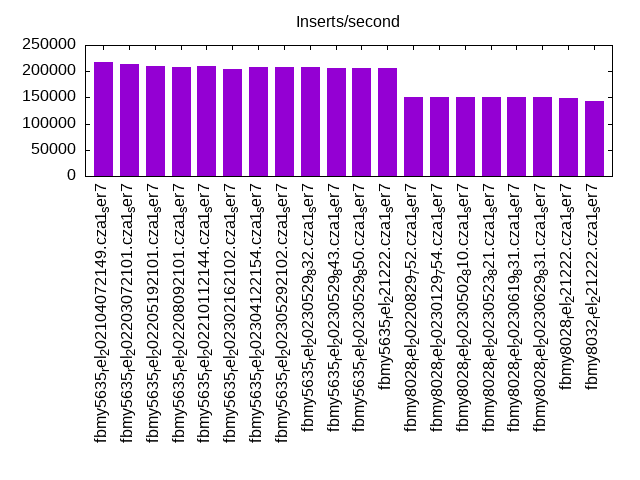
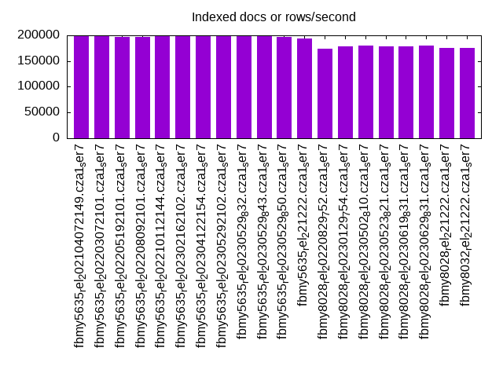
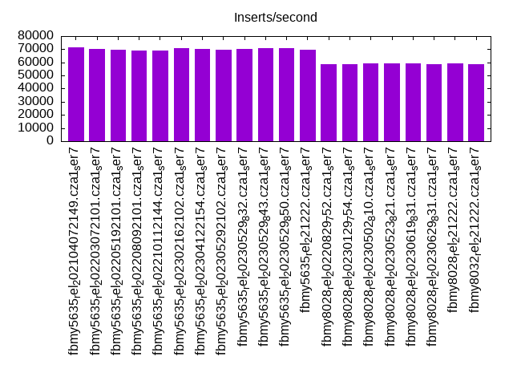
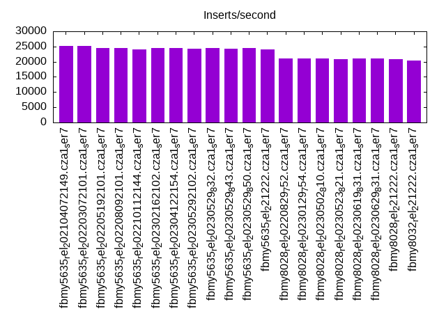
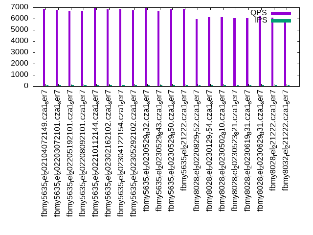
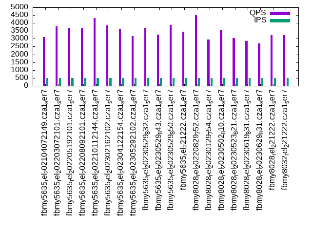
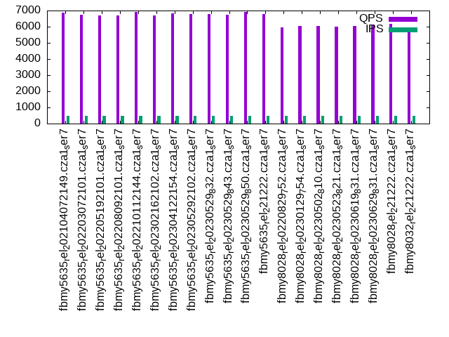
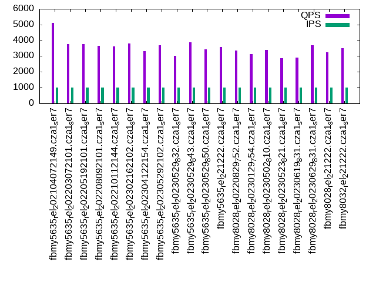
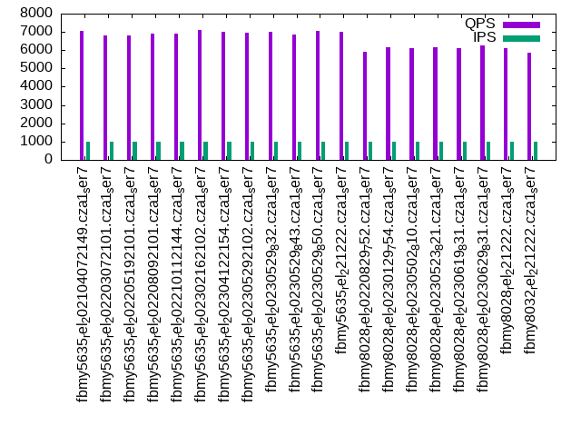

Introduction
This is a report for the insert benchmark with 60M docs and 1 client(s). It is generated by scripts (bash, awk, sed) and Tufte might not be impressed. An overview of the insert benchmark is here and a short update is here. Below, by DBMS, I mean DBMS+version.config. An example is my8020.c10b40 where my means MySQL, 8020 is version 8.0.20 and c10b40 is the name for the configuration file.
The test server has a Beelink SER7 with 8 AMD cores, 32G RAM and an NVMe SSD. It is described here. The benchmark was run with 1 client and there were 1 or 3 connections per client (1 for queries or inserts without rate limits, 1+1 for rate limited inserts+deletes). It uses 1 table. It loads 60M rows per table without secondary indexes, creates 3 secondary indexes per table, then inserts 50m+50m rows per table with a delete per insert to avoid growing the table. It then does 6 read+write tests for 1800s each that do queries as fast as possible with 100,100,500,500,1000,1000 inserts/s and the same for deletes/s per client concurrent with the queries. The database is cached in memory. Clients and the DBMS share one server. The per-database configs are in the per-database subdirectories here.
The tested DBMS are:
- fbmy5635_rel_202104072149.cza1_ser7 - MyRocks 5.6.35 from code as of 2021-04-07 at git hash f896415f with RocksDB 6.19.0, cza1_ser7 config
- fbmy5635_rel_202203072101.cza1_ser7 - MyRocks 5.6.35 from code as of 2022-03-07 at git hash e7d976ee with RocksDB 6.28.2, cza1_ser7 config
- fbmy5635_rel_202205192101.cza1_ser7 - MyRocks 5.6.35 from code as of 2022-05-19 at git hash d503bd77 with RocksDB 7.2.2, cza1_ser7 config
- fbmy5635_rel_202208092101.cza1_ser7 - MyRocks 5.6.35 from code as of 2022-08-09 at git hash 877a0e58 with RocksDB 7.3.1, cza1_ser7 config
- fbmy5635_rel_202210112144.cza1_ser7 - MyRocks 5.6.35 from code as of 2022-10-11 at git hash c691c716 with RocksDB 7.3.1, cza1_ser7 config
- fbmy5635_rel_202302162102.cza1_ser7 - MyRocks 5.6.35 from code as of 2023-02-16 at git hash 21a2b0aa with RocksDB 7.10.0, cza1_ser7 config
- fbmy5635_rel_202304122154.cza1_ser7 - MyRocks 5.6.35 from code as of 2023-04-12 at git hash 205c31dd with RocksDB 7.10.2, cza1_ser7 config
- fbmy5635_rel_202305292102.cza1_ser7 - MyRocks 5.6.35 from code as of 2023-05-29 at git hash b739eac1 with RocksDB 8.2.1, cza1_ser7 config
- fbmy5635_rel_20230529_832.cza1_ser7 - MyRocks 5.6.35 from code as of 2023-05-29 at git hash b739eac1 with RocksDB 8.3.2, cza1_ser7 config
- fbmy5635_rel_20230529_843.cza1_ser7 - MyRocks 5.6.35 from code as of 2023-05-29 at git hash b739eac1 with RocksDB 8.4.3, cza1_ser7 config
- fbmy5635_rel_20230529_850.cza1_ser7 - MyRocks 5.6.35 from code as of 2023-05-29 at git hash b739eac1 with RocksDB 8.5.0, cza1_ser7 config
- fbmy5635_rel_221222.cza1_ser7 - MyRocks 5.6.35 from code as of 2023-12-22 at git hash 4f3a57a1, RocksDB 8.7.0 at git hash 29005f0b, cza1_ser7 config
- fbmy8028_rel_20220829_752.cza1_ser7 - MyRocks 8.0.28 from code as of 2022-08-29 at git hash a35c8dfeab, RocksDB 7.5.2, cza1_ser7 config
- fbmy8028_rel_20230129_754.cza1_ser7 - MyRocks 8.0.28 from code as of 2023-01-29 at git hash 4d3d44a0459, RocksDB 7.5.4, cza1_ser7 config
- fbmy8028_rel_20230502_810.cza1_ser7 - MyRocks 8.0.28 from code as of 2023-05-02 at git hash d1ca8b276d, RocksDB 8.1.0, cza1_ser7 config
- fbmy8028_rel_20230523_821.cza1_ser7 - MyRocks 8.0.28 from code as of 2023-05-23 at git hash b08cc536f1, RocksDB 8.2.1, cza1_ser7 config
- fbmy8028_rel_20230619_831.cza1_ser7 - MyRocks 8.0.28 from code as of 2023-06-19 at git hash 6164cf0274, RocksDB 8.3.1, cza1_ser7 config
- fbmy8028_rel_20230629_831.cza1_ser7 - MyRocks 8.0.28 from code as of 2023-06-29 at git hash ab522f6df7c, RocksDB 8.3.1, cza1_ser7 config
- fbmy8028_rel_221222.cza1_ser7 - MyRocks 8.0.28 from code as of 2023-12-22 at git hash 2ad105fc, RocksDB 8.7.0 at git hash 29005f0b, cza1_ser7 config
- fbmy8032_rel_221222.cza1_ser7 - MyRocks 8.0.32 from code as of 2023-12-22 at git hash 76707b44, RocksDB 8.7.0 at git hash 29005f0b, cza1_ser7 config
Contents
- Summary
- l.i0: load without secondary indexes
- l.x: create secondary indexes
- l.i1: continue load after secondary indexes created with 50 inserts per transaction
- l.i2: continue load after secondary indexes created with 5 inserts per transaction
- qr100.L1: range queries with 100 insert/s per client
- qp100.L2: point queries with 100 insert/s per client
- qr500.L3: range queries with 500 insert/s per client
- qp500.L4: point queries with 500 insert/s per client
- qr1000.L5: range queries with 1000 insert/s per client
- qp1000.L6: point queries with 1000 insert/s per client
Summary
The numbers are inserts/s for l.i0, l.i1 and l.i2, indexed docs (or rows) /s for l.x and queries/s for qr100, qp100 thru qr1000, qp1000" The values are the average rate over the entire test for inserts (IPS) and queries (QPS). The range of values for IPS and QPS is split into 3 parts: bottom 25%, middle 50%, top 25%. Values in the bottom 25% have a red background, values in the top 25% have a green background and values in the middle have no color. A gray background is used for values that can be ignored because the DBMS did not sustain the target insert rate. Red backgrounds are not used when the minimum value is within 80% of the max value.
| dbms | l.i0 | l.x | l.i1 | l.i2 | qr100 | qp100 | qr500 | qp500 | qr1000 | qp1000 |
|---|---|---|---|---|---|---|---|---|---|---|
| fbmy5635_rel_202104072149.cza1_ser7 | 217391 | 198676 | 71684 | 25189 | 3735 | 6876 | 3110 | 6888 | 5102 | 7080 |
| fbmy5635_rel_202203072101.cza1_ser7 | 213523 | 198676 | 70299 | 25189 | 3897 | 6782 | 3777 | 6738 | 3762 | 6819 |
| fbmy5635_rel_202205192101.cza1_ser7 | 210526 | 197369 | 69324 | 24450 | 4622 | 6667 | 3690 | 6676 | 3760 | 6822 |
| fbmy5635_rel_202208092101.cza1_ser7 | 208333 | 197369 | 69204 | 24450 | 4053 | 6639 | 3652 | 6700 | 3646 | 6900 |
| fbmy5635_rel_202210112144.cza1_ser7 | 210526 | 198020 | 68847 | 24154 | 5449 | 6939 | 4331 | 6904 | 3611 | 6911 |
| fbmy5635_rel_202302162102.cza1_ser7 | 204082 | 198676 | 70547 | 24450 | 3286 | 6832 | 3858 | 6706 | 3801 | 7083 |
| fbmy5635_rel_202304122154.cza1_ser7 | 208333 | 199336 | 70422 | 24450 | 3164 | 6882 | 3596 | 6846 | 3309 | 7019 |
| fbmy5635_rel_202305292102.cza1_ser7 | 207612 | 198020 | 69324 | 24272 | 3860 | 6724 | 3168 | 6761 | 3700 | 6949 |
| fbmy5635_rel_20230529_832.cza1_ser7 | 207612 | 200000 | 70175 | 24570 | 3623 | 6949 | 3696 | 6763 | 3015 | 7025 |
| fbmy5635_rel_20230529_843.cza1_ser7 | 206896 | 199336 | 70796 | 24272 | 3569 | 6651 | 3269 | 6720 | 3862 | 6862 |
| fbmy5635_rel_20230529_850.cza1_ser7 | 206896 | 197369 | 70671 | 24390 | 4422 | 6811 | 3878 | 6892 | 3428 | 7052 |
| fbmy5635_rel_221222.cza1_ser7 | 206896 | 194175 | 69565 | 24038 | 2425 | 6862 | 3462 | 6789 | 3577 | 7020 |
| fbmy8028_rel_20220829_752.cza1_ser7 | 151515 | 174419 | 58651 | 20964 | 3541 | 5945 | 4506 | 5937 | 3368 | 5898 |
| fbmy8028_rel_20230129_754.cza1_ser7 | 151134 | 178572 | 58737 | 21053 | 3268 | 6113 | 2960 | 6061 | 3131 | 6162 |
| fbmy8028_rel_20230502_810.cza1_ser7 | 150754 | 179641 | 59259 | 21097 | 3225 | 6118 | 3536 | 6047 | 3375 | 6103 |
| fbmy8028_rel_20230523_821.cza1_ser7 | 151134 | 178042 | 59172 | 20920 | 2683 | 6030 | 3059 | 6002 | 2888 | 6137 |
| fbmy8028_rel_20230619_831.cza1_ser7 | 150754 | 178042 | 59084 | 20964 | 3408 | 6064 | 2852 | 6035 | 2890 | 6124 |
| fbmy8028_rel_20230629_831.cza1_ser7 | 150376 | 180180 | 58737 | 21142 | 3244 | 6201 | 2696 | 6151 | 3693 | 6254 |
| fbmy8028_rel_221222.cza1_ser7 | 148148 | 174927 | 59524 | 20877 | 2536 | 6086 | 3229 | 6158 | 3225 | 6101 |
| fbmy8032_rel_221222.cza1_ser7 | 143198 | 175953 | 58824 | 20284 | 3485 | 5903 | 3227 | 5909 | 3499 | 5865 |
This table has relative throughput, throughput for the DBMS relative to the DBMS in the first line, using the absolute throughput from the previous table. Values less than 0.95 have a yellow background. Values greater than 1.05 have a blue background.
| dbms | l.i0 | l.x | l.i1 | l.i2 | qr100 | qp100 | qr500 | qp500 | qr1000 | qp1000 |
|---|---|---|---|---|---|---|---|---|---|---|
| fbmy5635_rel_202104072149.cza1_ser7 | 1.00 | 1.00 | 1.00 | 1.00 | 1.00 | 1.00 | 1.00 | 1.00 | 1.00 | 1.00 |
| fbmy5635_rel_202203072101.cza1_ser7 | 0.98 | 1.00 | 0.98 | 1.00 | 1.04 | 0.99 | 1.21 | 0.98 | 0.74 | 0.96 |
| fbmy5635_rel_202205192101.cza1_ser7 | 0.97 | 0.99 | 0.97 | 0.97 | 1.24 | 0.97 | 1.19 | 0.97 | 0.74 | 0.96 |
| fbmy5635_rel_202208092101.cza1_ser7 | 0.96 | 0.99 | 0.97 | 0.97 | 1.09 | 0.97 | 1.17 | 0.97 | 0.71 | 0.97 |
| fbmy5635_rel_202210112144.cza1_ser7 | 0.97 | 1.00 | 0.96 | 0.96 | 1.46 | 1.01 | 1.39 | 1.00 | 0.71 | 0.98 |
| fbmy5635_rel_202302162102.cza1_ser7 | 0.94 | 1.00 | 0.98 | 0.97 | 0.88 | 0.99 | 1.24 | 0.97 | 0.75 | 1.00 |
| fbmy5635_rel_202304122154.cza1_ser7 | 0.96 | 1.00 | 0.98 | 0.97 | 0.85 | 1.00 | 1.16 | 0.99 | 0.65 | 0.99 |
| fbmy5635_rel_202305292102.cza1_ser7 | 0.96 | 1.00 | 0.97 | 0.96 | 1.03 | 0.98 | 1.02 | 0.98 | 0.73 | 0.98 |
| fbmy5635_rel_20230529_832.cza1_ser7 | 0.96 | 1.01 | 0.98 | 0.98 | 0.97 | 1.01 | 1.19 | 0.98 | 0.59 | 0.99 |
| fbmy5635_rel_20230529_843.cza1_ser7 | 0.95 | 1.00 | 0.99 | 0.96 | 0.96 | 0.97 | 1.05 | 0.98 | 0.76 | 0.97 |
| fbmy5635_rel_20230529_850.cza1_ser7 | 0.95 | 0.99 | 0.99 | 0.97 | 1.18 | 0.99 | 1.25 | 1.00 | 0.67 | 1.00 |
| fbmy5635_rel_221222.cza1_ser7 | 0.95 | 0.98 | 0.97 | 0.95 | 0.65 | 1.00 | 1.11 | 0.99 | 0.70 | 0.99 |
| fbmy8028_rel_20220829_752.cza1_ser7 | 0.70 | 0.88 | 0.82 | 0.83 | 0.95 | 0.86 | 1.45 | 0.86 | 0.66 | 0.83 |
| fbmy8028_rel_20230129_754.cza1_ser7 | 0.70 | 0.90 | 0.82 | 0.84 | 0.87 | 0.89 | 0.95 | 0.88 | 0.61 | 0.87 |
| fbmy8028_rel_20230502_810.cza1_ser7 | 0.69 | 0.90 | 0.83 | 0.84 | 0.86 | 0.89 | 1.14 | 0.88 | 0.66 | 0.86 |
| fbmy8028_rel_20230523_821.cza1_ser7 | 0.70 | 0.90 | 0.83 | 0.83 | 0.72 | 0.88 | 0.98 | 0.87 | 0.57 | 0.87 |
| fbmy8028_rel_20230619_831.cza1_ser7 | 0.69 | 0.90 | 0.82 | 0.83 | 0.91 | 0.88 | 0.92 | 0.88 | 0.57 | 0.86 |
| fbmy8028_rel_20230629_831.cza1_ser7 | 0.69 | 0.91 | 0.82 | 0.84 | 0.87 | 0.90 | 0.87 | 0.89 | 0.72 | 0.88 |
| fbmy8028_rel_221222.cza1_ser7 | 0.68 | 0.88 | 0.83 | 0.83 | 0.68 | 0.89 | 1.04 | 0.89 | 0.63 | 0.86 |
| fbmy8032_rel_221222.cza1_ser7 | 0.66 | 0.89 | 0.82 | 0.81 | 0.93 | 0.86 | 1.04 | 0.86 | 0.69 | 0.83 |
This lists the average rate of inserts/s for the tests that do inserts concurrent with queries. For such tests the query rate is listed in the table above. The read+write tests are setup so that the insert rate should match the target rate every second. Cells that are not at least 95% of the target have a red background to indicate a failure to satisfy the target.
| dbms | qr100.L1 | qp100.L2 | qr500.L3 | qp500.L4 | qr1000.L5 | qp1000.L6 |
|---|---|---|---|---|---|---|
| fbmy5635_rel_202104072149.cza1_ser7 | 100 | 100 | 499 | 499 | 998 | 998 |
| fbmy5635_rel_202203072101.cza1_ser7 | 100 | 100 | 499 | 499 | 998 | 998 |
| fbmy5635_rel_202205192101.cza1_ser7 | 100 | 100 | 499 | 499 | 998 | 998 |
| fbmy5635_rel_202208092101.cza1_ser7 | 100 | 100 | 499 | 499 | 998 | 998 |
| fbmy5635_rel_202210112144.cza1_ser7 | 100 | 100 | 499 | 499 | 998 | 998 |
| fbmy5635_rel_202302162102.cza1_ser7 | 100 | 100 | 499 | 499 | 998 | 998 |
| fbmy5635_rel_202304122154.cza1_ser7 | 100 | 100 | 499 | 499 | 998 | 998 |
| fbmy5635_rel_202305292102.cza1_ser7 | 100 | 100 | 499 | 499 | 998 | 998 |
| fbmy5635_rel_20230529_832.cza1_ser7 | 100 | 100 | 499 | 499 | 998 | 998 |
| fbmy5635_rel_20230529_843.cza1_ser7 | 100 | 100 | 499 | 499 | 998 | 998 |
| fbmy5635_rel_20230529_850.cza1_ser7 | 100 | 100 | 499 | 499 | 998 | 998 |
| fbmy5635_rel_221222.cza1_ser7 | 100 | 100 | 499 | 499 | 998 | 998 |
| fbmy8028_rel_20220829_752.cza1_ser7 | 100 | 100 | 499 | 499 | 998 | 998 |
| fbmy8028_rel_20230129_754.cza1_ser7 | 100 | 100 | 499 | 499 | 998 | 998 |
| fbmy8028_rel_20230502_810.cza1_ser7 | 100 | 100 | 499 | 499 | 998 | 998 |
| fbmy8028_rel_20230523_821.cza1_ser7 | 100 | 100 | 499 | 499 | 998 | 998 |
| fbmy8028_rel_20230619_831.cza1_ser7 | 100 | 100 | 499 | 499 | 998 | 998 |
| fbmy8028_rel_20230629_831.cza1_ser7 | 100 | 100 | 499 | 499 | 998 | 998 |
| fbmy8028_rel_221222.cza1_ser7 | 100 | 100 | 499 | 499 | 998 | 998 |
| fbmy8032_rel_221222.cza1_ser7 | 100 | 100 | 499 | 499 | 998 | 998 |
| target | 100 | 100 | 500 | 500 | 1000 | 1000 |
l.i0
l.i0: load without secondary indexes. Graphs for performance per 1-second interval are here.
Average throughput:
Insert response time histogram: each cell has the percentage of responses that take <= the time in the header and max is the max response time in seconds. For the max column values in the top 25% of the range have a red background and in the bottom 25% of the range have a green background. The red background is not used when the min value is within 80% of the max value.
| dbms | 256us | 1ms | 4ms | 16ms | 64ms | 256ms | 1s | 4s | 16s | gt | max |
|---|---|---|---|---|---|---|---|---|---|---|---|
| fbmy5635_rel_202104072149.cza1_ser7 | 99.871 | 0.081 | 0.045 | nonzero | 0.003 | 0.107 | |||||
| fbmy5635_rel_202203072101.cza1_ser7 | 99.877 | 0.073 | 0.046 | nonzero | 0.003 | 0.110 | |||||
| fbmy5635_rel_202205192101.cza1_ser7 | 99.873 | 0.077 | 0.046 | nonzero | 0.003 | 0.119 | |||||
| fbmy5635_rel_202208092101.cza1_ser7 | 99.880 | 0.069 | 0.047 | 0.003 | 0.108 | ||||||
| fbmy5635_rel_202210112144.cza1_ser7 | 99.873 | 0.076 | 0.047 | nonzero | 0.003 | 0.115 | |||||
| fbmy5635_rel_202302162102.cza1_ser7 | 99.863 | 0.085 | 0.048 | nonzero | 0.003 | 0.106 | |||||
| fbmy5635_rel_202304122154.cza1_ser7 | 99.883 | 0.067 | 0.046 | nonzero | 0.003 | 0.130 | |||||
| fbmy5635_rel_202305292102.cza1_ser7 | 99.874 | 0.075 | 0.048 | 0.003 | 0.109 | ||||||
| fbmy5635_rel_20230529_832.cza1_ser7 | 99.874 | 0.075 | 0.046 | nonzero | 0.003 | 0.102 | |||||
| fbmy5635_rel_20230529_843.cza1_ser7 | 99.871 | 0.077 | 0.048 | nonzero | 0.003 | 0.119 | |||||
| fbmy5635_rel_20230529_850.cza1_ser7 | 99.872 | 0.077 | 0.047 | nonzero | 0.003 | 0.118 | |||||
| fbmy5635_rel_221222.cza1_ser7 | 99.873 | 0.075 | 0.048 | nonzero | 0.003 | 0.114 | |||||
| fbmy8028_rel_20220829_752.cza1_ser7 | 99.490 | 0.339 | 0.129 | 0.038 | 0.004 | 0.110 | |||||
| fbmy8028_rel_20230129_754.cza1_ser7 | 99.487 | 0.342 | 0.128 | 0.039 | 0.004 | 0.135 | |||||
| fbmy8028_rel_20230502_810.cza1_ser7 | 99.480 | 0.348 | 0.135 | 0.033 | 0.004 | 0.111 | |||||
| fbmy8028_rel_20230523_821.cza1_ser7 | 99.492 | 0.338 | 0.130 | 0.036 | 0.004 | 0.112 | |||||
| fbmy8028_rel_20230619_831.cza1_ser7 | 99.501 | 0.328 | 0.126 | 0.041 | 0.004 | 0.107 | |||||
| fbmy8028_rel_20230629_831.cza1_ser7 | 99.444 | 0.385 | 0.133 | 0.035 | 0.004 | 0.107 | |||||
| fbmy8028_rel_221222.cza1_ser7 | 99.444 | 0.385 | 0.129 | 0.039 | 0.004 | 0.120 | |||||
| fbmy8032_rel_221222.cza1_ser7 | 99.299 | 0.529 | 0.130 | 0.038 | 0.004 | 0.096 |
Performance metrics for the DBMS listed above. Some are normalized by throughput, others are not. Legend for results is here.
ips qps rps rmbps wps wmbps rpq rkbpq wpi wkbpi csps cpups cspq cpupq dbgb1 dbgb2 rss maxop p50 p99 tag 217391 0 0 0.0 102.7 37.7 0.000 0.000 0.000 0.178 22519 11.0 0.104 4 1.8 3.2 0.3 0.107 218776 193283 fbmy5635_rel_202104072149.cza1_ser7 213523 0 0 0.0 99.3 37.2 0.000 0.000 0.000 0.179 22270 11.1 0.104 4 1.8 3.2 0.3 0.110 215784 188598 fbmy5635_rel_202203072101.cza1_ser7 210526 0 0 0.0 97.3 36.7 0.000 0.000 0.000 0.179 21928 10.9 0.104 4 1.8 3.2 0.3 0.119 212062 182798 fbmy5635_rel_202205192101.cza1_ser7 208333 0 0 0.0 98.1 36.2 0.000 0.000 0.000 0.178 21545 10.9 0.103 4 1.8 3.2 0.3 0.108 209502 184886 fbmy5635_rel_202208092101.cza1_ser7 210526 0 0 0.0 99.1 36.5 0.000 0.000 0.000 0.178 21912 10.9 0.104 4 1.8 3.2 0.3 0.115 210963 184806 fbmy5635_rel_202210112144.cza1_ser7 204082 0 0 0.0 94.5 35.6 0.000 0.000 0.000 0.179 21369 10.8 0.105 4 1.8 3.2 0.3 0.106 205576 181003 fbmy5635_rel_202302162102.cza1_ser7 208333 0 0 0.0 97.0 36.4 0.000 0.000 0.000 0.179 21743 11.0 0.104 4 1.8 3.2 0.3 0.130 210763 182703 fbmy5635_rel_202304122154.cza1_ser7 207612 0 0 0.0 97.3 36.2 0.000 0.000 0.000 0.179 21549 10.9 0.104 4 1.8 3.2 0.3 0.109 209366 186391 fbmy5635_rel_202305292102.cza1_ser7 207612 0 0 0.0 97.2 36.1 0.000 0.000 0.000 0.178 21553 10.9 0.104 4 1.8 3.2 0.3 0.102 208265 182578 fbmy5635_rel_20230529_832.cza1_ser7 206896 0 0 0.0 97.1 36.1 0.000 0.000 0.000 0.179 21562 10.8 0.104 4 1.8 3.2 0.3 0.119 208572 183994 fbmy5635_rel_20230529_843.cza1_ser7 206896 0 0 0.0 96.3 35.8 0.000 0.000 0.000 0.177 21486 10.8 0.104 4 1.8 3.2 0.3 0.118 207572 182405 fbmy5635_rel_20230529_850.cza1_ser7 206896 0 0 0.0 96.2 35.9 0.000 0.000 0.000 0.177 21625 10.9 0.105 4 1.8 3.2 0.3 0.114 207983 179297 fbmy5635_rel_221222.cza1_ser7 151515 0 0 0.0 95.4 32.9 0.000 0.000 0.001 0.222 16798 9.8 0.111 5 1.8 3.4 0.7 0.110 151738 130666 fbmy8028_rel_20220829_752.cza1_ser7 151134 0 0 0.0 94.7 32.8 0.000 0.000 0.001 0.223 16771 9.8 0.111 5 1.8 3.4 0.7 0.135 151436 130558 fbmy8028_rel_20230129_754.cza1_ser7 150754 0 0 0.0 94.8 32.9 0.000 0.000 0.001 0.223 16789 9.9 0.111 5 1.8 3.4 0.7 0.111 151734 129060 fbmy8028_rel_20230502_810.cza1_ser7 151134 0 0 0.0 94.6 32.9 0.000 0.000 0.001 0.223 16786 9.9 0.111 5 1.8 3.4 0.7 0.112 151828 128855 fbmy8028_rel_20230523_821.cza1_ser7 150754 0 0 0.0 94.4 32.7 0.000 0.000 0.001 0.222 16707 9.9 0.111 5 1.8 3.4 0.7 0.107 151136 130053 fbmy8028_rel_20230619_831.cza1_ser7 150376 0 0 0.0 95.4 32.7 0.000 0.000 0.001 0.223 16603 9.8 0.110 5 1.8 3.4 0.7 0.107 150835 128564 fbmy8028_rel_20230629_831.cza1_ser7 148148 0 0 0.0 94.1 32.3 0.000 0.000 0.001 0.223 16494 10.1 0.111 5 1.8 3.4 0.7 0.120 148839 128264 fbmy8028_rel_221222.cza1_ser7 143198 0 0 0.0 91.3 31.2 0.000 0.000 0.001 0.223 16232 10.6 0.113 6 1.8 3.4 0.7 0.096 144338 115223 fbmy8032_rel_221222.cza1_ser7
l.x
l.x: create secondary indexes.
Average throughput:
Performance metrics for the DBMS listed above. Some are normalized by throughput, others are not. Legend for results is here.
ips qps rps rmbps wps wmbps rpq rkbpq wpi wkbpi csps cpups cspq cpupq dbgb1 dbgb2 rss maxop p50 p99 tag 198676 0 0 0.0 79.8 30.8 0.000 0.000 0.000 0.158 199 5.9 0.001 2 4.0 5.4 3.6 0.001 NA NA fbmy5635_rel_202104072149.cza1_ser7 198676 0 0 0.0 78.6 31.6 0.000 0.000 0.000 0.163 218 5.9 0.001 2 4.0 5.4 3.9 0.002 NA NA fbmy5635_rel_202203072101.cza1_ser7 197369 0 0 0.0 78.4 31.2 0.000 0.000 0.000 0.162 204 5.9 0.001 2 4.0 5.4 3.9 0.001 NA NA fbmy5635_rel_202205192101.cza1_ser7 197369 0 0 0.0 79.1 31.3 0.000 0.000 0.000 0.162 987 5.9 0.005 2 4.0 5.4 3.9 0.002 NA NA fbmy5635_rel_202208092101.cza1_ser7 198020 0 0 0.0 79.8 31.5 0.000 0.000 0.000 0.163 955 5.8 0.005 2 4.0 5.4 3.9 0.001 NA NA fbmy5635_rel_202210112144.cza1_ser7 198676 0 0 0.0 78.3 31.5 0.000 0.000 0.000 0.162 184 5.9 0.001 2 4.0 5.4 3.9 0.001 NA NA fbmy5635_rel_202302162102.cza1_ser7 199336 0 0 0.0 79.5 31.8 0.000 0.000 0.000 0.163 183 5.9 0.001 2 4.0 5.4 3.9 0.001 NA NA fbmy5635_rel_202304122154.cza1_ser7 198020 0 0 0.0 78.8 31.4 0.000 0.000 0.000 0.163 217 5.9 0.001 2 4.0 5.4 3.9 0.001 NA NA fbmy5635_rel_202305292102.cza1_ser7 200000 0 0 0.0 79.5 31.7 0.000 0.000 0.000 0.162 208 5.9 0.001 2 4.0 5.4 3.6 0.001 NA NA fbmy5635_rel_20230529_832.cza1_ser7 199336 0 0 0.0 80.1 31.7 0.000 0.000 0.000 0.163 297 5.9 0.001 2 4.0 5.4 3.9 0.001 NA NA fbmy5635_rel_20230529_843.cza1_ser7 197369 0 0 0.0 78.9 31.3 0.000 0.000 0.000 0.163 220 5.9 0.001 2 4.0 5.4 3.9 0.001 NA NA fbmy5635_rel_20230529_850.cza1_ser7 194175 0 0 0.0 77.5 30.8 0.000 0.000 0.000 0.162 208 5.9 0.001 2 4.0 5.4 4.0 0.002 NA NA fbmy5635_rel_221222.cza1_ser7 174419 0 0 0.0 69.0 26.9 0.000 0.000 0.000 0.158 385 5.8 0.002 3 4.0 5.6 4.6 0.002 NA NA fbmy8028_rel_20220829_752.cza1_ser7 178572 0 0 0.0 69.1 27.7 0.000 0.000 0.000 0.159 375 5.8 0.002 3 4.0 5.6 4.6 0.009 NA NA fbmy8028_rel_20230129_754.cza1_ser7 179641 0 0 0.0 69.2 27.7 0.000 0.000 0.000 0.158 368 5.8 0.002 3 4.0 5.6 4.6 0.008 NA NA fbmy8028_rel_20230502_810.cza1_ser7 178042 0 0 0.0 69.1 27.6 0.000 0.000 0.000 0.159 369 5.8 0.002 3 4.0 5.6 4.6 0.009 NA NA fbmy8028_rel_20230523_821.cza1_ser7 178042 0 0 0.0 69.1 27.6 0.000 0.000 0.000 0.159 381 5.8 0.002 3 4.0 5.6 4.6 0.002 NA NA fbmy8028_rel_20230619_831.cza1_ser7 180180 0 0 0.0 69.4 27.8 0.000 0.000 0.000 0.158 360 5.8 0.002 3 4.0 5.6 4.6 0.002 NA NA fbmy8028_rel_20230629_831.cza1_ser7 174927 0 0 0.0 67.4 27.0 0.000 0.000 0.000 0.158 352 5.8 0.002 3 4.0 5.6 4.6 0.002 NA NA fbmy8028_rel_221222.cza1_ser7 175953 0 0 0.0 68.0 27.2 0.000 0.000 0.000 0.158 565 5.8 0.003 3 4.0 5.6 4.6 0.008 NA NA fbmy8032_rel_221222.cza1_ser7
l.i1
l.i1: continue load after secondary indexes created with 50 inserts per transaction. Graphs for performance per 1-second interval are here.
Average throughput:
Insert response time histogram: each cell has the percentage of responses that take <= the time in the header and max is the max response time in seconds. For the max column values in the top 25% of the range have a red background and in the bottom 25% of the range have a green background. The red background is not used when the min value is within 80% of the max value.
| dbms | 256us | 1ms | 4ms | 16ms | 64ms | 256ms | 1s | 4s | 16s | gt | max |
|---|---|---|---|---|---|---|---|---|---|---|---|
| fbmy5635_rel_202104072149.cza1_ser7 | 99.102 | 0.825 | 0.068 | nonzero | 0.004 | 0.101 | |||||
| fbmy5635_rel_202203072101.cza1_ser7 | 98.991 | 0.935 | 0.069 | 0.001 | 0.004 | 0.098 | |||||
| fbmy5635_rel_202205192101.cza1_ser7 | 98.852 | 1.073 | 0.071 | nonzero | 0.004 | 0.102 | |||||
| fbmy5635_rel_202208092101.cza1_ser7 | 98.849 | 1.077 | 0.070 | nonzero | 0.004 | 0.137 | |||||
| fbmy5635_rel_202210112144.cza1_ser7 | 98.829 | 1.096 | 0.070 | 0.001 | 0.004 | 0.133 | |||||
| fbmy5635_rel_202302162102.cza1_ser7 | 99.176 | 0.751 | 0.068 | 0.001 | 0.004 | 0.099 | |||||
| fbmy5635_rel_202304122154.cza1_ser7 | 99.242 | 0.685 | 0.069 | nonzero | 0.004 | 0.095 | |||||
| fbmy5635_rel_202305292102.cza1_ser7 | 99.133 | 0.793 | 0.070 | 0.001 | 0.004 | 0.095 | |||||
| fbmy5635_rel_20230529_832.cza1_ser7 | 99.156 | 0.770 | 0.069 | 0.001 | 0.004 | 0.098 | |||||
| fbmy5635_rel_20230529_843.cza1_ser7 | 99.086 | 0.841 | 0.068 | 0.001 | 0.004 | 0.098 | |||||
| fbmy5635_rel_20230529_850.cza1_ser7 | 98.944 | 0.982 | 0.069 | 0.001 | 0.004 | 0.108 | |||||
| fbmy5635_rel_221222.cza1_ser7 | 98.844 | 1.081 | 0.070 | 0.001 | 0.004 | 0.101 | |||||
| fbmy8028_rel_20220829_752.cza1_ser7 | 96.677 | 3.129 | 0.168 | 0.021 | 0.004 | 0.123 | |||||
| fbmy8028_rel_20230129_754.cza1_ser7 | 96.949 | 2.859 | 0.168 | 0.020 | 0.004 | 0.107 | |||||
| fbmy8028_rel_20230502_810.cza1_ser7 | 97.836 | 1.970 | 0.167 | 0.024 | 0.004 | 0.127 | |||||
| fbmy8028_rel_20230523_821.cza1_ser7 | 97.457 | 2.348 | 0.166 | 0.025 | 0.004 | 0.125 | |||||
| fbmy8028_rel_20230619_831.cza1_ser7 | 97.484 | 2.321 | 0.166 | 0.025 | 0.004 | 0.128 | |||||
| fbmy8028_rel_20230629_831.cza1_ser7 | 97.596 | 2.210 | 0.165 | 0.025 | 0.004 | 0.115 | |||||
| fbmy8028_rel_221222.cza1_ser7 | 97.193 | 2.614 | 0.167 | 0.023 | 0.004 | 0.108 | |||||
| fbmy8032_rel_221222.cza1_ser7 | 97.305 | 2.501 | 0.169 | 0.021 | 0.004 | 0.101 |
Delete response time histogram: each cell has the percentage of responses that take <= the time in the header and max is the max response time in seconds. For the max column values in the top 25% of the range have a red background and in the bottom 25% of the range have a green background. The red background is not used when the min value is within 80% of the max value.
| dbms | 256us | 1ms | 4ms | 16ms | 64ms | 256ms | 1s | 4s | 16s | gt | max |
|---|---|---|---|---|---|---|---|---|---|---|---|
| fbmy5635_rel_202104072149.cza1_ser7 | 99.170 | 0.751 | 0.072 | 0.004 | 0.004 | 0.101 | |||||
| fbmy5635_rel_202203072101.cza1_ser7 | 99.130 | 0.787 | 0.074 | 0.004 | 0.004 | 0.097 | |||||
| fbmy5635_rel_202205192101.cza1_ser7 | 98.995 | 0.923 | 0.075 | 0.003 | 0.004 | 0.102 | |||||
| fbmy5635_rel_202208092101.cza1_ser7 | 98.990 | 0.928 | 0.075 | 0.003 | 0.004 | 0.137 | |||||
| fbmy5635_rel_202210112144.cza1_ser7 | 99.028 | 0.889 | 0.076 | 0.005 | 0.004 | 0.132 | |||||
| fbmy5635_rel_202302162102.cza1_ser7 | 99.250 | 0.672 | 0.072 | 0.002 | 0.004 | 0.099 | |||||
| fbmy5635_rel_202304122154.cza1_ser7 | 99.329 | 0.593 | 0.072 | 0.002 | 0.004 | 0.095 | |||||
| fbmy5635_rel_202305292102.cza1_ser7 | 99.262 | 0.659 | 0.072 | 0.003 | 0.004 | 0.095 | |||||
| fbmy5635_rel_20230529_832.cza1_ser7 | 99.205 | 0.714 | 0.073 | 0.003 | 0.004 | 0.098 | |||||
| fbmy5635_rel_20230529_843.cza1_ser7 | 99.194 | 0.725 | 0.074 | 0.004 | 0.004 | 0.098 | |||||
| fbmy5635_rel_20230529_850.cza1_ser7 | 99.028 | 0.890 | 0.074 | 0.004 | 0.004 | 0.108 | |||||
| fbmy5635_rel_221222.cza1_ser7 | 98.997 | 0.921 | 0.073 | 0.004 | 0.004 | 0.102 | |||||
| fbmy8028_rel_20220829_752.cza1_ser7 | 97.172 | 2.626 | 0.168 | 0.030 | 0.004 | 0.121 | |||||
| fbmy8028_rel_20230129_754.cza1_ser7 | 97.560 | 2.243 | 0.166 | 0.028 | 0.004 | 0.119 | |||||
| fbmy8028_rel_20230502_810.cza1_ser7 | 98.266 | 1.535 | 0.163 | 0.032 | 0.004 | 0.115 | |||||
| fbmy8028_rel_20230523_821.cza1_ser7 | 97.944 | 1.856 | 0.163 | 0.033 | 0.004 | 0.114 | |||||
| fbmy8028_rel_20230619_831.cza1_ser7 | 97.921 | 1.880 | 0.161 | 0.034 | 0.004 | 0.119 | |||||
| fbmy8028_rel_20230629_831.cza1_ser7 | 97.805 | 1.993 | 0.162 | 0.035 | 0.004 | 0.110 | |||||
| fbmy8028_rel_221222.cza1_ser7 | 97.655 | 2.143 | 0.162 | 0.036 | 0.004 | 0.114 | |||||
| fbmy8032_rel_221222.cza1_ser7 | 97.799 | 2.000 | 0.165 | 0.032 | 0.004 | 0.094 |
Performance metrics for the DBMS listed above. Some are normalized by throughput, others are not. Legend for results is here.
ips qps rps rmbps wps wmbps rpq rkbpq wpi wkbpi csps cpups cspq cpupq dbgb1 dbgb2 rss maxop p50 p99 tag 71684 0 32 4.0 385.7 156.4 0.000 0.058 0.005 2.234 34387 24.4 0.480 27 5.0 5.5 8.1 0.101 72671 58737 fbmy5635_rel_202104072149.cza1_ser7 70299 0 32 4.0 374.2 153.1 0.000 0.058 0.005 2.230 33994 24.8 0.484 28 5.3 5.7 8.3 0.098 71549 58187 fbmy5635_rel_202203072101.cza1_ser7 69324 0 31 3.9 372.8 152.9 0.000 0.058 0.005 2.259 33686 24.9 0.486 29 5.1 5.5 8.5 0.102 70070 56989 fbmy5635_rel_202205192101.cza1_ser7 69204 0 31 3.9 381.9 155.0 0.000 0.058 0.006 2.293 33617 24.9 0.486 29 5.1 5.5 8.5 0.137 69875 58740 fbmy5635_rel_202208092101.cza1_ser7 68847 0 31 3.9 370.6 151.5 0.000 0.057 0.005 2.254 33430 24.9 0.486 29 5.0 5.4 8.5 0.133 69524 57239 fbmy5635_rel_202210112144.cza1_ser7 70547 0 32 4.0 343.1 136.4 0.000 0.058 0.005 1.980 33227 24.2 0.471 27 5.3 5.8 6.2 0.099 70872 59136 fbmy5635_rel_202302162102.cza1_ser7 70422 0 32 4.0 342.5 136.5 0.000 0.058 0.005 1.986 33079 24.1 0.470 27 5.6 6.1 6.3 0.095 70723 60334 fbmy5635_rel_202304122154.cza1_ser7 69324 0 31 3.9 334.2 133.4 0.000 0.058 0.005 1.971 32509 24.7 0.469 29 4.9 5.3 6.4 0.095 69426 59032 fbmy5635_rel_202305292102.cza1_ser7 70175 0 32 3.9 344.0 137.7 0.000 0.057 0.005 2.009 32889 24.3 0.469 28 4.7 5.2 6.5 0.098 70221 59784 fbmy5635_rel_20230529_832.cza1_ser7 70796 0 32 4.0 373.0 150.6 0.000 0.058 0.005 2.179 33833 25.6 0.478 29 4.8 5.2 6.6 0.098 71571 59336 fbmy5635_rel_20230529_843.cza1_ser7 70671 0 924 4.0 368.5 147.8 0.013 0.057 0.005 2.141 35310 25.6 0.500 29 5.3 5.7 6.6 0.108 71363 57991 fbmy5635_rel_20230529_850.cza1_ser7 69565 0 683 3.9 361.9 145.5 0.010 0.057 0.005 2.142 34366 25.1 0.494 29 4.9 5.3 6.7 0.101 69880 57336 fbmy5635_rel_221222.cza1_ser7 58651 0 26 3.3 352.1 139.3 0.000 0.057 0.006 2.432 29002 24.3 0.494 33 5.4 6.0 8.7 0.123 58935 48946 fbmy8028_rel_20220829_752.cza1_ser7 58737 0 26 3.3 350.3 138.9 0.000 0.057 0.006 2.421 29068 24.6 0.495 34 5.6 6.2 8.7 0.107 59086 49596 fbmy8028_rel_20230129_754.cza1_ser7 59259 0 27 3.3 295.3 114.0 0.000 0.058 0.005 1.969 28417 23.0 0.480 31 4.7 5.3 6.5 0.127 59535 49984 fbmy8028_rel_20230502_810.cza1_ser7 59172 0 27 3.3 299.2 115.7 0.000 0.057 0.005 2.002 28405 23.0 0.480 31 4.8 5.4 6.6 0.125 59361 50195 fbmy8028_rel_20230523_821.cza1_ser7 59084 0 27 3.3 294.1 114.0 0.000 0.057 0.005 1.976 28277 23.6 0.479 32 4.9 5.5 6.7 0.128 59386 48498 fbmy8028_rel_20230619_831.cza1_ser7 58737 0 26 3.3 288.7 112.2 0.000 0.057 0.005 1.956 28404 23.2 0.484 32 4.7 5.3 6.7 0.115 59183 48437 fbmy8028_rel_20230629_831.cza1_ser7 59524 0 587 3.3 324.4 127.3 0.010 0.057 0.005 2.190 30116 23.9 0.506 32 4.6 5.2 6.9 0.108 59886 49346 fbmy8028_rel_221222.cza1_ser7 58824 0 583 3.3 314.6 123.2 0.010 0.058 0.005 2.145 30005 23.6 0.510 32 5.0 5.6 6.8 0.101 59035 49946 fbmy8032_rel_221222.cza1_ser7
l.i2
l.i2: continue load after secondary indexes created with 5 inserts per transaction. Graphs for performance per 1-second interval are here.
Average throughput:
Insert response time histogram: each cell has the percentage of responses that take <= the time in the header and max is the max response time in seconds. For the max column values in the top 25% of the range have a red background and in the bottom 25% of the range have a green background. The red background is not used when the min value is within 80% of the max value.
| dbms | 256us | 1ms | 4ms | 16ms | 64ms | 256ms | 1s | 4s | 16s | gt | max |
|---|---|---|---|---|---|---|---|---|---|---|---|
| fbmy5635_rel_202104072149.cza1_ser7 | 99.809 | 0.170 | 0.001 | 0.019 | nonzero | nonzero | 0.094 | ||||
| fbmy5635_rel_202203072101.cza1_ser7 | 99.797 | 0.182 | 0.001 | 0.019 | nonzero | 0.001 | 0.083 | ||||
| fbmy5635_rel_202205192101.cza1_ser7 | 99.759 | 0.220 | 0.001 | 0.020 | nonzero | nonzero | 0.087 | ||||
| fbmy5635_rel_202208092101.cza1_ser7 | 99.785 | 0.194 | 0.001 | 0.020 | nonzero | nonzero | 0.103 | ||||
| fbmy5635_rel_202210112144.cza1_ser7 | 99.766 | 0.212 | 0.001 | 0.020 | 0.001 | nonzero | 0.100 | ||||
| fbmy5635_rel_202302162102.cza1_ser7 | 99.780 | 0.199 | 0.001 | 0.019 | 0.001 | nonzero | 0.093 | ||||
| fbmy5635_rel_202304122154.cza1_ser7 | 99.778 | 0.201 | 0.001 | 0.020 | nonzero | nonzero | 0.086 | ||||
| fbmy5635_rel_202305292102.cza1_ser7 | 99.785 | 0.194 | 0.001 | 0.020 | nonzero | nonzero | 0.087 | ||||
| fbmy5635_rel_20230529_832.cza1_ser7 | 99.793 | 0.186 | 0.001 | 0.020 | nonzero | nonzero | 0.084 | ||||
| fbmy5635_rel_20230529_843.cza1_ser7 | 99.774 | 0.204 | 0.001 | 0.020 | nonzero | nonzero | 0.093 | ||||
| fbmy5635_rel_20230529_850.cza1_ser7 | 99.768 | 0.211 | 0.001 | 0.019 | nonzero | nonzero | 0.083 | ||||
| fbmy5635_rel_221222.cza1_ser7 | 99.793 | 0.185 | 0.001 | 0.020 | 0.001 | nonzero | 0.087 | ||||
| fbmy8028_rel_20220829_752.cza1_ser7 | 99.253 | 0.703 | nonzero | 0.042 | 0.001 | 0.001 | 0.120 | ||||
| fbmy8028_rel_20230129_754.cza1_ser7 | 99.300 | 0.656 | 0.001 | 0.041 | 0.001 | nonzero | 0.104 | ||||
| fbmy8028_rel_20230502_810.cza1_ser7 | 99.303 | 0.652 | 0.001 | 0.042 | 0.002 | nonzero | 0.111 | ||||
| fbmy8028_rel_20230523_821.cza1_ser7 | 99.213 | 0.743 | 0.001 | 0.042 | 0.001 | 0.001 | 0.109 | ||||
| fbmy8028_rel_20230619_831.cza1_ser7 | 99.345 | 0.610 | nonzero | 0.042 | 0.001 | 0.001 | 0.112 | ||||
| fbmy8028_rel_20230629_831.cza1_ser7 | 99.235 | 0.720 | 0.001 | 0.042 | 0.002 | nonzero | 0.104 | ||||
| fbmy8028_rel_221222.cza1_ser7 | 99.200 | 0.755 | nonzero | 0.042 | 0.001 | 0.001 | 0.112 | ||||
| fbmy8032_rel_221222.cza1_ser7 | 99.001 | 0.954 | 0.001 | 0.042 | 0.002 | nonzero | 0.097 |
Delete response time histogram: each cell has the percentage of responses that take <= the time in the header and max is the max response time in seconds. For the max column values in the top 25% of the range have a red background and in the bottom 25% of the range have a green background. The red background is not used when the min value is within 80% of the max value.
| dbms | 256us | 1ms | 4ms | 16ms | 64ms | 256ms | 1s | 4s | 16s | gt | max |
|---|---|---|---|---|---|---|---|---|---|---|---|
| fbmy5635_rel_202104072149.cza1_ser7 | 99.399 | 0.578 | 0.002 | 0.020 | nonzero | nonzero | 0.094 | ||||
| fbmy5635_rel_202203072101.cza1_ser7 | 99.490 | 0.488 | 0.001 | 0.020 | nonzero | 0.001 | 0.083 | ||||
| fbmy5635_rel_202205192101.cza1_ser7 | 99.267 | 0.711 | nonzero | 0.020 | nonzero | nonzero | 0.087 | ||||
| fbmy5635_rel_202208092101.cza1_ser7 | 99.283 | 0.695 | 0.001 | 0.020 | nonzero | nonzero | 0.104 | ||||
| fbmy5635_rel_202210112144.cza1_ser7 | 99.323 | 0.654 | 0.001 | 0.021 | 0.001 | nonzero | 0.100 | ||||
| fbmy5635_rel_202302162102.cza1_ser7 | 99.333 | 0.645 | 0.001 | 0.020 | 0.001 | nonzero | 0.094 | ||||
| fbmy5635_rel_202304122154.cza1_ser7 | 99.315 | 0.663 | 0.001 | 0.020 | nonzero | nonzero | 0.086 | ||||
| fbmy5635_rel_202305292102.cza1_ser7 | 99.258 | 0.720 | 0.001 | 0.020 | nonzero | nonzero | 0.088 | ||||
| fbmy5635_rel_20230529_832.cza1_ser7 | 99.426 | 0.552 | 0.001 | 0.020 | nonzero | nonzero | 0.084 | ||||
| fbmy5635_rel_20230529_843.cza1_ser7 | 99.257 | 0.721 | 0.001 | 0.020 | nonzero | nonzero | 0.093 | ||||
| fbmy5635_rel_20230529_850.cza1_ser7 | 99.291 | 0.687 | 0.001 | 0.020 | nonzero | nonzero | 0.084 | ||||
| fbmy5635_rel_221222.cza1_ser7 | 99.230 | 0.748 | 0.001 | 0.021 | 0.001 | nonzero | 0.087 | ||||
| fbmy8028_rel_20220829_752.cza1_ser7 | 97.153 | 2.802 | nonzero | 0.043 | 0.001 | 0.001 | 0.107 | ||||
| fbmy8028_rel_20230129_754.cza1_ser7 | 97.247 | 2.708 | 0.001 | 0.043 | 0.002 | nonzero | 0.094 | ||||
| fbmy8028_rel_20230502_810.cza1_ser7 | 97.366 | 2.589 | 0.001 | 0.043 | 0.002 | nonzero | 0.104 | ||||
| fbmy8028_rel_20230523_821.cza1_ser7 | 96.607 | 3.347 | 0.001 | 0.044 | 0.001 | 0.001 | 0.100 | ||||
| fbmy8028_rel_20230619_831.cza1_ser7 | 97.246 | 2.708 | 0.001 | 0.044 | 0.001 | 0.001 | 0.099 | ||||
| fbmy8028_rel_20230629_831.cza1_ser7 | 97.144 | 2.811 | 0.001 | 0.043 | 0.002 | nonzero | 0.095 | ||||
| fbmy8028_rel_221222.cza1_ser7 | 97.138 | 2.817 | 0.001 | 0.043 | 0.001 | 0.001 | 0.111 | ||||
| fbmy8032_rel_221222.cza1_ser7 | 96.013 | 3.940 | 0.001 | 0.044 | 0.002 | nonzero | 0.086 |
Performance metrics for the DBMS listed above. Some are normalized by throughput, others are not. Legend for results is here.
ips qps rps rmbps wps wmbps rpq rkbpq wpi wkbpi csps cpups cspq cpupq dbgb1 dbgb2 rss maxop p50 p99 tag 25189 0 0 0.0 269.5 97.1 0.000 0.000 0.011 3.949 104574 20.3 4.152 64 4.2 4.4 10.1 0.094 25136 21951 fbmy5635_rel_202104072149.cza1_ser7 25189 0 0 0.0 260.6 93.7 0.000 0.000 0.010 3.808 104261 20.5 4.139 65 4.2 4.4 10.3 0.083 25332 22390 fbmy5635_rel_202203072101.cza1_ser7 24450 0 0 0.0 268.3 95.8 0.000 0.000 0.011 4.012 101664 20.4 4.158 67 4.3 4.4 10.3 0.087 24518 21801 fbmy5635_rel_202205192101.cza1_ser7 24450 0 0 0.0 258.2 92.0 0.000 0.000 0.011 3.854 101671 20.4 4.158 67 4.6 4.7 10.1 0.103 24484 21221 fbmy5635_rel_202208092101.cza1_ser7 24154 0 0 0.0 259.7 92.4 0.000 0.000 0.011 3.919 100243 20.5 4.150 68 4.4 4.5 10.3 0.100 24224 21570 fbmy5635_rel_202210112144.cza1_ser7 24450 0 0 0.0 231.3 85.6 0.000 0.000 0.009 3.583 101265 20.2 4.142 66 4.2 4.4 7.6 0.093 24503 22063 fbmy5635_rel_202302162102.cza1_ser7 24450 0 0 0.0 236.7 87.2 0.000 0.000 0.010 3.652 101509 20.2 4.152 66 4.4 4.5 7.6 0.086 24513 21894 fbmy5635_rel_202304122154.cza1_ser7 24272 0 0 0.0 214.8 79.1 0.000 0.000 0.009 3.336 100144 20.2 4.126 67 4.4 4.5 7.4 0.087 24366 21666 fbmy5635_rel_202305292102.cza1_ser7 24570 0 0 0.0 234.6 86.8 0.000 0.000 0.010 3.619 101746 20.1 4.141 65 4.4 4.6 7.8 0.084 24593 22251 fbmy5635_rel_20230529_832.cza1_ser7 24272 0 0 0.0 231.7 86.2 0.000 0.000 0.010 3.637 100374 20.3 4.135 67 4.4 4.6 8.0 0.093 24264 21551 fbmy5635_rel_20230529_843.cza1_ser7 24390 0 0 0.0 234.6 86.4 0.000 0.000 0.010 3.626 101035 20.4 4.142 67 4.2 4.4 7.9 0.083 24504 21666 fbmy5635_rel_20230529_850.cza1_ser7 24038 0 0 0.0 241.3 88.6 0.000 0.000 0.010 3.773 100168 20.4 4.167 68 4.4 4.6 8.0 0.087 24170 21377 fbmy5635_rel_221222.cza1_ser7 20964 0 0 0.0 252.6 89.7 0.000 0.000 0.012 4.379 86803 20.5 4.141 78 4.3 4.6 10.7 0.120 21018 18528 fbmy8028_rel_20220829_752.cza1_ser7 21053 0 0 0.0 248.7 88.8 0.000 0.000 0.012 4.321 86461 20.6 4.107 78 4.3 4.6 10.8 0.104 21121 18796 fbmy8028_rel_20230129_754.cza1_ser7 21097 0 0 0.0 229.1 82.2 0.000 0.000 0.011 3.992 86944 20.3 4.121 77 4.2 4.5 7.9 0.111 21182 18836 fbmy8028_rel_20230502_810.cza1_ser7 20920 0 0 0.0 232.7 83.8 0.000 0.000 0.011 4.104 86187 20.4 4.120 78 4.5 4.8 8.0 0.109 20996 18030 fbmy8028_rel_20230523_821.cza1_ser7 20964 0 0 0.0 210.9 75.8 0.000 0.000 0.010 3.704 86351 20.3 4.119 77 4.4 4.7 7.8 0.112 21070 18274 fbmy8028_rel_20230619_831.cza1_ser7 21142 0 0 0.0 220.5 78.8 0.000 0.000 0.010 3.817 86493 20.4 4.091 77 4.4 4.7 7.8 0.104 21117 18929 fbmy8028_rel_20230629_831.cza1_ser7 20877 0 0 0.0 238.4 85.1 0.000 0.000 0.011 4.175 85922 20.3 4.116 78 4.2 4.6 8.4 0.112 20922 18115 fbmy8028_rel_221222.cza1_ser7 20284 0 0 0.0 238.9 86.2 0.000 0.000 0.012 4.352 84031 20.7 4.143 82 4.3 4.6 8.5 0.097 20339 17825 fbmy8032_rel_221222.cza1_ser7
qr100.L1
qr100.L1: range queries with 100 insert/s per client. Graphs for performance per 1-second interval are here.
Average throughput:

Query response time histogram: each cell has the percentage of responses that take <= the time in the header and max is the max response time in seconds. For max values in the top 25% of the range have a red background and in the bottom 25% of the range have a green background. The red background is not used when the min value is within 80% of the max value.
| dbms | 256us | 1ms | 4ms | 16ms | 64ms | 256ms | 1s | 4s | 16s | gt | max |
|---|---|---|---|---|---|---|---|---|---|---|---|
| fbmy5635_rel_202104072149.cza1_ser7 | 70.778 | 19.044 | 10.179 | nonzero | nonzero | 0.038 | |||||
| fbmy5635_rel_202203072101.cza1_ser7 | 73.904 | 21.564 | 4.532 | nonzero | nonzero | 0.036 | |||||
| fbmy5635_rel_202205192101.cza1_ser7 | 66.645 | 33.354 | 0.001 | nonzero | nonzero | 0.039 | |||||
| fbmy5635_rel_202208092101.cza1_ser7 | 68.689 | 30.107 | 1.204 | nonzero | nonzero | 0.040 | |||||
| fbmy5635_rel_202210112144.cza1_ser7 | 86.769 | 13.226 | 0.005 | 0.002 | |||||||
| fbmy5635_rel_202302162102.cza1_ser7 | 66.845 | 19.831 | 13.324 | nonzero | 0.038 | ||||||
| fbmy5635_rel_202304122154.cza1_ser7 | 66.633 | 29.835 | 3.532 | nonzero | 0.038 | ||||||
| fbmy5635_rel_202305292102.cza1_ser7 | 77.036 | 22.938 | 0.026 | 0.002 | |||||||
| fbmy5635_rel_20230529_832.cza1_ser7 | 66.708 | 30.408 | 2.884 | 0.003 | |||||||
| fbmy5635_rel_20230529_843.cza1_ser7 | 66.626 | 29.913 | 3.461 | nonzero | 0.035 | ||||||
| fbmy5635_rel_20230529_850.cza1_ser7 | 76.644 | 23.171 | 0.185 | nonzero | 0.039 | ||||||
| fbmy5635_rel_221222.cza1_ser7 | 66.506 | 26.737 | 6.757 | nonzero | 0.039 | ||||||
| fbmy8028_rel_20220829_752.cza1_ser7 | 77.087 | 16.793 | 6.120 | nonzero | 0.007 | ||||||
| fbmy8028_rel_20230129_754.cza1_ser7 | 66.505 | 33.471 | 0.024 | nonzero | 0.006 | ||||||
| fbmy8028_rel_20230502_810.cza1_ser7 | 66.420 | 26.432 | 7.147 | 0.004 | |||||||
| fbmy8028_rel_20230523_821.cza1_ser7 | 66.319 | 20.223 | 13.458 | nonzero | 0.039 | ||||||
| fbmy8028_rel_20230619_831.cza1_ser7 | 77.510 | 17.669 | 4.821 | 0.003 | |||||||
| fbmy8028_rel_20230629_831.cza1_ser7 | 74.696 | 24.934 | 0.370 | nonzero | 0.039 | ||||||
| fbmy8028_rel_221222.cza1_ser7 | 69.046 | 16.602 | 14.352 | nonzero | 0.040 | ||||||
| fbmy8032_rel_221222.cza1_ser7 | 72.896 | 20.157 | 6.948 | nonzero | 0.036 |
Insert response time histogram: each cell has the percentage of responses that take <= the time in the header and max is the max response time in seconds. For max values in the top 25% of the range have a red background and in the bottom 25% of the range have a green background. The red background is not used when the min value is within 80% of the max value.
| dbms | 256us | 1ms | 4ms | 16ms | 64ms | 256ms | 1s | 4s | 16s | gt | max |
|---|---|---|---|---|---|---|---|---|---|---|---|
| fbmy5635_rel_202104072149.cza1_ser7 | 6.139 | 93.611 | 0.250 | 0.008 | |||||||
| fbmy5635_rel_202203072101.cza1_ser7 | 2.194 | 97.556 | 0.250 | 0.008 | |||||||
| fbmy5635_rel_202205192101.cza1_ser7 | 2.083 | 97.583 | 0.333 | 0.008 | |||||||
| fbmy5635_rel_202208092101.cza1_ser7 | 1.389 | 98.194 | 0.417 | 0.009 | |||||||
| fbmy5635_rel_202210112144.cza1_ser7 | 12.583 | 87.083 | 0.333 | 0.008 | |||||||
| fbmy5635_rel_202302162102.cza1_ser7 | 0.972 | 98.500 | 0.528 | 0.008 | |||||||
| fbmy5635_rel_202304122154.cza1_ser7 | 2.139 | 97.389 | 0.472 | 0.008 | |||||||
| fbmy5635_rel_202305292102.cza1_ser7 | 2.667 | 96.944 | 0.389 | 0.008 | |||||||
| fbmy5635_rel_20230529_832.cza1_ser7 | 4.250 | 95.472 | 0.278 | 0.008 | |||||||
| fbmy5635_rel_20230529_843.cza1_ser7 | 2.500 | 97.000 | 0.500 | 0.009 | |||||||
| fbmy5635_rel_20230529_850.cza1_ser7 | 3.472 | 96.028 | 0.500 | 0.008 | |||||||
| fbmy5635_rel_221222.cza1_ser7 | 4.306 | 95.389 | 0.306 | 0.015 | |||||||
| fbmy8028_rel_20220829_752.cza1_ser7 | 9.333 | 90.333 | 0.306 | 0.028 | 0.016 | ||||||
| fbmy8028_rel_20230129_754.cza1_ser7 | 1.083 | 98.444 | 0.444 | 0.028 | 0.017 | ||||||
| fbmy8028_rel_20230502_810.cza1_ser7 | 1.417 | 97.972 | 0.556 | 0.056 | 0.018 | ||||||
| fbmy8028_rel_20230523_821.cza1_ser7 | 0.889 | 98.667 | 0.417 | 0.028 | 0.016 | ||||||
| fbmy8028_rel_20230619_831.cza1_ser7 | 1.167 | 98.306 | 0.472 | 0.056 | 0.017 | ||||||
| fbmy8028_rel_20230629_831.cza1_ser7 | 0.722 | 98.861 | 0.361 | 0.056 | 0.020 | ||||||
| fbmy8028_rel_221222.cza1_ser7 | 0.667 | 98.833 | 0.444 | 0.056 | 0.017 | ||||||
| fbmy8032_rel_221222.cza1_ser7 | 0.361 | 99.139 | 0.444 | 0.056 | 0.017 |
Delete response time histogram: each cell has the percentage of responses that take <= the time in the header and max is the max response time in seconds. For max values in the top 25% of the range have a red background and in the bottom 25% of the range have a green background. The red background is not used when the min value is within 80% of the max value.
| dbms | 256us | 1ms | 4ms | 16ms | 64ms | 256ms | 1s | 4s | 16s | gt | max |
|---|---|---|---|---|---|---|---|---|---|---|---|
| fbmy5635_rel_202104072149.cza1_ser7 | 7.139 | 92.583 | 0.278 | 0.008 | |||||||
| fbmy5635_rel_202203072101.cza1_ser7 | 11.111 | 88.611 | 0.278 | 0.008 | |||||||
| fbmy5635_rel_202205192101.cza1_ser7 | 5.611 | 94.083 | 0.306 | 0.008 | |||||||
| fbmy5635_rel_202208092101.cza1_ser7 | 4.972 | 94.694 | 0.333 | 0.008 | |||||||
| fbmy5635_rel_202210112144.cza1_ser7 | 7.250 | 92.417 | 0.333 | 0.008 | |||||||
| fbmy5635_rel_202302162102.cza1_ser7 | 2.861 | 96.694 | 0.444 | 0.008 | |||||||
| fbmy5635_rel_202304122154.cza1_ser7 | 1.694 | 97.972 | 0.333 | 0.008 | |||||||
| fbmy5635_rel_202305292102.cza1_ser7 | 17.472 | 82.250 | 0.278 | 0.008 | |||||||
| fbmy5635_rel_20230529_832.cza1_ser7 | 5.917 | 93.750 | 0.333 | 0.008 | |||||||
| fbmy5635_rel_20230529_843.cza1_ser7 | 5.417 | 94.139 | 0.444 | 0.008 | |||||||
| fbmy5635_rel_20230529_850.cza1_ser7 | 7.694 | 91.917 | 0.389 | 0.008 | |||||||
| fbmy5635_rel_221222.cza1_ser7 | 8.056 | 91.639 | 0.306 | 0.015 | |||||||
| fbmy8028_rel_20220829_752.cza1_ser7 | 0.306 | 99.361 | 0.306 | 0.028 | 0.016 | ||||||
| fbmy8028_rel_20230129_754.cza1_ser7 | 4.139 | 95.444 | 0.389 | 0.028 | 0.016 | ||||||
| fbmy8028_rel_20230502_810.cza1_ser7 | 4.333 | 95.222 | 0.417 | 0.028 | 0.017 | ||||||
| fbmy8028_rel_20230523_821.cza1_ser7 | 4.083 | 95.611 | 0.278 | 0.028 | 0.016 | ||||||
| fbmy8028_rel_20230619_831.cza1_ser7 | 3.028 | 96.556 | 0.389 | 0.028 | 0.017 | ||||||
| fbmy8028_rel_20230629_831.cza1_ser7 | 0.944 | 98.694 | 0.306 | 0.056 | 0.020 | ||||||
| fbmy8028_rel_221222.cza1_ser7 | 1.167 | 98.472 | 0.333 | 0.028 | 0.017 | ||||||
| fbmy8032_rel_221222.cza1_ser7 | 0.333 | 99.278 | 0.361 | 0.028 | 0.017 |
Performance metrics for the DBMS listed above. Some are normalized by throughput, others are not. Legend for results is here.
ips qps rps rmbps wps wmbps rpq rkbpq wpi wkbpi csps cpups cspq cpupq dbgb1 dbgb2 rss maxop p50 p99 tag 100 3735 0 0.0 4.7 0.5 0.000 0.000 0.047 5.304 14413 5.8 3.859 124 4.2 4.2 10.4 0.038 3739 3483 fbmy5635_rel_202104072149.cza1_ser7 100 3897 0 0.0 4.7 0.5 0.000 0.000 0.047 5.322 15026 5.8 3.856 119 4.2 4.2 10.6 0.036 3884 3578 fbmy5635_rel_202203072101.cza1_ser7 100 4622 0 0.0 5.0 0.6 0.000 0.000 0.051 6.575 17792 5.8 3.849 100 4.1 4.2 10.7 0.039 4601 4379 fbmy5635_rel_202205192101.cza1_ser7 100 4053 0 0.0 7.3 0.7 0.000 0.000 0.073 7.385 15648 5.8 3.861 114 4.1 4.2 10.5 0.040 4058 3868 fbmy5635_rel_202208092101.cza1_ser7 100 5449 0 0.0 6.6 0.5 0.000 0.000 0.067 5.131 20951 5.8 3.845 85 4.2 4.2 10.6 0.002 5433 5033 fbmy5635_rel_202210112144.cza1_ser7 100 3286 0 0.0 4.8 0.6 0.000 0.000 0.049 5.832 12700 6.0 3.865 146 4.2 4.2 7.9 0.038 3293 2988 fbmy5635_rel_202302162102.cza1_ser7 100 3164 0 0.0 4.6 0.5 0.000 0.000 0.046 4.918 12238 6.1 3.868 154 4.2 4.2 8.1 0.038 3179 2891 fbmy5635_rel_202304122154.cza1_ser7 100 3860 0 0.0 4.5 0.5 0.000 0.000 0.045 4.869 14883 5.8 3.855 120 4.2 4.2 7.8 0.002 3868 3580 fbmy5635_rel_202305292102.cza1_ser7 100 3623 0 0.0 4.5 0.5 0.000 0.000 0.046 4.998 13979 5.8 3.859 128 4.2 4.2 8.1 0.003 3612 3420 fbmy5635_rel_20230529_832.cza1_ser7 100 3569 0 0.0 4.4 0.4 0.000 0.000 0.044 4.544 13772 5.8 3.859 130 4.1 4.2 8.4 0.035 3579 3292 fbmy5635_rel_20230529_843.cza1_ser7 100 4422 0 0.0 5.2 0.7 0.000 0.000 0.052 7.041 17044 5.8 3.854 105 4.1 4.1 8.2 0.039 4394 4172 fbmy5635_rel_20230529_850.cza1_ser7 100 2425 0 0.0 4.6 0.5 0.000 0.000 0.046 4.996 9407 6.6 3.879 218 4.2 4.2 8.6 0.039 2429 2254 fbmy5635_rel_221222.cza1_ser7 100 3541 0 0.0 4.7 0.5 0.000 0.000 0.047 5.346 13803 6.6 3.898 149 4.2 4.4 11.2 0.007 3548 3291 fbmy8028_rel_20220829_752.cza1_ser7 100 3268 0 0.0 4.7 0.5 0.000 0.000 0.047 5.201 12780 6.6 3.910 162 4.2 4.4 11.3 0.006 3276 3069 fbmy8028_rel_20230129_754.cza1_ser7 100 3225 0 0.0 5.0 0.6 0.000 0.000 0.050 6.176 12625 6.7 3.915 166 4.2 4.4 8.3 0.004 3213 3021 fbmy8028_rel_20230502_810.cza1_ser7 100 2683 0 0.0 4.6 0.5 0.000 0.000 0.046 4.955 10538 6.5 3.927 194 4.2 4.4 8.5 0.039 2685 2494 fbmy8028_rel_20230523_821.cza1_ser7 100 3408 0 0.0 4.7 0.5 0.000 0.000 0.047 5.254 13289 6.6 3.899 155 4.2 4.4 8.2 0.003 3419 3148 fbmy8028_rel_20230619_831.cza1_ser7 100 3244 0 0.0 4.8 0.5 0.000 0.000 0.048 5.455 12676 6.7 3.908 165 4.2 4.4 8.2 0.039 3245 3052 fbmy8028_rel_20230629_831.cza1_ser7 100 2536 0 0.0 5.2 0.7 0.000 0.000 0.052 7.036 9987 6.4 3.937 202 4.1 4.4 9.0 0.040 2381 2238 fbmy8028_rel_221222.cza1_ser7 100 3485 0 0.0 5.0 0.6 0.000 0.000 0.050 6.092 13786 6.4 3.956 147 4.2 4.4 9.0 0.036 3900 2685 fbmy8032_rel_221222.cza1_ser7
qp100.L2
qp100.L2: point queries with 100 insert/s per client. Graphs for performance per 1-second interval are here.
Average throughput:
Query response time histogram: each cell has the percentage of responses that take <= the time in the header and max is the max response time in seconds. For max values in the top 25% of the range have a red background and in the bottom 25% of the range have a green background. The red background is not used when the min value is within 80% of the max value.
| dbms | 256us | 1ms | 4ms | 16ms | 64ms | 256ms | 1s | 4s | 16s | gt | max |
|---|---|---|---|---|---|---|---|---|---|---|---|
| fbmy5635_rel_202104072149.cza1_ser7 | 99.847 | 0.153 | nonzero | 0.003 | |||||||
| fbmy5635_rel_202203072101.cza1_ser7 | 99.804 | 0.196 | nonzero | 0.001 | |||||||
| fbmy5635_rel_202205192101.cza1_ser7 | 99.789 | 0.211 | nonzero | 0.002 | |||||||
| fbmy5635_rel_202208092101.cza1_ser7 | 99.801 | 0.199 | nonzero | 0.001 | |||||||
| fbmy5635_rel_202210112144.cza1_ser7 | 99.816 | 0.184 | nonzero | 0.001 | |||||||
| fbmy5635_rel_202302162102.cza1_ser7 | 99.764 | 0.236 | nonzero | 0.001 | |||||||
| fbmy5635_rel_202304122154.cza1_ser7 | 99.829 | 0.171 | nonzero | 0.001 | |||||||
| fbmy5635_rel_202305292102.cza1_ser7 | 99.757 | 0.243 | nonzero | 0.001 | |||||||
| fbmy5635_rel_20230529_832.cza1_ser7 | 99.816 | 0.184 | nonzero | 0.001 | |||||||
| fbmy5635_rel_20230529_843.cza1_ser7 | 99.743 | 0.257 | nonzero | 0.001 | |||||||
| fbmy5635_rel_20230529_850.cza1_ser7 | 99.775 | 0.225 | nonzero | 0.001 | |||||||
| fbmy5635_rel_221222.cza1_ser7 | 99.800 | 0.200 | nonzero | 0.001 | |||||||
| fbmy8028_rel_20220829_752.cza1_ser7 | 99.671 | 0.329 | nonzero | 0.002 | |||||||
| fbmy8028_rel_20230129_754.cza1_ser7 | 99.634 | 0.366 | nonzero | 0.001 | |||||||
| fbmy8028_rel_20230502_810.cza1_ser7 | 99.621 | 0.379 | 0.001 | ||||||||
| fbmy8028_rel_20230523_821.cza1_ser7 | 99.480 | 0.520 | nonzero | 0.001 | |||||||
| fbmy8028_rel_20230619_831.cza1_ser7 | 99.637 | 0.363 | nonzero | 0.001 | |||||||
| fbmy8028_rel_20230629_831.cza1_ser7 | 99.579 | 0.421 | nonzero | 0.001 | |||||||
| fbmy8028_rel_221222.cza1_ser7 | 99.627 | 0.373 | nonzero | 0.001 | |||||||
| fbmy8032_rel_221222.cza1_ser7 | 99.575 | 0.425 | nonzero | 0.001 |
Insert response time histogram: each cell has the percentage of responses that take <= the time in the header and max is the max response time in seconds. For max values in the top 25% of the range have a red background and in the bottom 25% of the range have a green background. The red background is not used when the min value is within 80% of the max value.
| dbms | 256us | 1ms | 4ms | 16ms | 64ms | 256ms | 1s | 4s | 16s | gt | max |
|---|---|---|---|---|---|---|---|---|---|---|---|
| fbmy5635_rel_202104072149.cza1_ser7 | 4.750 | 94.917 | 0.333 | 0.008 | |||||||
| fbmy5635_rel_202203072101.cza1_ser7 | 5.000 | 94.639 | 0.361 | 0.008 | |||||||
| fbmy5635_rel_202205192101.cza1_ser7 | 3.972 | 95.694 | 0.333 | 0.010 | |||||||
| fbmy5635_rel_202208092101.cza1_ser7 | 2.889 | 96.722 | 0.389 | 0.008 | |||||||
| fbmy5635_rel_202210112144.cza1_ser7 | 2.639 | 96.972 | 0.389 | 0.009 | |||||||
| fbmy5635_rel_202302162102.cza1_ser7 | 2.250 | 97.361 | 0.389 | 0.008 | |||||||
| fbmy5635_rel_202304122154.cza1_ser7 | 6.917 | 92.694 | 0.389 | 0.014 | |||||||
| fbmy5635_rel_202305292102.cza1_ser7 | 6.722 | 92.944 | 0.333 | 0.008 | |||||||
| fbmy5635_rel_20230529_832.cza1_ser7 | 9.833 | 89.833 | 0.333 | 0.008 | |||||||
| fbmy5635_rel_20230529_843.cza1_ser7 | 2.278 | 97.306 | 0.417 | 0.012 | |||||||
| fbmy5635_rel_20230529_850.cza1_ser7 | 1.833 | 97.722 | 0.444 | 0.008 | |||||||
| fbmy5635_rel_221222.cza1_ser7 | 5.806 | 93.889 | 0.306 | 0.009 | |||||||
| fbmy8028_rel_20220829_752.cza1_ser7 | 3.444 | 96.139 | 0.361 | 0.056 | 0.017 | ||||||
| fbmy8028_rel_20230129_754.cza1_ser7 | 1.583 | 97.944 | 0.417 | 0.056 | 0.022 | ||||||
| fbmy8028_rel_20230502_810.cza1_ser7 | 0.861 | 98.444 | 0.583 | 0.111 | 0.017 | ||||||
| fbmy8028_rel_20230523_821.cza1_ser7 | 0.833 | 98.750 | 0.361 | 0.056 | 0.017 | ||||||
| fbmy8028_rel_20230619_831.cza1_ser7 | 1.861 | 97.528 | 0.556 | 0.056 | 0.017 | ||||||
| fbmy8028_rel_20230629_831.cza1_ser7 | 1.444 | 98.111 | 0.389 | 0.056 | 0.017 | ||||||
| fbmy8028_rel_221222.cza1_ser7 | 1.111 | 98.472 | 0.361 | 0.056 | 0.017 | ||||||
| fbmy8032_rel_221222.cza1_ser7 | 1.111 | 98.417 | 0.417 | 0.056 | 0.017 |
Delete response time histogram: each cell has the percentage of responses that take <= the time in the header and max is the max response time in seconds. For max values in the top 25% of the range have a red background and in the bottom 25% of the range have a green background. The red background is not used when the min value is within 80% of the max value.
| dbms | 256us | 1ms | 4ms | 16ms | 64ms | 256ms | 1s | 4s | 16s | gt | max |
|---|---|---|---|---|---|---|---|---|---|---|---|
| fbmy5635_rel_202104072149.cza1_ser7 | 7.361 | 92.333 | 0.306 | 0.008 | |||||||
| fbmy5635_rel_202203072101.cza1_ser7 | 3.333 | 96.306 | 0.361 | 0.008 | |||||||
| fbmy5635_rel_202205192101.cza1_ser7 | 2.194 | 97.528 | 0.278 | 0.010 | |||||||
| fbmy5635_rel_202208092101.cza1_ser7 | 2.500 | 97.222 | 0.278 | 0.008 | |||||||
| fbmy5635_rel_202210112144.cza1_ser7 | 3.417 | 96.278 | 0.306 | 0.008 | |||||||
| fbmy5635_rel_202302162102.cza1_ser7 | 5.306 | 94.361 | 0.333 | 0.008 | |||||||
| fbmy5635_rel_202304122154.cza1_ser7 | 6.278 | 93.306 | 0.417 | 0.013 | |||||||
| fbmy5635_rel_202305292102.cza1_ser7 | 3.694 | 96.000 | 0.306 | 0.008 | |||||||
| fbmy5635_rel_20230529_832.cza1_ser7 | 6.556 | 93.194 | 0.250 | 0.008 | |||||||
| fbmy5635_rel_20230529_843.cza1_ser7 | 4.083 | 95.583 | 0.333 | 0.012 | |||||||
| fbmy5635_rel_20230529_850.cza1_ser7 | 2.556 | 97.056 | 0.389 | 0.009 | |||||||
| fbmy5635_rel_221222.cza1_ser7 | 8.556 | 91.167 | 0.278 | 0.008 | |||||||
| fbmy8028_rel_20220829_752.cza1_ser7 | 1.528 | 98.056 | 0.361 | 0.056 | 0.017 | ||||||
| fbmy8028_rel_20230129_754.cza1_ser7 | 2.389 | 97.167 | 0.389 | 0.056 | 0.022 | ||||||
| fbmy8028_rel_20230502_810.cza1_ser7 | 2.806 | 96.583 | 0.528 | 0.083 | 0.017 | ||||||
| fbmy8028_rel_20230523_821.cza1_ser7 | 1.167 | 98.444 | 0.361 | 0.028 | 0.017 | ||||||
| fbmy8028_rel_20230619_831.cza1_ser7 | 4.472 | 95.083 | 0.389 | 0.056 | 0.017 | ||||||
| fbmy8028_rel_20230629_831.cza1_ser7 | 3.444 | 96.250 | 0.278 | 0.028 | 0.017 | ||||||
| fbmy8028_rel_221222.cza1_ser7 | 3.639 | 96.028 | 0.306 | 0.028 | 0.016 | ||||||
| fbmy8032_rel_221222.cza1_ser7 | 0.806 | 98.778 | 0.389 | 0.028 | 0.017 |
Performance metrics for the DBMS listed above. Some are normalized by throughput, others are not. Legend for results is here.
ips qps rps rmbps wps wmbps rpq rkbpq wpi wkbpi csps cpups cspq cpupq dbgb1 dbgb2 rss maxop p50 p99 tag 100 6876 0 0.0 4.9 0.7 0.000 0.000 0.049 7.042 27684 6.6 4.026 77 4.1 4.2 13.7 0.003 6630 6009 fbmy5635_rel_202104072149.cza1_ser7 100 6782 0 0.0 4.7 0.7 0.000 0.000 0.047 6.772 27285 6.2 4.023 73 4.2 4.2 14.0 0.001 6440 6153 fbmy5635_rel_202203072101.cza1_ser7 100 6667 0 0.0 4.3 0.5 0.000 0.000 0.043 5.205 26826 6.2 4.024 74 4.2 4.2 14.0 0.002 6345 5928 fbmy5635_rel_202205192101.cza1_ser7 100 6639 0 0.0 6.3 0.5 0.000 0.000 0.063 5.011 26739 6.3 4.028 76 4.2 4.2 13.8 0.001 6377 6121 fbmy5635_rel_202208092101.cza1_ser7 100 6939 0 0.0 6.4 0.5 0.000 0.000 0.064 5.422 27893 6.0 4.020 69 4.2 4.2 13.8 0.001 6535 5831 fbmy5635_rel_202210112144.cza1_ser7 100 6832 0 0.0 4.3 0.5 0.000 0.000 0.043 4.863 27472 6.3 4.021 74 4.2 4.3 11.0 0.001 6457 5897 fbmy5635_rel_202302162102.cza1_ser7 100 6882 0 0.0 4.6 0.6 0.000 0.000 0.046 5.942 27682 6.5 4.023 76 4.2 4.2 11.1 0.001 6517 6217 fbmy5635_rel_202304122154.cza1_ser7 100 6724 0 0.0 4.8 0.7 0.000 0.000 0.048 6.845 27045 6.7 4.022 80 4.1 4.2 10.8 0.001 6377 5832 fbmy5635_rel_202305292102.cza1_ser7 100 6949 0 0.0 4.6 0.6 0.000 0.000 0.046 6.074 27933 6.0 4.020 69 4.2 4.2 11.1 0.001 6535 6247 fbmy5635_rel_20230529_832.cza1_ser7 100 6651 0 0.0 4.3 0.5 0.000 0.000 0.043 4.846 26758 6.2 4.023 75 4.2 4.3 11.5 0.001 6297 5817 fbmy5635_rel_20230529_843.cza1_ser7 100 6811 0 0.0 4.2 0.4 0.000 0.000 0.042 4.350 27362 6.6 4.017 78 4.1 4.2 11.3 0.001 6407 6217 fbmy5635_rel_20230529_850.cza1_ser7 100 6862 0 0.0 4.6 0.6 0.000 0.000 0.046 5.697 27583 6.3 4.020 73 4.2 4.2 11.6 0.001 6489 6217 fbmy5635_rel_221222.cza1_ser7 100 5945 0 0.0 6.8 1.7 0.000 0.000 0.068 17.035 24195 6.9 4.070 93 4.1 4.3 17.5 0.002 5848 4714 fbmy8028_rel_20220829_752.cza1_ser7 100 6113 0 0.0 4.8 0.7 0.000 0.000 0.048 7.097 24773 6.8 4.053 89 4.1 4.4 14.6 0.001 5961 5338 fbmy8028_rel_20230129_754.cza1_ser7 100 6118 0 0.0 4.3 0.5 0.000 0.000 0.043 4.740 24780 6.5 4.050 85 4.2 4.4 11.4 0.001 5882 5338 fbmy8028_rel_20230502_810.cza1_ser7 100 6030 0 0.0 4.7 0.6 0.000 0.000 0.047 6.046 24458 6.3 4.056 84 4.2 4.4 11.5 0.001 5865 5306 fbmy8028_rel_20230523_821.cza1_ser7 100 6064 0 0.0 4.7 0.6 0.000 0.000 0.047 6.521 24571 6.4 4.052 84 4.1 4.4 11.2 0.001 5879 5371 fbmy8028_rel_20230619_831.cza1_ser7 100 6201 0 0.0 4.4 0.5 0.000 0.000 0.044 4.963 25099 6.6 4.047 85 4.2 4.5 11.2 0.001 5918 5418 fbmy8028_rel_20230629_831.cza1_ser7 100 6086 0 0.0 4.3 0.4 0.000 0.000 0.043 4.601 24662 6.5 4.052 85 4.2 4.4 12.0 0.001 5881 5418 fbmy8028_rel_221222.cza1_ser7 100 5903 0 0.0 4.3 0.5 0.000 0.000 0.043 4.981 24110 6.3 4.084 85 4.2 4.4 12.1 0.001 5723 5546 fbmy8032_rel_221222.cza1_ser7
qr500.L3
qr500.L3: range queries with 500 insert/s per client. Graphs for performance per 1-second interval are here.
Average throughput:
Query response time histogram: each cell has the percentage of responses that take <= the time in the header and max is the max response time in seconds. For max values in the top 25% of the range have a red background and in the bottom 25% of the range have a green background. The red background is not used when the min value is within 80% of the max value.
| dbms | 256us | 1ms | 4ms | 16ms | 64ms | 256ms | 1s | 4s | 16s | gt | max |
|---|---|---|---|---|---|---|---|---|---|---|---|
| fbmy5635_rel_202104072149.cza1_ser7 | 66.635 | 23.032 | 10.333 | nonzero | nonzero | 0.035 | |||||
| fbmy5635_rel_202203072101.cza1_ser7 | 73.784 | 22.064 | 4.152 | nonzero | nonzero | 0.040 | |||||
| fbmy5635_rel_202205192101.cza1_ser7 | 66.619 | 33.372 | 0.009 | nonzero | 0.036 | ||||||
| fbmy5635_rel_202208092101.cza1_ser7 | 71.694 | 27.519 | 0.787 | nonzero | nonzero | 0.041 | |||||
| fbmy5635_rel_202210112144.cza1_ser7 | 67.032 | 32.953 | 0.014 | nonzero | nonzero | 0.042 | |||||
| fbmy5635_rel_202302162102.cza1_ser7 | 73.662 | 22.305 | 4.034 | nonzero | nonzero | 0.034 | |||||
| fbmy5635_rel_202304122154.cza1_ser7 | 71.321 | 22.272 | 6.407 | nonzero | nonzero | 0.035 | |||||
| fbmy5635_rel_202305292102.cza1_ser7 | 66.779 | 30.509 | 2.712 | nonzero | nonzero | 0.034 | |||||
| fbmy5635_rel_20230529_832.cza1_ser7 | 73.504 | 24.278 | 2.218 | nonzero | nonzero | 0.040 | |||||
| fbmy5635_rel_20230529_843.cza1_ser7 | 69.529 | 23.694 | 6.777 | nonzero | nonzero | 0.039 | |||||
| fbmy5635_rel_20230529_850.cza1_ser7 | 70.180 | 25.166 | 4.655 | nonzero | 0.034 | ||||||
| fbmy5635_rel_221222.cza1_ser7 | 76.803 | 19.126 | 4.072 | nonzero | nonzero | 0.034 | |||||
| fbmy8028_rel_20220829_752.cza1_ser7 | 76.090 | 22.219 | 1.691 | nonzero | nonzero | 0.035 | |||||
| fbmy8028_rel_20230129_754.cza1_ser7 | 71.030 | 28.811 | 0.159 | nonzero | nonzero | 0.037 | |||||
| fbmy8028_rel_20230502_810.cza1_ser7 | 70.203 | 26.960 | 2.837 | nonzero | 0.035 | ||||||
| fbmy8028_rel_20230523_821.cza1_ser7 | 70.421 | 22.833 | 6.745 | nonzero | nonzero | 0.036 | |||||
| fbmy8028_rel_20230619_831.cza1_ser7 | 67.497 | 24.878 | 7.624 | nonzero | 0.037 | ||||||
| fbmy8028_rel_20230629_831.cza1_ser7 | 66.668 | 21.321 | 12.011 | nonzero | nonzero | 0.035 | |||||
| fbmy8028_rel_221222.cza1_ser7 | 72.863 | 21.889 | 5.247 | nonzero | 0.036 | ||||||
| fbmy8032_rel_221222.cza1_ser7 | 68.580 | 25.963 | 5.457 | nonzero | 0.036 |
Insert response time histogram: each cell has the percentage of responses that take <= the time in the header and max is the max response time in seconds. For max values in the top 25% of the range have a red background and in the bottom 25% of the range have a green background. The red background is not used when the min value is within 80% of the max value.
| dbms | 256us | 1ms | 4ms | 16ms | 64ms | 256ms | 1s | 4s | 16s | gt | max |
|---|---|---|---|---|---|---|---|---|---|---|---|
| fbmy5635_rel_202104072149.cza1_ser7 | 8.261 | 91.528 | 0.211 | 0.009 | |||||||
| fbmy5635_rel_202203072101.cza1_ser7 | 23.689 | 76.167 | 0.144 | 0.008 | |||||||
| fbmy5635_rel_202205192101.cza1_ser7 | 3.111 | 96.717 | 0.172 | 0.008 | |||||||
| fbmy5635_rel_202208092101.cza1_ser7 | 9.639 | 90.261 | 0.100 | 0.008 | |||||||
| fbmy5635_rel_202210112144.cza1_ser7 | 4.128 | 95.700 | 0.172 | 0.009 | |||||||
| fbmy5635_rel_202302162102.cza1_ser7 | 19.739 | 80.089 | 0.172 | 0.008 | |||||||
| fbmy5635_rel_202304122154.cza1_ser7 | 10.111 | 89.717 | 0.172 | 0.008 | |||||||
| fbmy5635_rel_202305292102.cza1_ser7 | 3.411 | 96.383 | 0.206 | 0.008 | |||||||
| fbmy5635_rel_20230529_832.cza1_ser7 | 6.211 | 93.611 | 0.178 | 0.008 | |||||||
| fbmy5635_rel_20230529_843.cza1_ser7 | 3.428 | 96.389 | 0.183 | 0.008 | |||||||
| fbmy5635_rel_20230529_850.cza1_ser7 | 4.889 | 94.889 | 0.222 | 0.011 | |||||||
| fbmy5635_rel_221222.cza1_ser7 | 7.867 | 91.939 | 0.194 | 0.013 | |||||||
| fbmy8028_rel_20220829_752.cza1_ser7 | 1.339 | 98.344 | 0.239 | 0.078 | 0.018 | ||||||
| fbmy8028_rel_20230129_754.cza1_ser7 | 2.300 | 97.378 | 0.233 | 0.089 | 0.017 | ||||||
| fbmy8028_rel_20230502_810.cza1_ser7 | 0.917 | 98.633 | 0.378 | 0.072 | 0.017 | ||||||
| fbmy8028_rel_20230523_821.cza1_ser7 | 1.589 | 98.089 | 0.244 | 0.078 | 0.023 | ||||||
| fbmy8028_rel_20230619_831.cza1_ser7 | 3.400 | 96.206 | 0.328 | 0.067 | 0.017 | ||||||
| fbmy8028_rel_20230629_831.cza1_ser7 | 1.867 | 97.817 | 0.233 | 0.083 | 0.017 | ||||||
| fbmy8028_rel_221222.cza1_ser7 | 1.483 | 98.206 | 0.244 | 0.067 | 0.017 | ||||||
| fbmy8032_rel_221222.cza1_ser7 | 1.378 | 98.289 | 0.256 | 0.078 | 0.017 |
Delete response time histogram: each cell has the percentage of responses that take <= the time in the header and max is the max response time in seconds. For max values in the top 25% of the range have a red background and in the bottom 25% of the range have a green background. The red background is not used when the min value is within 80% of the max value.
| dbms | 256us | 1ms | 4ms | 16ms | 64ms | 256ms | 1s | 4s | 16s | gt | max |
|---|---|---|---|---|---|---|---|---|---|---|---|
| fbmy5635_rel_202104072149.cza1_ser7 | 13.661 | 86.128 | 0.211 | 0.008 | |||||||
| fbmy5635_rel_202203072101.cza1_ser7 | 8.711 | 91.117 | 0.172 | 0.009 | |||||||
| fbmy5635_rel_202205192101.cza1_ser7 | 7.378 | 92.456 | 0.167 | 0.008 | |||||||
| fbmy5635_rel_202208092101.cza1_ser7 | 6.022 | 93.817 | 0.161 | 0.008 | |||||||
| fbmy5635_rel_202210112144.cza1_ser7 | 15.533 | 84.294 | 0.172 | 0.008 | |||||||
| fbmy5635_rel_202302162102.cza1_ser7 | 8.472 | 91.350 | 0.178 | 0.008 | |||||||
| fbmy5635_rel_202304122154.cza1_ser7 | 19.194 | 80.633 | 0.172 | 0.008 | |||||||
| fbmy5635_rel_202305292102.cza1_ser7 | 7.100 | 92.700 | 0.200 | 0.009 | |||||||
| fbmy5635_rel_20230529_832.cza1_ser7 | 14.817 | 85.006 | 0.178 | 0.008 | |||||||
| fbmy5635_rel_20230529_843.cza1_ser7 | 7.511 | 92.306 | 0.183 | 0.008 | |||||||
| fbmy5635_rel_20230529_850.cza1_ser7 | 15.422 | 84.350 | 0.228 | 0.012 | |||||||
| fbmy5635_rel_221222.cza1_ser7 | 6.806 | 93.033 | 0.161 | 0.014 | |||||||
| fbmy8028_rel_20220829_752.cza1_ser7 | 5.439 | 94.267 | 0.217 | 0.078 | 0.017 | ||||||
| fbmy8028_rel_20230129_754.cza1_ser7 | 3.772 | 95.933 | 0.211 | 0.083 | 0.018 | ||||||
| fbmy8028_rel_20230502_810.cza1_ser7 | 8.378 | 91.172 | 0.378 | 0.072 | 0.054 | ||||||
| fbmy8028_rel_20230523_821.cza1_ser7 | 3.511 | 96.183 | 0.228 | 0.078 | 0.023 | ||||||
| fbmy8028_rel_20230619_831.cza1_ser7 | 6.778 | 92.839 | 0.322 | 0.061 | 0.017 | ||||||
| fbmy8028_rel_20230629_831.cza1_ser7 | 1.606 | 98.122 | 0.194 | 0.078 | 0.017 | ||||||
| fbmy8028_rel_221222.cza1_ser7 | 5.311 | 94.400 | 0.222 | 0.067 | 0.022 | ||||||
| fbmy8032_rel_221222.cza1_ser7 | 3.361 | 96.311 | 0.261 | 0.067 | 0.017 |
Performance metrics for the DBMS listed above. Some are normalized by throughput, others are not. Legend for results is here.
ips qps rps rmbps wps wmbps rpq rkbpq wpi wkbpi csps cpups cspq cpupq dbgb1 dbgb2 rss maxop p50 p99 tag 499 3110 0 0.0 10.1 3.2 0.000 0.000 0.020 6.668 12340 6.8 3.968 175 4.2 4.5 15.0 0.035 3100 2684 fbmy5635_rel_202104072149.cza1_ser7 499 3777 0 0.0 10.1 3.3 0.000 0.000 0.020 6.701 14864 6.4 3.935 136 4.2 4.5 15.2 0.040 3500 3019 fbmy5635_rel_202203072101.cza1_ser7 499 3690 0 0.0 10.3 3.3 0.000 0.000 0.021 6.820 14534 6.5 3.939 141 4.2 4.4 15.1 0.036 3676 3228 fbmy5635_rel_202205192101.cza1_ser7 499 3652 0 0.0 12.1 3.2 0.000 0.000 0.024 6.661 14397 6.5 3.942 142 4.2 4.4 15.1 0.041 3564 3069 fbmy5635_rel_202208092101.cza1_ser7 499 4331 0 0.0 12.6 3.5 0.000 0.000 0.025 7.266 17000 6.2 3.925 115 4.1 4.4 14.9 0.042 4300 3613 fbmy5635_rel_202210112144.cza1_ser7 499 3858 0 0.0 9.8 3.1 0.000 0.000 0.020 6.322 15160 6.3 3.929 131 4.2 4.5 12.1 0.034 3836 2861 fbmy5635_rel_202302162102.cza1_ser7 499 3596 0 0.0 9.6 3.1 0.000 0.000 0.019 6.354 14168 6.5 3.940 145 4.2 4.5 12.2 0.035 3580 3005 fbmy5635_rel_202304122154.cza1_ser7 499 3168 0 0.0 9.6 3.0 0.000 0.000 0.019 6.147 12552 6.8 3.961 172 4.2 4.5 12.2 0.034 3164 2685 fbmy5635_rel_202305292102.cza1_ser7 499 3696 0 0.0 10.0 3.2 0.000 0.000 0.020 6.555 14570 6.5 3.942 141 4.1 4.4 12.4 0.040 3309 2764 fbmy5635_rel_20230529_832.cza1_ser7 499 3269 0 0.0 9.8 3.1 0.000 0.000 0.020 6.443 12916 6.7 3.951 164 4.2 4.4 12.7 0.039 3133 2685 fbmy5635_rel_20230529_843.cza1_ser7 499 3878 0 0.0 9.6 3.1 0.000 0.000 0.019 6.348 15243 6.3 3.930 130 4.1 4.4 12.4 0.034 3867 3244 fbmy5635_rel_20230529_850.cza1_ser7 499 3462 0 0.0 10.2 3.3 0.000 0.000 0.020 6.686 13651 6.6 3.943 153 4.1 4.4 12.9 0.034 3196 2685 fbmy5635_rel_221222.cza1_ser7 499 4506 1 0.1 10.1 3.1 0.000 0.024 0.020 6.379 17788 6.7 3.947 119 4.2 4.6 18.4 0.035 4443 3740 fbmy8028_rel_20220829_752.cza1_ser7 499 2960 0 0.0 10.1 3.2 0.000 0.000 0.020 6.592 11898 6.9 4.020 187 4.2 4.6 15.9 0.037 2829 2461 fbmy8028_rel_20230129_754.cza1_ser7 499 3536 0 0.0 9.7 3.1 0.000 0.000 0.019 6.306 14103 6.9 3.988 156 4.2 4.7 12.5 0.035 3548 2877 fbmy8028_rel_20230502_810.cza1_ser7 499 3059 0 0.0 9.9 3.1 0.000 0.000 0.020 6.419 12295 6.8 4.019 178 4.2 4.6 12.7 0.036 3053 2637 fbmy8028_rel_20230523_821.cza1_ser7 499 2852 0 0.0 9.9 3.1 0.000 0.000 0.020 6.260 11801 6.9 4.138 194 4.2 4.6 12.5 0.037 2814 2556 fbmy8028_rel_20230619_831.cza1_ser7 499 2696 0 0.0 10.1 3.2 0.000 0.000 0.020 6.522 10899 6.7 4.043 199 4.2 4.6 12.6 0.035 2701 2349 fbmy8028_rel_20230629_831.cza1_ser7 499 3229 0 0.0 9.7 3.1 0.000 0.000 0.019 6.266 12918 6.8 4.001 168 4.2 4.6 13.2 0.036 3133 2685 fbmy8028_rel_221222.cza1_ser7 499 3227 0 0.0 10.2 3.3 0.000 0.000 0.020 6.672 13112 6.9 4.063 171 4.2 4.6 13.3 0.036 3212 2749 fbmy8032_rel_221222.cza1_ser7
qp500.L4
qp500.L4: point queries with 500 insert/s per client. Graphs for performance per 1-second interval are here.
Average throughput:
Query response time histogram: each cell has the percentage of responses that take <= the time in the header and max is the max response time in seconds. For max values in the top 25% of the range have a red background and in the bottom 25% of the range have a green background. The red background is not used when the min value is within 80% of the max value.
| dbms | 256us | 1ms | 4ms | 16ms | 64ms | 256ms | 1s | 4s | 16s | gt | max |
|---|---|---|---|---|---|---|---|---|---|---|---|
| fbmy5635_rel_202104072149.cza1_ser7 | 99.836 | 0.164 | nonzero | 0.001 | |||||||
| fbmy5635_rel_202203072101.cza1_ser7 | 99.735 | 0.265 | nonzero | 0.002 | |||||||
| fbmy5635_rel_202205192101.cza1_ser7 | 99.744 | 0.256 | nonzero | 0.002 | |||||||
| fbmy5635_rel_202208092101.cza1_ser7 | 99.690 | 0.310 | nonzero | 0.003 | |||||||
| fbmy5635_rel_202210112144.cza1_ser7 | 99.784 | 0.216 | nonzero | nonzero | 0.004 | ||||||
| fbmy5635_rel_202302162102.cza1_ser7 | 99.752 | 0.248 | nonzero | 0.002 | |||||||
| fbmy5635_rel_202304122154.cza1_ser7 | 99.758 | 0.242 | nonzero | 0.001 | |||||||
| fbmy5635_rel_202305292102.cza1_ser7 | 99.736 | 0.264 | nonzero | 0.003 | |||||||
| fbmy5635_rel_20230529_832.cza1_ser7 | 99.747 | 0.253 | nonzero | 0.002 | |||||||
| fbmy5635_rel_20230529_843.cza1_ser7 | 99.704 | 0.296 | nonzero | 0.001 | |||||||
| fbmy5635_rel_20230529_850.cza1_ser7 | 99.736 | 0.264 | nonzero | 0.002 | |||||||
| fbmy5635_rel_221222.cza1_ser7 | 99.768 | 0.232 | nonzero | 0.003 | |||||||
| fbmy8028_rel_20220829_752.cza1_ser7 | 99.527 | 0.473 | nonzero | 0.001 | |||||||
| fbmy8028_rel_20230129_754.cza1_ser7 | 99.600 | 0.400 | nonzero | 0.001 | |||||||
| fbmy8028_rel_20230502_810.cza1_ser7 | 99.619 | 0.381 | nonzero | 0.002 | |||||||
| fbmy8028_rel_20230523_821.cza1_ser7 | 99.494 | 0.506 | nonzero | 0.001 | |||||||
| fbmy8028_rel_20230619_831.cza1_ser7 | 99.625 | 0.375 | nonzero | 0.001 | |||||||
| fbmy8028_rel_20230629_831.cza1_ser7 | 99.567 | 0.433 | nonzero | nonzero | 0.004 | ||||||
| fbmy8028_rel_221222.cza1_ser7 | 99.538 | 0.462 | nonzero | nonzero | 0.005 | ||||||
| fbmy8032_rel_221222.cza1_ser7 | 99.487 | 0.513 | nonzero | 0.004 |
Insert response time histogram: each cell has the percentage of responses that take <= the time in the header and max is the max response time in seconds. For max values in the top 25% of the range have a red background and in the bottom 25% of the range have a green background. The red background is not used when the min value is within 80% of the max value.
| dbms | 256us | 1ms | 4ms | 16ms | 64ms | 256ms | 1s | 4s | 16s | gt | max |
|---|---|---|---|---|---|---|---|---|---|---|---|
| fbmy5635_rel_202104072149.cza1_ser7 | 6.950 | 92.817 | 0.233 | 0.008 | |||||||
| fbmy5635_rel_202203072101.cza1_ser7 | 6.761 | 93.039 | 0.200 | 0.012 | |||||||
| fbmy5635_rel_202205192101.cza1_ser7 | 10.328 | 89.467 | 0.206 | 0.014 | |||||||
| fbmy5635_rel_202208092101.cza1_ser7 | 9.444 | 90.356 | 0.200 | 0.008 | |||||||
| fbmy5635_rel_202210112144.cza1_ser7 | 7.517 | 92.300 | 0.183 | 0.008 | |||||||
| fbmy5635_rel_202302162102.cza1_ser7 | 5.533 | 94.294 | 0.172 | 0.009 | |||||||
| fbmy5635_rel_202304122154.cza1_ser7 | 11.211 | 88.578 | 0.211 | 0.009 | |||||||
| fbmy5635_rel_202305292102.cza1_ser7 | 9.539 | 90.272 | 0.189 | 0.013 | |||||||
| fbmy5635_rel_20230529_832.cza1_ser7 | 6.711 | 93.089 | 0.200 | 0.008 | |||||||
| fbmy5635_rel_20230529_843.cza1_ser7 | 9.200 | 90.594 | 0.206 | 0.008 | |||||||
| fbmy5635_rel_20230529_850.cza1_ser7 | 6.300 | 93.456 | 0.244 | 0.008 | |||||||
| fbmy5635_rel_221222.cza1_ser7 | 10.117 | 89.672 | 0.211 | 0.008 | |||||||
| fbmy8028_rel_20220829_752.cza1_ser7 | 6.717 | 92.989 | 0.217 | 0.078 | 0.017 | ||||||
| fbmy8028_rel_20230129_754.cza1_ser7 | 1.683 | 98.017 | 0.217 | 0.083 | 0.017 | ||||||
| fbmy8028_rel_20230502_810.cza1_ser7 | 3.250 | 96.333 | 0.344 | 0.072 | 0.017 | ||||||
| fbmy8028_rel_20230523_821.cza1_ser7 | 4.561 | 95.117 | 0.250 | 0.072 | 0.017 | ||||||
| fbmy8028_rel_20230619_831.cza1_ser7 | 4.106 | 95.567 | 0.256 | 0.072 | 0.018 | ||||||
| fbmy8028_rel_20230629_831.cza1_ser7 | 4.906 | 94.794 | 0.233 | 0.067 | 0.017 | ||||||
| fbmy8028_rel_221222.cza1_ser7 | 4.289 | 95.350 | 0.289 | 0.072 | 0.018 | ||||||
| fbmy8032_rel_221222.cza1_ser7 | 5.044 | 94.633 | 0.233 | 0.089 | 0.017 |
Delete response time histogram: each cell has the percentage of responses that take <= the time in the header and max is the max response time in seconds. For max values in the top 25% of the range have a red background and in the bottom 25% of the range have a green background. The red background is not used when the min value is within 80% of the max value.
| dbms | 256us | 1ms | 4ms | 16ms | 64ms | 256ms | 1s | 4s | 16s | gt | max |
|---|---|---|---|---|---|---|---|---|---|---|---|
| fbmy5635_rel_202104072149.cza1_ser7 | 9.239 | 90.528 | 0.233 | 0.008 | |||||||
| fbmy5635_rel_202203072101.cza1_ser7 | 6.894 | 92.906 | 0.200 | 0.012 | |||||||
| fbmy5635_rel_202205192101.cza1_ser7 | 9.461 | 90.339 | 0.200 | 0.013 | |||||||
| fbmy5635_rel_202208092101.cza1_ser7 | 8.939 | 90.861 | 0.200 | 0.008 | |||||||
| fbmy5635_rel_202210112144.cza1_ser7 | 10.094 | 89.711 | 0.194 | 0.009 | |||||||
| fbmy5635_rel_202302162102.cza1_ser7 | 9.694 | 90.122 | 0.183 | 0.008 | |||||||
| fbmy5635_rel_202304122154.cza1_ser7 | 12.833 | 86.950 | 0.217 | 0.008 | |||||||
| fbmy5635_rel_202305292102.cza1_ser7 | 9.456 | 90.339 | 0.206 | 0.012 | |||||||
| fbmy5635_rel_20230529_832.cza1_ser7 | 11.672 | 88.117 | 0.211 | 0.008 | |||||||
| fbmy5635_rel_20230529_843.cza1_ser7 | 14.106 | 85.683 | 0.211 | 0.008 | |||||||
| fbmy5635_rel_20230529_850.cza1_ser7 | 11.122 | 88.639 | 0.239 | 0.009 | |||||||
| fbmy5635_rel_221222.cza1_ser7 | 13.633 | 86.156 | 0.211 | 0.008 | |||||||
| fbmy8028_rel_20220829_752.cza1_ser7 | 4.561 | 95.150 | 0.206 | 0.083 | 0.017 | ||||||
| fbmy8028_rel_20230129_754.cza1_ser7 | 6.606 | 93.111 | 0.200 | 0.083 | 0.017 | ||||||
| fbmy8028_rel_20230502_810.cza1_ser7 | 8.328 | 91.267 | 0.350 | 0.056 | 0.017 | ||||||
| fbmy8028_rel_20230523_821.cza1_ser7 | 5.883 | 93.800 | 0.244 | 0.072 | 0.017 | ||||||
| fbmy8028_rel_20230619_831.cza1_ser7 | 4.706 | 94.972 | 0.250 | 0.072 | 0.053 | ||||||
| fbmy8028_rel_20230629_831.cza1_ser7 | 5.522 | 94.211 | 0.206 | 0.061 | 0.017 | ||||||
| fbmy8028_rel_221222.cza1_ser7 | 4.472 | 95.194 | 0.267 | 0.067 | 0.018 | ||||||
| fbmy8032_rel_221222.cza1_ser7 | 8.533 | 91.139 | 0.244 | 0.083 | 0.017 |
Performance metrics for the DBMS listed above. Some are normalized by throughput, others are not. Legend for results is here.
ips qps rps rmbps wps wmbps rpq rkbpq wpi wkbpi csps cpups cspq cpupq dbgb1 dbgb2 rss maxop p50 p99 tag 499 6888 0 0.0 10.3 3.4 0.000 0.000 0.021 6.918 28012 6.9 4.067 80 4.2 4.7 16.6 0.001 6631 6297 fbmy5635_rel_202104072149.cza1_ser7 499 6738 0 0.0 9.9 3.2 0.000 0.000 0.020 6.542 27396 6.9 4.066 82 4.2 4.6 16.5 0.002 6393 6200 fbmy5635_rel_202203072101.cza1_ser7 499 6676 0 0.0 9.8 3.2 0.000 0.000 0.020 6.546 27152 6.7 4.067 80 4.2 4.6 16.6 0.002 6375 6169 fbmy5635_rel_202205192101.cza1_ser7 499 6700 0 0.0 11.8 3.2 0.000 0.000 0.024 6.520 27252 7.0 4.068 84 4.2 4.7 16.8 0.003 6409 6153 fbmy5635_rel_202208092101.cza1_ser7 499 6904 0 0.0 11.5 3.0 0.000 0.000 0.023 6.161 28046 6.7 4.062 78 4.2 4.6 16.1 0.004 6522 6217 fbmy5635_rel_202210112144.cza1_ser7 499 6706 0 0.0 9.1 2.9 0.000 0.000 0.018 5.877 27254 6.9 4.064 82 4.2 4.6 13.0 0.002 6362 6201 fbmy5635_rel_202302162102.cza1_ser7 499 6846 0 0.0 9.6 3.0 0.000 0.000 0.019 6.255 27816 7.2 4.063 84 4.1 4.6 13.1 0.001 6505 6233 fbmy5635_rel_202304122154.cza1_ser7 499 6761 0 0.0 9.3 2.9 0.000 0.000 0.019 5.972 27485 6.8 4.065 80 4.2 4.6 13.1 0.003 6409 6201 fbmy5635_rel_202305292102.cza1_ser7 499 6763 0 0.0 9.0 2.8 0.000 0.000 0.018 5.680 27472 6.7 4.062 79 4.2 4.7 13.2 0.002 6425 6217 fbmy5635_rel_20230529_832.cza1_ser7 499 6720 0 0.0 9.2 2.9 0.000 0.000 0.018 5.912 27296 6.8 4.062 81 4.2 4.6 13.6 0.001 6360 6137 fbmy5635_rel_20230529_843.cza1_ser7 499 6892 0 0.0 8.8 2.7 0.000 0.000 0.018 5.564 27975 6.8 4.059 79 4.2 4.6 13.3 0.002 6474 6217 fbmy5635_rel_20230529_850.cza1_ser7 499 6789 0 0.0 9.3 2.9 0.000 0.000 0.019 6.052 27582 6.9 4.063 81 4.1 4.6 13.7 0.003 6489 6221 fbmy5635_rel_221222.cza1_ser7 499 5937 3 0.3 10.3 3.1 0.000 0.044 0.021 6.378 24337 6.8 4.099 92 4.2 4.8 19.6 0.001 5754 5530 fbmy8028_rel_20220829_752.cza1_ser7 499 6061 0 0.0 10.0 3.3 0.000 0.000 0.020 6.672 24882 7.1 4.105 94 4.1 4.8 17.2 0.001 5913 5690 fbmy8028_rel_20230129_754.cza1_ser7 499 6047 0 0.0 9.5 3.0 0.000 0.000 0.019 6.250 24788 6.8 4.100 90 4.1 4.8 13.3 0.002 5849 5642 fbmy8028_rel_20230502_810.cza1_ser7 499 6002 0 0.0 9.4 2.9 0.000 0.000 0.019 6.019 24677 6.9 4.112 92 4.1 4.8 13.6 0.001 5786 5482 fbmy8028_rel_20230523_821.cza1_ser7 499 6035 0 0.0 9.4 3.0 0.000 0.000 0.019 6.077 24736 6.8 4.099 90 4.1 4.8 13.3 0.001 5834 5658 fbmy8028_rel_20230619_831.cza1_ser7 499 6151 0 0.0 9.3 2.9 0.000 0.000 0.019 5.907 25190 7.1 4.095 92 4.2 4.8 13.5 0.004 5945 5721 fbmy8028_rel_20230629_831.cza1_ser7 499 6158 0 0.0 9.2 2.9 0.000 0.000 0.018 5.915 25212 6.8 4.094 88 4.2 4.8 14.0 0.005 5865 5644 fbmy8028_rel_221222.cza1_ser7 499 5909 0 0.0 9.8 3.0 0.000 0.000 0.020 6.083 24413 6.6 4.131 89 4.2 4.8 14.1 0.004 5689 5482 fbmy8032_rel_221222.cza1_ser7
qr1000.L5
qr1000.L5: range queries with 1000 insert/s per client. Graphs for performance per 1-second interval are here.
Average throughput:
Query response time histogram: each cell has the percentage of responses that take <= the time in the header and max is the max response time in seconds. For max values in the top 25% of the range have a red background and in the bottom 25% of the range have a green background. The red background is not used when the min value is within 80% of the max value.
| dbms | 256us | 1ms | 4ms | 16ms | 64ms | 256ms | 1s | 4s | 16s | gt | max |
|---|---|---|---|---|---|---|---|---|---|---|---|
| fbmy5635_rel_202104072149.cza1_ser7 | 87.313 | 11.780 | 0.907 | nonzero | nonzero | 0.050 | |||||
| fbmy5635_rel_202203072101.cza1_ser7 | 69.959 | 26.621 | 3.419 | nonzero | nonzero | 0.035 | |||||
| fbmy5635_rel_202205192101.cza1_ser7 | 75.400 | 19.106 | 5.494 | nonzero | nonzero | nonzero | 0.168 | ||||
| fbmy5635_rel_202208092101.cza1_ser7 | 73.197 | 20.649 | 6.153 | nonzero | nonzero | 0.036 | |||||
| fbmy5635_rel_202210112144.cza1_ser7 | 75.247 | 21.243 | 3.510 | nonzero | nonzero | 0.038 | |||||
| fbmy5635_rel_202302162102.cza1_ser7 | 77.913 | 17.175 | 4.912 | nonzero | 0.038 | ||||||
| fbmy5635_rel_202304122154.cza1_ser7 | 73.210 | 19.946 | 6.844 | nonzero | nonzero | 0.036 | |||||
| fbmy5635_rel_202305292102.cza1_ser7 | 72.751 | 21.616 | 5.633 | nonzero | nonzero | 0.035 | |||||
| fbmy5635_rel_20230529_832.cza1_ser7 | 70.674 | 21.171 | 8.154 | nonzero | nonzero | 0.036 | |||||
| fbmy5635_rel_20230529_843.cza1_ser7 | 72.959 | 25.105 | 1.936 | nonzero | nonzero | 0.036 | |||||
| fbmy5635_rel_20230529_850.cza1_ser7 | 72.881 | 23.798 | 3.320 | nonzero | nonzero | 0.035 | |||||
| fbmy5635_rel_221222.cza1_ser7 | 72.737 | 25.033 | 2.229 | nonzero | nonzero | 0.036 | |||||
| fbmy8028_rel_20220829_752.cza1_ser7 | 73.393 | 22.005 | 4.601 | 0.001 | nonzero | nonzero | 0.115 | ||||
| fbmy8028_rel_20230129_754.cza1_ser7 | 70.359 | 22.766 | 6.874 | nonzero | nonzero | 0.037 | |||||
| fbmy8028_rel_20230502_810.cza1_ser7 | 73.231 | 20.050 | 6.719 | nonzero | nonzero | 0.035 | |||||
| fbmy8028_rel_20230523_821.cza1_ser7 | 68.214 | 22.497 | 9.288 | nonzero | nonzero | 0.044 | |||||
| fbmy8028_rel_20230619_831.cza1_ser7 | 70.540 | 19.358 | 10.101 | nonzero | nonzero | 0.040 | |||||
| fbmy8028_rel_20230629_831.cza1_ser7 | 73.181 | 22.804 | 4.015 | nonzero | nonzero | 0.035 | |||||
| fbmy8028_rel_221222.cza1_ser7 | 68.019 | 29.783 | 2.197 | nonzero | 0.043 | ||||||
| fbmy8032_rel_221222.cza1_ser7 | 71.004 | 24.821 | 4.174 | nonzero | nonzero | 0.049 |
Insert response time histogram: each cell has the percentage of responses that take <= the time in the header and max is the max response time in seconds. For max values in the top 25% of the range have a red background and in the bottom 25% of the range have a green background. The red background is not used when the min value is within 80% of the max value.
| dbms | 256us | 1ms | 4ms | 16ms | 64ms | 256ms | 1s | 4s | 16s | gt | max |
|---|---|---|---|---|---|---|---|---|---|---|---|
| fbmy5635_rel_202104072149.cza1_ser7 | 6.403 | 93.433 | 0.161 | 0.003 | 0.048 | ||||||
| fbmy5635_rel_202203072101.cza1_ser7 | 10.642 | 89.147 | 0.208 | 0.003 | 0.049 | ||||||
| fbmy5635_rel_202205192101.cza1_ser7 | 11.719 | 88.139 | 0.139 | 0.003 | 0.047 | ||||||
| fbmy5635_rel_202208092101.cza1_ser7 | 7.933 | 91.808 | 0.253 | 0.006 | 0.055 | ||||||
| fbmy5635_rel_202210112144.cza1_ser7 | 4.761 | 95.089 | 0.147 | 0.003 | 0.056 | ||||||
| fbmy5635_rel_202302162102.cza1_ser7 | 4.747 | 95.086 | 0.164 | 0.003 | 0.037 | ||||||
| fbmy5635_rel_202304122154.cza1_ser7 | 8.544 | 91.294 | 0.158 | 0.003 | 0.048 | ||||||
| fbmy5635_rel_202305292102.cza1_ser7 | 10.853 | 88.978 | 0.167 | 0.003 | 0.049 | ||||||
| fbmy5635_rel_20230529_832.cza1_ser7 | 10.853 | 88.989 | 0.156 | 0.003 | 0.038 | ||||||
| fbmy5635_rel_20230529_843.cza1_ser7 | 9.197 | 90.653 | 0.147 | 0.003 | 0.038 | ||||||
| fbmy5635_rel_20230529_850.cza1_ser7 | 6.081 | 93.719 | 0.197 | 0.003 | 0.040 | ||||||
| fbmy5635_rel_221222.cza1_ser7 | 10.378 | 89.444 | 0.175 | 0.003 | 0.049 | ||||||
| fbmy8028_rel_20220829_752.cza1_ser7 | 3.556 | 96.167 | 0.197 | 0.081 | 0.050 | ||||||
| fbmy8028_rel_20230129_754.cza1_ser7 | 5.381 | 94.336 | 0.214 | 0.069 | 0.058 | ||||||
| fbmy8028_rel_20230502_810.cza1_ser7 | 5.369 | 94.250 | 0.308 | 0.072 | 0.049 | ||||||
| fbmy8028_rel_20230523_821.cza1_ser7 | 4.042 | 95.700 | 0.183 | 0.075 | 0.056 | ||||||
| fbmy8028_rel_20230619_831.cza1_ser7 | 3.825 | 95.872 | 0.233 | 0.067 | 0.003 | 0.066 | |||||
| fbmy8028_rel_20230629_831.cza1_ser7 | 2.822 | 96.872 | 0.225 | 0.078 | 0.003 | 0.069 | |||||
| fbmy8028_rel_221222.cza1_ser7 | 2.239 | 97.478 | 0.211 | 0.072 | 0.056 | ||||||
| fbmy8032_rel_221222.cza1_ser7 | 4.886 | 94.825 | 0.214 | 0.075 | 0.041 |
Delete response time histogram: each cell has the percentage of responses that take <= the time in the header and max is the max response time in seconds. For max values in the top 25% of the range have a red background and in the bottom 25% of the range have a green background. The red background is not used when the min value is within 80% of the max value.
| dbms | 256us | 1ms | 4ms | 16ms | 64ms | 256ms | 1s | 4s | 16s | gt | max |
|---|---|---|---|---|---|---|---|---|---|---|---|
| fbmy5635_rel_202104072149.cza1_ser7 | 10.153 | 89.706 | 0.139 | 0.003 | 0.048 | ||||||
| fbmy5635_rel_202203072101.cza1_ser7 | 16.189 | 83.608 | 0.200 | 0.003 | 0.049 | ||||||
| fbmy5635_rel_202205192101.cza1_ser7 | 9.494 | 90.353 | 0.147 | 0.006 | 0.061 | ||||||
| fbmy5635_rel_202208092101.cza1_ser7 | 14.289 | 85.436 | 0.269 | 0.006 | 0.056 | ||||||
| fbmy5635_rel_202210112144.cza1_ser7 | 14.825 | 85.008 | 0.161 | 0.006 | 0.055 | ||||||
| fbmy5635_rel_202302162102.cza1_ser7 | 5.578 | 94.261 | 0.158 | 0.003 | 0.038 | ||||||
| fbmy5635_rel_202304122154.cza1_ser7 | 10.011 | 89.828 | 0.158 | 0.003 | 0.048 | ||||||
| fbmy5635_rel_202305292102.cza1_ser7 | 8.917 | 90.906 | 0.172 | 0.006 | 0.049 | ||||||
| fbmy5635_rel_20230529_832.cza1_ser7 | 9.608 | 90.222 | 0.167 | 0.003 | 0.038 | ||||||
| fbmy5635_rel_20230529_843.cza1_ser7 | 14.619 | 85.239 | 0.139 | 0.003 | 0.038 | ||||||
| fbmy5635_rel_20230529_850.cza1_ser7 | 8.558 | 91.250 | 0.189 | 0.003 | 0.039 | ||||||
| fbmy5635_rel_221222.cza1_ser7 | 9.931 | 89.883 | 0.178 | 0.008 | 0.056 | ||||||
| fbmy8028_rel_20220829_752.cza1_ser7 | 4.675 | 95.058 | 0.192 | 0.075 | 0.063 | ||||||
| fbmy8028_rel_20230129_754.cza1_ser7 | 6.439 | 93.275 | 0.214 | 0.072 | 0.053 | ||||||
| fbmy8028_rel_20230502_810.cza1_ser7 | 6.469 | 93.158 | 0.300 | 0.069 | 0.003 | 0.068 | |||||
| fbmy8028_rel_20230523_821.cza1_ser7 | 4.653 | 95.064 | 0.214 | 0.069 | 0.057 | ||||||
| fbmy8028_rel_20230619_831.cza1_ser7 | 4.611 | 95.094 | 0.225 | 0.069 | 0.056 | ||||||
| fbmy8028_rel_20230629_831.cza1_ser7 | 4.614 | 95.075 | 0.222 | 0.089 | 0.058 | ||||||
| fbmy8028_rel_221222.cza1_ser7 | 3.567 | 96.164 | 0.194 | 0.075 | 0.056 | ||||||
| fbmy8032_rel_221222.cza1_ser7 | 3.164 | 96.567 | 0.197 | 0.072 | 0.055 |
Performance metrics for the DBMS listed above. Some are normalized by throughput, others are not. Legend for results is here.
ips qps rps rmbps wps wmbps rpq rkbpq wpi wkbpi csps cpups cspq cpupq dbgb1 dbgb2 rss maxop p50 p99 tag 998 5102 4 0.3 18.1 6.8 0.001 0.052 0.018 7.025 20323 6.8 3.983 107 4.1 5.0 18.5 0.050 3884 2765 fbmy5635_rel_202104072149.cza1_ser7 998 3762 5 0.3 19.9 7.7 0.001 0.087 0.020 7.870 15274 7.0 4.060 149 4.1 5.0 18.8 0.035 3676 2876 fbmy5635_rel_202203072101.cza1_ser7 998 3760 2 0.1 20.2 7.8 0.000 0.019 0.020 7.997 15255 7.0 4.058 149 4.2 5.0 18.9 0.168 3788 2924 fbmy5635_rel_202205192101.cza1_ser7 998 3646 1 0.1 19.9 6.8 0.000 0.019 0.020 6.971 14761 7.0 4.048 154 4.2 5.1 19.1 0.036 3643 2861 fbmy5635_rel_202208092101.cza1_ser7 998 3611 1 0.0 19.7 6.7 0.000 0.013 0.020 6.912 14639 7.0 4.054 155 4.2 5.1 18.6 0.038 3660 2669 fbmy5635_rel_202210112144.cza1_ser7 998 3801 0 0.0 16.2 6.1 0.000 0.000 0.016 6.306 15316 6.9 4.029 145 4.2 5.1 15.3 0.038 3660 2366 fbmy5635_rel_202302162102.cza1_ser7 998 3309 0 0.0 16.2 6.2 0.000 0.000 0.016 6.379 13449 7.1 4.065 172 4.2 5.1 15.5 0.036 3292 2589 fbmy5635_rel_202304122154.cza1_ser7 998 3700 0 0.0 16.4 6.3 0.000 0.000 0.016 6.452 14944 7.0 4.039 151 4.2 5.1 15.3 0.035 3644 2765 fbmy5635_rel_202305292102.cza1_ser7 998 3015 0 0.0 16.3 6.3 0.000 0.000 0.016 6.440 12314 7.1 4.084 188 4.2 5.1 15.7 0.036 2941 2493 fbmy5635_rel_20230529_832.cza1_ser7 998 3862 0 0.0 16.6 6.4 0.000 0.000 0.017 6.559 15576 7.0 4.033 145 4.1 5.0 15.7 0.036 3708 3101 fbmy5635_rel_20230529_843.cza1_ser7 998 3428 0 0.0 16.4 6.3 0.000 0.000 0.016 6.464 13902 7.1 4.056 166 4.2 5.1 15.6 0.035 3484 2605 fbmy5635_rel_20230529_850.cza1_ser7 998 3577 0 0.0 15.9 6.1 0.000 0.000 0.016 6.301 14450 7.0 4.040 157 4.2 5.1 15.8 0.036 3548 2781 fbmy5635_rel_221222.cza1_ser7 998 3368 8 0.8 20.6 7.5 0.002 0.242 0.021 7.742 13810 7.1 4.100 169 4.2 5.2 20.8 0.115 3372 2653 fbmy8028_rel_20220829_752.cza1_ser7 998 3131 2 0.2 17.5 6.6 0.001 0.049 0.018 6.749 12944 7.1 4.134 181 4.2 5.2 19.5 0.037 3101 2461 fbmy8028_rel_20230129_754.cza1_ser7 998 3375 0 0.0 16.4 6.2 0.000 0.000 0.016 6.390 13884 7.1 4.113 168 4.2 5.2 15.6 0.035 3420 2349 fbmy8028_rel_20230502_810.cza1_ser7 998 2888 0 0.0 16.9 6.4 0.000 0.000 0.017 6.605 12004 7.1 4.156 197 4.1 5.2 16.1 0.044 2876 2397 fbmy8028_rel_20230523_821.cza1_ser7 998 2890 0 0.0 16.3 6.3 0.000 0.000 0.016 6.442 12048 7.1 4.169 197 4.2 5.2 15.9 0.040 2797 2270 fbmy8028_rel_20230619_831.cza1_ser7 998 3693 0 0.0 16.5 6.3 0.000 0.000 0.017 6.466 15088 7.2 4.085 156 4.2 5.2 15.6 0.035 3692 2509 fbmy8028_rel_20230629_831.cza1_ser7 998 3225 0 0.0 16.5 6.4 0.000 0.000 0.017 6.527 13338 7.1 4.135 176 4.1 5.2 16.3 0.043 3164 2429 fbmy8028_rel_221222.cza1_ser7 998 3499 0 0.0 16.5 6.2 0.000 0.000 0.016 6.382 14571 7.1 4.164 162 4.2 5.2 16.1 0.049 3612 2589 fbmy8032_rel_221222.cza1_ser7
qp1000.L6
qp1000.L6: point queries with 1000 insert/s per client. Graphs for performance per 1-second interval are here.
Average throughput:
Query response time histogram: each cell has the percentage of responses that take <= the time in the header and max is the max response time in seconds. For max values in the top 25% of the range have a red background and in the bottom 25% of the range have a green background. The red background is not used when the min value is within 80% of the max value.
| dbms | 256us | 1ms | 4ms | 16ms | 64ms | 256ms | 1s | 4s | 16s | gt | max |
|---|---|---|---|---|---|---|---|---|---|---|---|
| fbmy5635_rel_202104072149.cza1_ser7 | 99.814 | 0.186 | nonzero | nonzero | nonzero | 0.025 | |||||
| fbmy5635_rel_202203072101.cza1_ser7 | 99.307 | 0.692 | nonzero | nonzero | 0.012 | ||||||
| fbmy5635_rel_202205192101.cza1_ser7 | 99.438 | 0.562 | nonzero | nonzero | 0.010 | ||||||
| fbmy5635_rel_202208092101.cza1_ser7 | 99.709 | 0.291 | nonzero | nonzero | 0.009 | ||||||
| fbmy5635_rel_202210112144.cza1_ser7 | 99.757 | 0.243 | nonzero | nonzero | 0.006 | ||||||
| fbmy5635_rel_202302162102.cza1_ser7 | 99.716 | 0.284 | nonzero | 0.002 | |||||||
| fbmy5635_rel_202304122154.cza1_ser7 | 99.760 | 0.240 | nonzero | nonzero | 0.006 | ||||||
| fbmy5635_rel_202305292102.cza1_ser7 | 99.749 | 0.251 | nonzero | 0.001 | |||||||
| fbmy5635_rel_20230529_832.cza1_ser7 | 99.707 | 0.293 | nonzero | 0.001 | |||||||
| fbmy5635_rel_20230529_843.cza1_ser7 | 99.688 | 0.312 | nonzero | 0.001 | |||||||
| fbmy5635_rel_20230529_850.cza1_ser7 | 99.728 | 0.272 | nonzero | 0.003 | |||||||
| fbmy5635_rel_221222.cza1_ser7 | 99.746 | 0.254 | nonzero | 0.004 | |||||||
| fbmy8028_rel_20220829_752.cza1_ser7 | 98.763 | 1.236 | 0.001 | 0.001 | 0.010 | ||||||
| fbmy8028_rel_20230129_754.cza1_ser7 | 99.458 | 0.542 | nonzero | nonzero | 0.008 | ||||||
| fbmy8028_rel_20230502_810.cza1_ser7 | 99.495 | 0.505 | nonzero | nonzero | 0.007 | ||||||
| fbmy8028_rel_20230523_821.cza1_ser7 | 99.476 | 0.524 | nonzero | nonzero | 0.006 | ||||||
| fbmy8028_rel_20230619_831.cza1_ser7 | 99.508 | 0.492 | nonzero | 0.002 | |||||||
| fbmy8028_rel_20230629_831.cza1_ser7 | 99.474 | 0.526 | nonzero | nonzero | 0.007 | ||||||
| fbmy8028_rel_221222.cza1_ser7 | 99.481 | 0.519 | nonzero | nonzero | 0.005 | ||||||
| fbmy8032_rel_221222.cza1_ser7 | 99.453 | 0.547 | nonzero | 0.002 |
Insert response time histogram: each cell has the percentage of responses that take <= the time in the header and max is the max response time in seconds. For max values in the top 25% of the range have a red background and in the bottom 25% of the range have a green background. The red background is not used when the min value is within 80% of the max value.
| dbms | 256us | 1ms | 4ms | 16ms | 64ms | 256ms | 1s | 4s | 16s | gt | max |
|---|---|---|---|---|---|---|---|---|---|---|---|
| fbmy5635_rel_202104072149.cza1_ser7 | 8.164 | 91.736 | 0.097 | 0.003 | 0.047 | ||||||
| fbmy5635_rel_202203072101.cza1_ser7 | 10.286 | 89.622 | 0.089 | 0.003 | 0.054 | ||||||
| fbmy5635_rel_202205192101.cza1_ser7 | 9.089 | 90.711 | 0.197 | 0.003 | 0.047 | ||||||
| fbmy5635_rel_202208092101.cza1_ser7 | 9.050 | 90.806 | 0.142 | 0.003 | 0.053 | ||||||
| fbmy5635_rel_202210112144.cza1_ser7 | 9.931 | 89.833 | 0.233 | 0.003 | 0.045 | ||||||
| fbmy5635_rel_202302162102.cza1_ser7 | 12.008 | 87.819 | 0.169 | 0.003 | 0.047 | ||||||
| fbmy5635_rel_202304122154.cza1_ser7 | 6.822 | 92.997 | 0.178 | 0.003 | 0.048 | ||||||
| fbmy5635_rel_202305292102.cza1_ser7 | 11.897 | 87.936 | 0.164 | 0.003 | 0.048 | ||||||
| fbmy5635_rel_20230529_832.cza1_ser7 | 11.792 | 88.025 | 0.181 | 0.003 | 0.052 | ||||||
| fbmy5635_rel_20230529_843.cza1_ser7 | 7.844 | 91.964 | 0.189 | 0.003 | 0.047 | ||||||
| fbmy5635_rel_20230529_850.cza1_ser7 | 12.886 | 86.961 | 0.150 | 0.003 | 0.047 | ||||||
| fbmy5635_rel_221222.cza1_ser7 | 12.467 | 87.358 | 0.172 | 0.003 | 0.037 | ||||||
| fbmy8028_rel_20220829_752.cza1_ser7 | 4.725 | 94.964 | 0.233 | 0.075 | 0.003 | 0.075 | |||||
| fbmy8028_rel_20230129_754.cza1_ser7 | 4.900 | 94.800 | 0.236 | 0.064 | 0.047 | ||||||
| fbmy8028_rel_20230502_810.cza1_ser7 | 6.339 | 93.367 | 0.219 | 0.075 | 0.063 | ||||||
| fbmy8028_rel_20230523_821.cza1_ser7 | 11.572 | 88.144 | 0.208 | 0.075 | 0.050 | ||||||
| fbmy8028_rel_20230619_831.cza1_ser7 | 5.242 | 94.464 | 0.214 | 0.081 | 0.063 | ||||||
| fbmy8028_rel_20230629_831.cza1_ser7 | 3.978 | 95.733 | 0.208 | 0.081 | 0.040 | ||||||
| fbmy8028_rel_221222.cza1_ser7 | 3.867 | 95.836 | 0.219 | 0.078 | 0.050 | ||||||
| fbmy8032_rel_221222.cza1_ser7 | 4.928 | 94.778 | 0.225 | 0.069 | 0.033 |
Delete response time histogram: each cell has the percentage of responses that take <= the time in the header and max is the max response time in seconds. For max values in the top 25% of the range have a red background and in the bottom 25% of the range have a green background. The red background is not used when the min value is within 80% of the max value.
| dbms | 256us | 1ms | 4ms | 16ms | 64ms | 256ms | 1s | 4s | 16s | gt | max |
|---|---|---|---|---|---|---|---|---|---|---|---|
| fbmy5635_rel_202104072149.cza1_ser7 | 13.494 | 86.400 | 0.103 | 0.003 | 0.047 | ||||||
| fbmy5635_rel_202203072101.cza1_ser7 | 13.589 | 86.311 | 0.097 | 0.003 | 0.054 | ||||||
| fbmy5635_rel_202205192101.cza1_ser7 | 11.467 | 88.353 | 0.178 | 0.003 | 0.048 | ||||||
| fbmy5635_rel_202208092101.cza1_ser7 | 13.481 | 86.378 | 0.139 | 0.003 | 0.053 | ||||||
| fbmy5635_rel_202210112144.cza1_ser7 | 8.639 | 91.150 | 0.208 | 0.003 | 0.045 | ||||||
| fbmy5635_rel_202302162102.cza1_ser7 | 11.039 | 88.769 | 0.189 | 0.003 | 0.047 | ||||||
| fbmy5635_rel_202304122154.cza1_ser7 | 11.422 | 88.397 | 0.178 | 0.003 | 0.048 | ||||||
| fbmy5635_rel_202305292102.cza1_ser7 | 10.850 | 88.975 | 0.172 | 0.003 | 0.048 | ||||||
| fbmy5635_rel_20230529_832.cza1_ser7 | 15.275 | 84.556 | 0.167 | 0.003 | 0.051 | ||||||
| fbmy5635_rel_20230529_843.cza1_ser7 | 9.839 | 89.967 | 0.189 | 0.006 | 0.052 | ||||||
| fbmy5635_rel_20230529_850.cza1_ser7 | 11.069 | 88.753 | 0.175 | 0.003 | 0.047 | ||||||
| fbmy5635_rel_221222.cza1_ser7 | 11.703 | 88.128 | 0.167 | 0.003 | 0.037 | ||||||
| fbmy8028_rel_20220829_752.cza1_ser7 | 6.414 | 93.283 | 0.233 | 0.067 | 0.003 | 0.073 | |||||
| fbmy8028_rel_20230129_754.cza1_ser7 | 8.772 | 90.922 | 0.239 | 0.067 | 0.060 | ||||||
| fbmy8028_rel_20230502_810.cza1_ser7 | 8.903 | 90.819 | 0.208 | 0.069 | 0.049 | ||||||
| fbmy8028_rel_20230523_821.cza1_ser7 | 7.989 | 91.722 | 0.214 | 0.072 | 0.003 | 0.069 | |||||
| fbmy8028_rel_20230619_831.cza1_ser7 | 6.425 | 93.289 | 0.208 | 0.078 | 0.049 | ||||||
| fbmy8028_rel_20230629_831.cza1_ser7 | 5.136 | 94.572 | 0.214 | 0.078 | 0.054 | ||||||
| fbmy8028_rel_221222.cza1_ser7 | 4.875 | 94.839 | 0.211 | 0.072 | 0.003 | 0.064 | |||||
| fbmy8032_rel_221222.cza1_ser7 | 7.256 | 92.444 | 0.231 | 0.069 | 0.047 |
Performance metrics for the DBMS listed above. Some are normalized by throughput, others are not. Legend for results is here.
ips qps rps rmbps wps wmbps rpq rkbpq wpi wkbpi csps cpups cspq cpupq dbgb1 dbgb2 rss maxop p50 p99 tag 998 7080 5 0.6 18.7 6.7 0.001 0.090 0.019 6.889 29113 7.2 4.112 81 4.2 5.4 20.3 0.025 6649 6297 fbmy5635_rel_202104072149.cza1_ser7 998 6819 87 1.1 18.0 6.5 0.013 0.165 0.018 6.638 28229 7.1 4.140 83 4.2 5.5 20.7 0.012 6442 3852 fbmy5635_rel_202203072101.cza1_ser7 998 6822 58 1.0 17.9 6.4 0.009 0.157 0.018 6.601 28154 7.3 4.127 86 4.2 5.4 20.5 0.010 6393 4569 fbmy5635_rel_202205192101.cza1_ser7 998 6900 8 0.9 20.5 6.8 0.001 0.128 0.021 6.998 28397 7.3 4.115 85 4.1 5.4 20.4 0.009 6458 6105 fbmy5635_rel_202208092101.cza1_ser7 998 6911 6 0.7 19.9 6.6 0.001 0.102 0.020 6.769 28455 7.5 4.117 87 4.2 5.4 20.4 0.006 6505 6169 fbmy5635_rel_202210112144.cza1_ser7 998 7083 0 0.0 15.9 6.1 0.000 0.000 0.016 6.266 29129 7.2 4.112 81 4.2 5.4 16.9 0.002 6664 6142 fbmy5635_rel_202302162102.cza1_ser7 998 7019 0 0.0 16.0 6.1 0.000 0.000 0.016 6.273 28889 7.4 4.116 84 4.1 5.4 17.0 0.006 6601 6201 fbmy5635_rel_202304122154.cza1_ser7 998 6949 0 0.0 15.7 6.0 0.000 0.000 0.016 6.172 28605 7.2 4.116 83 4.2 5.5 16.8 0.001 6553 6201 fbmy5635_rel_202305292102.cza1_ser7 998 7025 0 0.0 16.0 6.1 0.000 0.000 0.016 6.221 28903 7.2 4.114 82 4.1 5.4 17.3 0.001 6617 6169 fbmy5635_rel_20230529_832.cza1_ser7 998 6862 0 0.0 15.6 5.9 0.000 0.000 0.016 6.057 28264 7.1 4.119 83 4.2 5.5 17.2 0.001 6425 6074 fbmy5635_rel_20230529_843.cza1_ser7 998 7052 8 0.0 15.8 5.9 0.001 0.005 0.016 6.084 29010 7.3 4.114 83 4.2 5.5 17.3 0.003 6648 6185 fbmy5635_rel_20230529_850.cza1_ser7 998 7020 6 0.0 16.0 6.1 0.001 0.005 0.016 6.225 28903 7.1 4.117 81 4.2 5.5 17.3 0.004 6633 6201 fbmy5635_rel_221222.cza1_ser7 998 5898 113 1.4 17.9 6.3 0.019 0.249 0.018 6.491 24756 7.3 4.197 99 4.2 5.6 21.4 0.010 5754 2844 fbmy8028_rel_20220829_752.cza1_ser7 998 6162 8 0.9 18.7 6.7 0.001 0.148 0.019 6.896 25640 7.2 4.161 93 4.1 5.6 20.9 0.008 5897 5576 fbmy8028_rel_20230129_754.cza1_ser7 998 6103 0 0.0 15.8 6.0 0.000 0.000 0.016 6.176 25382 7.3 4.159 96 4.2 5.6 17.2 0.007 5864 5578 fbmy8028_rel_20230502_810.cza1_ser7 998 6137 1 0.1 15.9 5.8 0.000 0.012 0.016 5.990 25493 7.4 4.154 96 4.2 5.6 17.8 0.006 5866 5560 fbmy8028_rel_20230523_821.cza1_ser7 998 6124 2 0.2 16.4 6.0 0.000 0.029 0.016 6.165 25497 7.3 4.164 95 4.2 5.6 17.5 0.002 5866 5594 fbmy8028_rel_20230619_831.cza1_ser7 998 6254 1 0.1 16.4 6.1 0.000 0.012 0.016 6.228 25983 7.2 4.154 92 4.2 5.6 17.2 0.007 5978 5626 fbmy8028_rel_20230629_831.cza1_ser7 998 6101 34 0.2 16.5 6.0 0.006 0.032 0.017 6.104 25411 7.2 4.165 94 4.2 5.6 17.9 0.005 5837 5546 fbmy8028_rel_221222.cza1_ser7 998 5865 36 0.2 16.6 6.1 0.006 0.036 0.017 6.251 24738 7.7 4.218 105 4.1 5.6 17.9 0.002 5656 5454 fbmy8032_rel_221222.cza1_ser7
l.i0
l.i0: load without secondary indexes
Performance metrics for all DBMS, not just the ones listed above. Some are normalized by throughput, others are not. Legend for results is here.
ips qps rps rmbps wps wmbps rpq rkbpq wpi wkbpi csps cpups cspq cpupq dbgb1 dbgb2 rss maxop p50 p99 tag 217391 0 0 0.0 102.7 37.7 0.000 0.000 0.000 0.178 22519 11.0 0.104 4 1.8 3.2 0.3 0.107 218776 193283 fbmy5635_rel_202104072149.cza1_ser7 213523 0 0 0.0 99.3 37.2 0.000 0.000 0.000 0.179 22270 11.1 0.104 4 1.8 3.2 0.3 0.110 215784 188598 fbmy5635_rel_202203072101.cza1_ser7 210526 0 0 0.0 97.3 36.7 0.000 0.000 0.000 0.179 21928 10.9 0.104 4 1.8 3.2 0.3 0.119 212062 182798 fbmy5635_rel_202205192101.cza1_ser7 208333 0 0 0.0 98.1 36.2 0.000 0.000 0.000 0.178 21545 10.9 0.103 4 1.8 3.2 0.3 0.108 209502 184886 fbmy5635_rel_202208092101.cza1_ser7 210526 0 0 0.0 99.1 36.5 0.000 0.000 0.000 0.178 21912 10.9 0.104 4 1.8 3.2 0.3 0.115 210963 184806 fbmy5635_rel_202210112144.cza1_ser7 204082 0 0 0.0 94.5 35.6 0.000 0.000 0.000 0.179 21369 10.8 0.105 4 1.8 3.2 0.3 0.106 205576 181003 fbmy5635_rel_202302162102.cza1_ser7 208333 0 0 0.0 97.0 36.4 0.000 0.000 0.000 0.179 21743 11.0 0.104 4 1.8 3.2 0.3 0.130 210763 182703 fbmy5635_rel_202304122154.cza1_ser7 207612 0 0 0.0 97.3 36.2 0.000 0.000 0.000 0.179 21549 10.9 0.104 4 1.8 3.2 0.3 0.109 209366 186391 fbmy5635_rel_202305292102.cza1_ser7 207612 0 0 0.0 97.2 36.1 0.000 0.000 0.000 0.178 21553 10.9 0.104 4 1.8 3.2 0.3 0.102 208265 182578 fbmy5635_rel_20230529_832.cza1_ser7 206896 0 0 0.0 97.1 36.1 0.000 0.000 0.000 0.179 21562 10.8 0.104 4 1.8 3.2 0.3 0.119 208572 183994 fbmy5635_rel_20230529_843.cza1_ser7 206896 0 0 0.0 96.3 35.8 0.000 0.000 0.000 0.177 21486 10.8 0.104 4 1.8 3.2 0.3 0.118 207572 182405 fbmy5635_rel_20230529_850.cza1_ser7 206896 0 0 0.0 96.2 35.9 0.000 0.000 0.000 0.177 21625 10.9 0.105 4 1.8 3.2 0.3 0.114 207983 179297 fbmy5635_rel_221222.cza1_ser7 151515 0 0 0.0 95.4 32.9 0.000 0.000 0.001 0.222 16798 9.8 0.111 5 1.8 3.4 0.7 0.110 151738 130666 fbmy8028_rel_20220829_752.cza1_ser7 151134 0 0 0.0 94.7 32.8 0.000 0.000 0.001 0.223 16771 9.8 0.111 5 1.8 3.4 0.7 0.135 151436 130558 fbmy8028_rel_20230129_754.cza1_ser7 150754 0 0 0.0 94.8 32.9 0.000 0.000 0.001 0.223 16789 9.9 0.111 5 1.8 3.4 0.7 0.111 151734 129060 fbmy8028_rel_20230502_810.cza1_ser7 151134 0 0 0.0 94.6 32.9 0.000 0.000 0.001 0.223 16786 9.9 0.111 5 1.8 3.4 0.7 0.112 151828 128855 fbmy8028_rel_20230523_821.cza1_ser7 150754 0 0 0.0 94.4 32.7 0.000 0.000 0.001 0.222 16707 9.9 0.111 5 1.8 3.4 0.7 0.107 151136 130053 fbmy8028_rel_20230619_831.cza1_ser7 150376 0 0 0.0 95.4 32.7 0.000 0.000 0.001 0.223 16603 9.8 0.110 5 1.8 3.4 0.7 0.107 150835 128564 fbmy8028_rel_20230629_831.cza1_ser7 148148 0 0 0.0 94.1 32.3 0.000 0.000 0.001 0.223 16494 10.1 0.111 5 1.8 3.4 0.7 0.120 148839 128264 fbmy8028_rel_221222.cza1_ser7 143198 0 0 0.0 91.3 31.2 0.000 0.000 0.001 0.223 16232 10.6 0.113 6 1.8 3.4 0.7 0.096 144338 115223 fbmy8032_rel_221222.cza1_ser7
l.x
l.x: create secondary indexes
Performance metrics for all DBMS, not just the ones listed above. Some are normalized by throughput, others are not. Legend for results is here.
ips qps rps rmbps wps wmbps rpq rkbpq wpi wkbpi csps cpups cspq cpupq dbgb1 dbgb2 rss maxop p50 p99 tag 198676 0 0 0.0 79.8 30.8 0.000 0.000 0.000 0.158 199 5.9 0.001 2 4.0 5.4 3.6 0.001 NA NA fbmy5635_rel_202104072149.cza1_ser7 198676 0 0 0.0 78.6 31.6 0.000 0.000 0.000 0.163 218 5.9 0.001 2 4.0 5.4 3.9 0.002 NA NA fbmy5635_rel_202203072101.cza1_ser7 197369 0 0 0.0 78.4 31.2 0.000 0.000 0.000 0.162 204 5.9 0.001 2 4.0 5.4 3.9 0.001 NA NA fbmy5635_rel_202205192101.cza1_ser7 197369 0 0 0.0 79.1 31.3 0.000 0.000 0.000 0.162 987 5.9 0.005 2 4.0 5.4 3.9 0.002 NA NA fbmy5635_rel_202208092101.cza1_ser7 198020 0 0 0.0 79.8 31.5 0.000 0.000 0.000 0.163 955 5.8 0.005 2 4.0 5.4 3.9 0.001 NA NA fbmy5635_rel_202210112144.cza1_ser7 198676 0 0 0.0 78.3 31.5 0.000 0.000 0.000 0.162 184 5.9 0.001 2 4.0 5.4 3.9 0.001 NA NA fbmy5635_rel_202302162102.cza1_ser7 199336 0 0 0.0 79.5 31.8 0.000 0.000 0.000 0.163 183 5.9 0.001 2 4.0 5.4 3.9 0.001 NA NA fbmy5635_rel_202304122154.cza1_ser7 198020 0 0 0.0 78.8 31.4 0.000 0.000 0.000 0.163 217 5.9 0.001 2 4.0 5.4 3.9 0.001 NA NA fbmy5635_rel_202305292102.cza1_ser7 200000 0 0 0.0 79.5 31.7 0.000 0.000 0.000 0.162 208 5.9 0.001 2 4.0 5.4 3.6 0.001 NA NA fbmy5635_rel_20230529_832.cza1_ser7 199336 0 0 0.0 80.1 31.7 0.000 0.000 0.000 0.163 297 5.9 0.001 2 4.0 5.4 3.9 0.001 NA NA fbmy5635_rel_20230529_843.cza1_ser7 197369 0 0 0.0 78.9 31.3 0.000 0.000 0.000 0.163 220 5.9 0.001 2 4.0 5.4 3.9 0.001 NA NA fbmy5635_rel_20230529_850.cza1_ser7 194175 0 0 0.0 77.5 30.8 0.000 0.000 0.000 0.162 208 5.9 0.001 2 4.0 5.4 4.0 0.002 NA NA fbmy5635_rel_221222.cza1_ser7 174419 0 0 0.0 69.0 26.9 0.000 0.000 0.000 0.158 385 5.8 0.002 3 4.0 5.6 4.6 0.002 NA NA fbmy8028_rel_20220829_752.cza1_ser7 178572 0 0 0.0 69.1 27.7 0.000 0.000 0.000 0.159 375 5.8 0.002 3 4.0 5.6 4.6 0.009 NA NA fbmy8028_rel_20230129_754.cza1_ser7 179641 0 0 0.0 69.2 27.7 0.000 0.000 0.000 0.158 368 5.8 0.002 3 4.0 5.6 4.6 0.008 NA NA fbmy8028_rel_20230502_810.cza1_ser7 178042 0 0 0.0 69.1 27.6 0.000 0.000 0.000 0.159 369 5.8 0.002 3 4.0 5.6 4.6 0.009 NA NA fbmy8028_rel_20230523_821.cza1_ser7 178042 0 0 0.0 69.1 27.6 0.000 0.000 0.000 0.159 381 5.8 0.002 3 4.0 5.6 4.6 0.002 NA NA fbmy8028_rel_20230619_831.cza1_ser7 180180 0 0 0.0 69.4 27.8 0.000 0.000 0.000 0.158 360 5.8 0.002 3 4.0 5.6 4.6 0.002 NA NA fbmy8028_rel_20230629_831.cza1_ser7 174927 0 0 0.0 67.4 27.0 0.000 0.000 0.000 0.158 352 5.8 0.002 3 4.0 5.6 4.6 0.002 NA NA fbmy8028_rel_221222.cza1_ser7 175953 0 0 0.0 68.0 27.2 0.000 0.000 0.000 0.158 565 5.8 0.003 3 4.0 5.6 4.6 0.008 NA NA fbmy8032_rel_221222.cza1_ser7
l.i1
l.i1: continue load after secondary indexes created with 50 inserts per transaction
Performance metrics for all DBMS, not just the ones listed above. Some are normalized by throughput, others are not. Legend for results is here.
ips qps rps rmbps wps wmbps rpq rkbpq wpi wkbpi csps cpups cspq cpupq dbgb1 dbgb2 rss maxop p50 p99 tag 71684 0 32 4.0 385.7 156.4 0.000 0.058 0.005 2.234 34387 24.4 0.480 27 5.0 5.5 8.1 0.101 72671 58737 fbmy5635_rel_202104072149.cza1_ser7 70299 0 32 4.0 374.2 153.1 0.000 0.058 0.005 2.230 33994 24.8 0.484 28 5.3 5.7 8.3 0.098 71549 58187 fbmy5635_rel_202203072101.cza1_ser7 69324 0 31 3.9 372.8 152.9 0.000 0.058 0.005 2.259 33686 24.9 0.486 29 5.1 5.5 8.5 0.102 70070 56989 fbmy5635_rel_202205192101.cza1_ser7 69204 0 31 3.9 381.9 155.0 0.000 0.058 0.006 2.293 33617 24.9 0.486 29 5.1 5.5 8.5 0.137 69875 58740 fbmy5635_rel_202208092101.cza1_ser7 68847 0 31 3.9 370.6 151.5 0.000 0.057 0.005 2.254 33430 24.9 0.486 29 5.0 5.4 8.5 0.133 69524 57239 fbmy5635_rel_202210112144.cza1_ser7 70547 0 32 4.0 343.1 136.4 0.000 0.058 0.005 1.980 33227 24.2 0.471 27 5.3 5.8 6.2 0.099 70872 59136 fbmy5635_rel_202302162102.cza1_ser7 70422 0 32 4.0 342.5 136.5 0.000 0.058 0.005 1.986 33079 24.1 0.470 27 5.6 6.1 6.3 0.095 70723 60334 fbmy5635_rel_202304122154.cza1_ser7 69324 0 31 3.9 334.2 133.4 0.000 0.058 0.005 1.971 32509 24.7 0.469 29 4.9 5.3 6.4 0.095 69426 59032 fbmy5635_rel_202305292102.cza1_ser7 70175 0 32 3.9 344.0 137.7 0.000 0.057 0.005 2.009 32889 24.3 0.469 28 4.7 5.2 6.5 0.098 70221 59784 fbmy5635_rel_20230529_832.cza1_ser7 70796 0 32 4.0 373.0 150.6 0.000 0.058 0.005 2.179 33833 25.6 0.478 29 4.8 5.2 6.6 0.098 71571 59336 fbmy5635_rel_20230529_843.cza1_ser7 70671 0 924 4.0 368.5 147.8 0.013 0.057 0.005 2.141 35310 25.6 0.500 29 5.3 5.7 6.6 0.108 71363 57991 fbmy5635_rel_20230529_850.cza1_ser7 69565 0 683 3.9 361.9 145.5 0.010 0.057 0.005 2.142 34366 25.1 0.494 29 4.9 5.3 6.7 0.101 69880 57336 fbmy5635_rel_221222.cza1_ser7 58651 0 26 3.3 352.1 139.3 0.000 0.057 0.006 2.432 29002 24.3 0.494 33 5.4 6.0 8.7 0.123 58935 48946 fbmy8028_rel_20220829_752.cza1_ser7 58737 0 26 3.3 350.3 138.9 0.000 0.057 0.006 2.421 29068 24.6 0.495 34 5.6 6.2 8.7 0.107 59086 49596 fbmy8028_rel_20230129_754.cza1_ser7 59259 0 27 3.3 295.3 114.0 0.000 0.058 0.005 1.969 28417 23.0 0.480 31 4.7 5.3 6.5 0.127 59535 49984 fbmy8028_rel_20230502_810.cza1_ser7 59172 0 27 3.3 299.2 115.7 0.000 0.057 0.005 2.002 28405 23.0 0.480 31 4.8 5.4 6.6 0.125 59361 50195 fbmy8028_rel_20230523_821.cza1_ser7 59084 0 27 3.3 294.1 114.0 0.000 0.057 0.005 1.976 28277 23.6 0.479 32 4.9 5.5 6.7 0.128 59386 48498 fbmy8028_rel_20230619_831.cza1_ser7 58737 0 26 3.3 288.7 112.2 0.000 0.057 0.005 1.956 28404 23.2 0.484 32 4.7 5.3 6.7 0.115 59183 48437 fbmy8028_rel_20230629_831.cza1_ser7 59524 0 587 3.3 324.4 127.3 0.010 0.057 0.005 2.190 30116 23.9 0.506 32 4.6 5.2 6.9 0.108 59886 49346 fbmy8028_rel_221222.cza1_ser7 58824 0 583 3.3 314.6 123.2 0.010 0.058 0.005 2.145 30005 23.6 0.510 32 5.0 5.6 6.8 0.101 59035 49946 fbmy8032_rel_221222.cza1_ser7
l.i2
l.i2: continue load after secondary indexes created with 5 inserts per transaction
Performance metrics for all DBMS, not just the ones listed above. Some are normalized by throughput, others are not. Legend for results is here.
ips qps rps rmbps wps wmbps rpq rkbpq wpi wkbpi csps cpups cspq cpupq dbgb1 dbgb2 rss maxop p50 p99 tag 25189 0 0 0.0 269.5 97.1 0.000 0.000 0.011 3.949 104574 20.3 4.152 64 4.2 4.4 10.1 0.094 25136 21951 fbmy5635_rel_202104072149.cza1_ser7 25189 0 0 0.0 260.6 93.7 0.000 0.000 0.010 3.808 104261 20.5 4.139 65 4.2 4.4 10.3 0.083 25332 22390 fbmy5635_rel_202203072101.cza1_ser7 24450 0 0 0.0 268.3 95.8 0.000 0.000 0.011 4.012 101664 20.4 4.158 67 4.3 4.4 10.3 0.087 24518 21801 fbmy5635_rel_202205192101.cza1_ser7 24450 0 0 0.0 258.2 92.0 0.000 0.000 0.011 3.854 101671 20.4 4.158 67 4.6 4.7 10.1 0.103 24484 21221 fbmy5635_rel_202208092101.cza1_ser7 24154 0 0 0.0 259.7 92.4 0.000 0.000 0.011 3.919 100243 20.5 4.150 68 4.4 4.5 10.3 0.100 24224 21570 fbmy5635_rel_202210112144.cza1_ser7 24450 0 0 0.0 231.3 85.6 0.000 0.000 0.009 3.583 101265 20.2 4.142 66 4.2 4.4 7.6 0.093 24503 22063 fbmy5635_rel_202302162102.cza1_ser7 24450 0 0 0.0 236.7 87.2 0.000 0.000 0.010 3.652 101509 20.2 4.152 66 4.4 4.5 7.6 0.086 24513 21894 fbmy5635_rel_202304122154.cza1_ser7 24272 0 0 0.0 214.8 79.1 0.000 0.000 0.009 3.336 100144 20.2 4.126 67 4.4 4.5 7.4 0.087 24366 21666 fbmy5635_rel_202305292102.cza1_ser7 24570 0 0 0.0 234.6 86.8 0.000 0.000 0.010 3.619 101746 20.1 4.141 65 4.4 4.6 7.8 0.084 24593 22251 fbmy5635_rel_20230529_832.cza1_ser7 24272 0 0 0.0 231.7 86.2 0.000 0.000 0.010 3.637 100374 20.3 4.135 67 4.4 4.6 8.0 0.093 24264 21551 fbmy5635_rel_20230529_843.cza1_ser7 24390 0 0 0.0 234.6 86.4 0.000 0.000 0.010 3.626 101035 20.4 4.142 67 4.2 4.4 7.9 0.083 24504 21666 fbmy5635_rel_20230529_850.cza1_ser7 24038 0 0 0.0 241.3 88.6 0.000 0.000 0.010 3.773 100168 20.4 4.167 68 4.4 4.6 8.0 0.087 24170 21377 fbmy5635_rel_221222.cza1_ser7 20964 0 0 0.0 252.6 89.7 0.000 0.000 0.012 4.379 86803 20.5 4.141 78 4.3 4.6 10.7 0.120 21018 18528 fbmy8028_rel_20220829_752.cza1_ser7 21053 0 0 0.0 248.7 88.8 0.000 0.000 0.012 4.321 86461 20.6 4.107 78 4.3 4.6 10.8 0.104 21121 18796 fbmy8028_rel_20230129_754.cza1_ser7 21097 0 0 0.0 229.1 82.2 0.000 0.000 0.011 3.992 86944 20.3 4.121 77 4.2 4.5 7.9 0.111 21182 18836 fbmy8028_rel_20230502_810.cza1_ser7 20920 0 0 0.0 232.7 83.8 0.000 0.000 0.011 4.104 86187 20.4 4.120 78 4.5 4.8 8.0 0.109 20996 18030 fbmy8028_rel_20230523_821.cza1_ser7 20964 0 0 0.0 210.9 75.8 0.000 0.000 0.010 3.704 86351 20.3 4.119 77 4.4 4.7 7.8 0.112 21070 18274 fbmy8028_rel_20230619_831.cza1_ser7 21142 0 0 0.0 220.5 78.8 0.000 0.000 0.010 3.817 86493 20.4 4.091 77 4.4 4.7 7.8 0.104 21117 18929 fbmy8028_rel_20230629_831.cza1_ser7 20877 0 0 0.0 238.4 85.1 0.000 0.000 0.011 4.175 85922 20.3 4.116 78 4.2 4.6 8.4 0.112 20922 18115 fbmy8028_rel_221222.cza1_ser7 20284 0 0 0.0 238.9 86.2 0.000 0.000 0.012 4.352 84031 20.7 4.143 82 4.3 4.6 8.5 0.097 20339 17825 fbmy8032_rel_221222.cza1_ser7
qr100.L1
qr100.L1: range queries with 100 insert/s per client
Performance metrics for all DBMS, not just the ones listed above. Some are normalized by throughput, others are not. Legend for results is here.
ips qps rps rmbps wps wmbps rpq rkbpq wpi wkbpi csps cpups cspq cpupq dbgb1 dbgb2 rss maxop p50 p99 tag 100 3735 0 0.0 4.7 0.5 0.000 0.000 0.047 5.304 14413 5.8 3.859 124 4.2 4.2 10.4 0.038 3739 3483 fbmy5635_rel_202104072149.cza1_ser7 100 3897 0 0.0 4.7 0.5 0.000 0.000 0.047 5.322 15026 5.8 3.856 119 4.2 4.2 10.6 0.036 3884 3578 fbmy5635_rel_202203072101.cza1_ser7 100 4622 0 0.0 5.0 0.6 0.000 0.000 0.051 6.575 17792 5.8 3.849 100 4.1 4.2 10.7 0.039 4601 4379 fbmy5635_rel_202205192101.cza1_ser7 100 4053 0 0.0 7.3 0.7 0.000 0.000 0.073 7.385 15648 5.8 3.861 114 4.1 4.2 10.5 0.040 4058 3868 fbmy5635_rel_202208092101.cza1_ser7 100 5449 0 0.0 6.6 0.5 0.000 0.000 0.067 5.131 20951 5.8 3.845 85 4.2 4.2 10.6 0.002 5433 5033 fbmy5635_rel_202210112144.cza1_ser7 100 3286 0 0.0 4.8 0.6 0.000 0.000 0.049 5.832 12700 6.0 3.865 146 4.2 4.2 7.9 0.038 3293 2988 fbmy5635_rel_202302162102.cza1_ser7 100 3164 0 0.0 4.6 0.5 0.000 0.000 0.046 4.918 12238 6.1 3.868 154 4.2 4.2 8.1 0.038 3179 2891 fbmy5635_rel_202304122154.cza1_ser7 100 3860 0 0.0 4.5 0.5 0.000 0.000 0.045 4.869 14883 5.8 3.855 120 4.2 4.2 7.8 0.002 3868 3580 fbmy5635_rel_202305292102.cza1_ser7 100 3623 0 0.0 4.5 0.5 0.000 0.000 0.046 4.998 13979 5.8 3.859 128 4.2 4.2 8.1 0.003 3612 3420 fbmy5635_rel_20230529_832.cza1_ser7 100 3569 0 0.0 4.4 0.4 0.000 0.000 0.044 4.544 13772 5.8 3.859 130 4.1 4.2 8.4 0.035 3579 3292 fbmy5635_rel_20230529_843.cza1_ser7 100 4422 0 0.0 5.2 0.7 0.000 0.000 0.052 7.041 17044 5.8 3.854 105 4.1 4.1 8.2 0.039 4394 4172 fbmy5635_rel_20230529_850.cza1_ser7 100 2425 0 0.0 4.6 0.5 0.000 0.000 0.046 4.996 9407 6.6 3.879 218 4.2 4.2 8.6 0.039 2429 2254 fbmy5635_rel_221222.cza1_ser7 100 3541 0 0.0 4.7 0.5 0.000 0.000 0.047 5.346 13803 6.6 3.898 149 4.2 4.4 11.2 0.007 3548 3291 fbmy8028_rel_20220829_752.cza1_ser7 100 3268 0 0.0 4.7 0.5 0.000 0.000 0.047 5.201 12780 6.6 3.910 162 4.2 4.4 11.3 0.006 3276 3069 fbmy8028_rel_20230129_754.cza1_ser7 100 3225 0 0.0 5.0 0.6 0.000 0.000 0.050 6.176 12625 6.7 3.915 166 4.2 4.4 8.3 0.004 3213 3021 fbmy8028_rel_20230502_810.cza1_ser7 100 2683 0 0.0 4.6 0.5 0.000 0.000 0.046 4.955 10538 6.5 3.927 194 4.2 4.4 8.5 0.039 2685 2494 fbmy8028_rel_20230523_821.cza1_ser7 100 3408 0 0.0 4.7 0.5 0.000 0.000 0.047 5.254 13289 6.6 3.899 155 4.2 4.4 8.2 0.003 3419 3148 fbmy8028_rel_20230619_831.cza1_ser7 100 3244 0 0.0 4.8 0.5 0.000 0.000 0.048 5.455 12676 6.7 3.908 165 4.2 4.4 8.2 0.039 3245 3052 fbmy8028_rel_20230629_831.cza1_ser7 100 2536 0 0.0 5.2 0.7 0.000 0.000 0.052 7.036 9987 6.4 3.937 202 4.1 4.4 9.0 0.040 2381 2238 fbmy8028_rel_221222.cza1_ser7 100 3485 0 0.0 5.0 0.6 0.000 0.000 0.050 6.092 13786 6.4 3.956 147 4.2 4.4 9.0 0.036 3900 2685 fbmy8032_rel_221222.cza1_ser7
qp100.L2
qp100.L2: point queries with 100 insert/s per client
Performance metrics for all DBMS, not just the ones listed above. Some are normalized by throughput, others are not. Legend for results is here.
ips qps rps rmbps wps wmbps rpq rkbpq wpi wkbpi csps cpups cspq cpupq dbgb1 dbgb2 rss maxop p50 p99 tag 100 6876 0 0.0 4.9 0.7 0.000 0.000 0.049 7.042 27684 6.6 4.026 77 4.1 4.2 13.7 0.003 6630 6009 fbmy5635_rel_202104072149.cza1_ser7 100 6782 0 0.0 4.7 0.7 0.000 0.000 0.047 6.772 27285 6.2 4.023 73 4.2 4.2 14.0 0.001 6440 6153 fbmy5635_rel_202203072101.cza1_ser7 100 6667 0 0.0 4.3 0.5 0.000 0.000 0.043 5.205 26826 6.2 4.024 74 4.2 4.2 14.0 0.002 6345 5928 fbmy5635_rel_202205192101.cza1_ser7 100 6639 0 0.0 6.3 0.5 0.000 0.000 0.063 5.011 26739 6.3 4.028 76 4.2 4.2 13.8 0.001 6377 6121 fbmy5635_rel_202208092101.cza1_ser7 100 6939 0 0.0 6.4 0.5 0.000 0.000 0.064 5.422 27893 6.0 4.020 69 4.2 4.2 13.8 0.001 6535 5831 fbmy5635_rel_202210112144.cza1_ser7 100 6832 0 0.0 4.3 0.5 0.000 0.000 0.043 4.863 27472 6.3 4.021 74 4.2 4.3 11.0 0.001 6457 5897 fbmy5635_rel_202302162102.cza1_ser7 100 6882 0 0.0 4.6 0.6 0.000 0.000 0.046 5.942 27682 6.5 4.023 76 4.2 4.2 11.1 0.001 6517 6217 fbmy5635_rel_202304122154.cza1_ser7 100 6724 0 0.0 4.8 0.7 0.000 0.000 0.048 6.845 27045 6.7 4.022 80 4.1 4.2 10.8 0.001 6377 5832 fbmy5635_rel_202305292102.cza1_ser7 100 6949 0 0.0 4.6 0.6 0.000 0.000 0.046 6.074 27933 6.0 4.020 69 4.2 4.2 11.1 0.001 6535 6247 fbmy5635_rel_20230529_832.cza1_ser7 100 6651 0 0.0 4.3 0.5 0.000 0.000 0.043 4.846 26758 6.2 4.023 75 4.2 4.3 11.5 0.001 6297 5817 fbmy5635_rel_20230529_843.cza1_ser7 100 6811 0 0.0 4.2 0.4 0.000 0.000 0.042 4.350 27362 6.6 4.017 78 4.1 4.2 11.3 0.001 6407 6217 fbmy5635_rel_20230529_850.cza1_ser7 100 6862 0 0.0 4.6 0.6 0.000 0.000 0.046 5.697 27583 6.3 4.020 73 4.2 4.2 11.6 0.001 6489 6217 fbmy5635_rel_221222.cza1_ser7 100 5945 0 0.0 6.8 1.7 0.000 0.000 0.068 17.035 24195 6.9 4.070 93 4.1 4.3 17.5 0.002 5848 4714 fbmy8028_rel_20220829_752.cza1_ser7 100 6113 0 0.0 4.8 0.7 0.000 0.000 0.048 7.097 24773 6.8 4.053 89 4.1 4.4 14.6 0.001 5961 5338 fbmy8028_rel_20230129_754.cza1_ser7 100 6118 0 0.0 4.3 0.5 0.000 0.000 0.043 4.740 24780 6.5 4.050 85 4.2 4.4 11.4 0.001 5882 5338 fbmy8028_rel_20230502_810.cza1_ser7 100 6030 0 0.0 4.7 0.6 0.000 0.000 0.047 6.046 24458 6.3 4.056 84 4.2 4.4 11.5 0.001 5865 5306 fbmy8028_rel_20230523_821.cza1_ser7 100 6064 0 0.0 4.7 0.6 0.000 0.000 0.047 6.521 24571 6.4 4.052 84 4.1 4.4 11.2 0.001 5879 5371 fbmy8028_rel_20230619_831.cza1_ser7 100 6201 0 0.0 4.4 0.5 0.000 0.000 0.044 4.963 25099 6.6 4.047 85 4.2 4.5 11.2 0.001 5918 5418 fbmy8028_rel_20230629_831.cza1_ser7 100 6086 0 0.0 4.3 0.4 0.000 0.000 0.043 4.601 24662 6.5 4.052 85 4.2 4.4 12.0 0.001 5881 5418 fbmy8028_rel_221222.cza1_ser7 100 5903 0 0.0 4.3 0.5 0.000 0.000 0.043 4.981 24110 6.3 4.084 85 4.2 4.4 12.1 0.001 5723 5546 fbmy8032_rel_221222.cza1_ser7
qr500.L3
qr500.L3: range queries with 500 insert/s per client
Performance metrics for all DBMS, not just the ones listed above. Some are normalized by throughput, others are not. Legend for results is here.
ips qps rps rmbps wps wmbps rpq rkbpq wpi wkbpi csps cpups cspq cpupq dbgb1 dbgb2 rss maxop p50 p99 tag 499 3110 0 0.0 10.1 3.2 0.000 0.000 0.020 6.668 12340 6.8 3.968 175 4.2 4.5 15.0 0.035 3100 2684 fbmy5635_rel_202104072149.cza1_ser7 499 3777 0 0.0 10.1 3.3 0.000 0.000 0.020 6.701 14864 6.4 3.935 136 4.2 4.5 15.2 0.040 3500 3019 fbmy5635_rel_202203072101.cza1_ser7 499 3690 0 0.0 10.3 3.3 0.000 0.000 0.021 6.820 14534 6.5 3.939 141 4.2 4.4 15.1 0.036 3676 3228 fbmy5635_rel_202205192101.cza1_ser7 499 3652 0 0.0 12.1 3.2 0.000 0.000 0.024 6.661 14397 6.5 3.942 142 4.2 4.4 15.1 0.041 3564 3069 fbmy5635_rel_202208092101.cza1_ser7 499 4331 0 0.0 12.6 3.5 0.000 0.000 0.025 7.266 17000 6.2 3.925 115 4.1 4.4 14.9 0.042 4300 3613 fbmy5635_rel_202210112144.cza1_ser7 499 3858 0 0.0 9.8 3.1 0.000 0.000 0.020 6.322 15160 6.3 3.929 131 4.2 4.5 12.1 0.034 3836 2861 fbmy5635_rel_202302162102.cza1_ser7 499 3596 0 0.0 9.6 3.1 0.000 0.000 0.019 6.354 14168 6.5 3.940 145 4.2 4.5 12.2 0.035 3580 3005 fbmy5635_rel_202304122154.cza1_ser7 499 3168 0 0.0 9.6 3.0 0.000 0.000 0.019 6.147 12552 6.8 3.961 172 4.2 4.5 12.2 0.034 3164 2685 fbmy5635_rel_202305292102.cza1_ser7 499 3696 0 0.0 10.0 3.2 0.000 0.000 0.020 6.555 14570 6.5 3.942 141 4.1 4.4 12.4 0.040 3309 2764 fbmy5635_rel_20230529_832.cza1_ser7 499 3269 0 0.0 9.8 3.1 0.000 0.000 0.020 6.443 12916 6.7 3.951 164 4.2 4.4 12.7 0.039 3133 2685 fbmy5635_rel_20230529_843.cza1_ser7 499 3878 0 0.0 9.6 3.1 0.000 0.000 0.019 6.348 15243 6.3 3.930 130 4.1 4.4 12.4 0.034 3867 3244 fbmy5635_rel_20230529_850.cza1_ser7 499 3462 0 0.0 10.2 3.3 0.000 0.000 0.020 6.686 13651 6.6 3.943 153 4.1 4.4 12.9 0.034 3196 2685 fbmy5635_rel_221222.cza1_ser7 499 4506 1 0.1 10.1 3.1 0.000 0.024 0.020 6.379 17788 6.7 3.947 119 4.2 4.6 18.4 0.035 4443 3740 fbmy8028_rel_20220829_752.cza1_ser7 499 2960 0 0.0 10.1 3.2 0.000 0.000 0.020 6.592 11898 6.9 4.020 187 4.2 4.6 15.9 0.037 2829 2461 fbmy8028_rel_20230129_754.cza1_ser7 499 3536 0 0.0 9.7 3.1 0.000 0.000 0.019 6.306 14103 6.9 3.988 156 4.2 4.7 12.5 0.035 3548 2877 fbmy8028_rel_20230502_810.cza1_ser7 499 3059 0 0.0 9.9 3.1 0.000 0.000 0.020 6.419 12295 6.8 4.019 178 4.2 4.6 12.7 0.036 3053 2637 fbmy8028_rel_20230523_821.cza1_ser7 499 2852 0 0.0 9.9 3.1 0.000 0.000 0.020 6.260 11801 6.9 4.138 194 4.2 4.6 12.5 0.037 2814 2556 fbmy8028_rel_20230619_831.cza1_ser7 499 2696 0 0.0 10.1 3.2 0.000 0.000 0.020 6.522 10899 6.7 4.043 199 4.2 4.6 12.6 0.035 2701 2349 fbmy8028_rel_20230629_831.cza1_ser7 499 3229 0 0.0 9.7 3.1 0.000 0.000 0.019 6.266 12918 6.8 4.001 168 4.2 4.6 13.2 0.036 3133 2685 fbmy8028_rel_221222.cza1_ser7 499 3227 0 0.0 10.2 3.3 0.000 0.000 0.020 6.672 13112 6.9 4.063 171 4.2 4.6 13.3 0.036 3212 2749 fbmy8032_rel_221222.cza1_ser7
qp500.L4
qp500.L4: point queries with 500 insert/s per client
Performance metrics for all DBMS, not just the ones listed above. Some are normalized by throughput, others are not. Legend for results is here.
ips qps rps rmbps wps wmbps rpq rkbpq wpi wkbpi csps cpups cspq cpupq dbgb1 dbgb2 rss maxop p50 p99 tag 499 6888 0 0.0 10.3 3.4 0.000 0.000 0.021 6.918 28012 6.9 4.067 80 4.2 4.7 16.6 0.001 6631 6297 fbmy5635_rel_202104072149.cza1_ser7 499 6738 0 0.0 9.9 3.2 0.000 0.000 0.020 6.542 27396 6.9 4.066 82 4.2 4.6 16.5 0.002 6393 6200 fbmy5635_rel_202203072101.cza1_ser7 499 6676 0 0.0 9.8 3.2 0.000 0.000 0.020 6.546 27152 6.7 4.067 80 4.2 4.6 16.6 0.002 6375 6169 fbmy5635_rel_202205192101.cza1_ser7 499 6700 0 0.0 11.8 3.2 0.000 0.000 0.024 6.520 27252 7.0 4.068 84 4.2 4.7 16.8 0.003 6409 6153 fbmy5635_rel_202208092101.cza1_ser7 499 6904 0 0.0 11.5 3.0 0.000 0.000 0.023 6.161 28046 6.7 4.062 78 4.2 4.6 16.1 0.004 6522 6217 fbmy5635_rel_202210112144.cza1_ser7 499 6706 0 0.0 9.1 2.9 0.000 0.000 0.018 5.877 27254 6.9 4.064 82 4.2 4.6 13.0 0.002 6362 6201 fbmy5635_rel_202302162102.cza1_ser7 499 6846 0 0.0 9.6 3.0 0.000 0.000 0.019 6.255 27816 7.2 4.063 84 4.1 4.6 13.1 0.001 6505 6233 fbmy5635_rel_202304122154.cza1_ser7 499 6761 0 0.0 9.3 2.9 0.000 0.000 0.019 5.972 27485 6.8 4.065 80 4.2 4.6 13.1 0.003 6409 6201 fbmy5635_rel_202305292102.cza1_ser7 499 6763 0 0.0 9.0 2.8 0.000 0.000 0.018 5.680 27472 6.7 4.062 79 4.2 4.7 13.2 0.002 6425 6217 fbmy5635_rel_20230529_832.cza1_ser7 499 6720 0 0.0 9.2 2.9 0.000 0.000 0.018 5.912 27296 6.8 4.062 81 4.2 4.6 13.6 0.001 6360 6137 fbmy5635_rel_20230529_843.cza1_ser7 499 6892 0 0.0 8.8 2.7 0.000 0.000 0.018 5.564 27975 6.8 4.059 79 4.2 4.6 13.3 0.002 6474 6217 fbmy5635_rel_20230529_850.cza1_ser7 499 6789 0 0.0 9.3 2.9 0.000 0.000 0.019 6.052 27582 6.9 4.063 81 4.1 4.6 13.7 0.003 6489 6221 fbmy5635_rel_221222.cza1_ser7 499 5937 3 0.3 10.3 3.1 0.000 0.044 0.021 6.378 24337 6.8 4.099 92 4.2 4.8 19.6 0.001 5754 5530 fbmy8028_rel_20220829_752.cza1_ser7 499 6061 0 0.0 10.0 3.3 0.000 0.000 0.020 6.672 24882 7.1 4.105 94 4.1 4.8 17.2 0.001 5913 5690 fbmy8028_rel_20230129_754.cza1_ser7 499 6047 0 0.0 9.5 3.0 0.000 0.000 0.019 6.250 24788 6.8 4.100 90 4.1 4.8 13.3 0.002 5849 5642 fbmy8028_rel_20230502_810.cza1_ser7 499 6002 0 0.0 9.4 2.9 0.000 0.000 0.019 6.019 24677 6.9 4.112 92 4.1 4.8 13.6 0.001 5786 5482 fbmy8028_rel_20230523_821.cza1_ser7 499 6035 0 0.0 9.4 3.0 0.000 0.000 0.019 6.077 24736 6.8 4.099 90 4.1 4.8 13.3 0.001 5834 5658 fbmy8028_rel_20230619_831.cza1_ser7 499 6151 0 0.0 9.3 2.9 0.000 0.000 0.019 5.907 25190 7.1 4.095 92 4.2 4.8 13.5 0.004 5945 5721 fbmy8028_rel_20230629_831.cza1_ser7 499 6158 0 0.0 9.2 2.9 0.000 0.000 0.018 5.915 25212 6.8 4.094 88 4.2 4.8 14.0 0.005 5865 5644 fbmy8028_rel_221222.cza1_ser7 499 5909 0 0.0 9.8 3.0 0.000 0.000 0.020 6.083 24413 6.6 4.131 89 4.2 4.8 14.1 0.004 5689 5482 fbmy8032_rel_221222.cza1_ser7
qr1000.L5
qr1000.L5: range queries with 1000 insert/s per client
Performance metrics for all DBMS, not just the ones listed above. Some are normalized by throughput, others are not. Legend for results is here.
ips qps rps rmbps wps wmbps rpq rkbpq wpi wkbpi csps cpups cspq cpupq dbgb1 dbgb2 rss maxop p50 p99 tag 998 5102 4 0.3 18.1 6.8 0.001 0.052 0.018 7.025 20323 6.8 3.983 107 4.1 5.0 18.5 0.050 3884 2765 fbmy5635_rel_202104072149.cza1_ser7 998 3762 5 0.3 19.9 7.7 0.001 0.087 0.020 7.870 15274 7.0 4.060 149 4.1 5.0 18.8 0.035 3676 2876 fbmy5635_rel_202203072101.cza1_ser7 998 3760 2 0.1 20.2 7.8 0.000 0.019 0.020 7.997 15255 7.0 4.058 149 4.2 5.0 18.9 0.168 3788 2924 fbmy5635_rel_202205192101.cza1_ser7 998 3646 1 0.1 19.9 6.8 0.000 0.019 0.020 6.971 14761 7.0 4.048 154 4.2 5.1 19.1 0.036 3643 2861 fbmy5635_rel_202208092101.cza1_ser7 998 3611 1 0.0 19.7 6.7 0.000 0.013 0.020 6.912 14639 7.0 4.054 155 4.2 5.1 18.6 0.038 3660 2669 fbmy5635_rel_202210112144.cza1_ser7 998 3801 0 0.0 16.2 6.1 0.000 0.000 0.016 6.306 15316 6.9 4.029 145 4.2 5.1 15.3 0.038 3660 2366 fbmy5635_rel_202302162102.cza1_ser7 998 3309 0 0.0 16.2 6.2 0.000 0.000 0.016 6.379 13449 7.1 4.065 172 4.2 5.1 15.5 0.036 3292 2589 fbmy5635_rel_202304122154.cza1_ser7 998 3700 0 0.0 16.4 6.3 0.000 0.000 0.016 6.452 14944 7.0 4.039 151 4.2 5.1 15.3 0.035 3644 2765 fbmy5635_rel_202305292102.cza1_ser7 998 3015 0 0.0 16.3 6.3 0.000 0.000 0.016 6.440 12314 7.1 4.084 188 4.2 5.1 15.7 0.036 2941 2493 fbmy5635_rel_20230529_832.cza1_ser7 998 3862 0 0.0 16.6 6.4 0.000 0.000 0.017 6.559 15576 7.0 4.033 145 4.1 5.0 15.7 0.036 3708 3101 fbmy5635_rel_20230529_843.cza1_ser7 998 3428 0 0.0 16.4 6.3 0.000 0.000 0.016 6.464 13902 7.1 4.056 166 4.2 5.1 15.6 0.035 3484 2605 fbmy5635_rel_20230529_850.cza1_ser7 998 3577 0 0.0 15.9 6.1 0.000 0.000 0.016 6.301 14450 7.0 4.040 157 4.2 5.1 15.8 0.036 3548 2781 fbmy5635_rel_221222.cza1_ser7 998 3368 8 0.8 20.6 7.5 0.002 0.242 0.021 7.742 13810 7.1 4.100 169 4.2 5.2 20.8 0.115 3372 2653 fbmy8028_rel_20220829_752.cza1_ser7 998 3131 2 0.2 17.5 6.6 0.001 0.049 0.018 6.749 12944 7.1 4.134 181 4.2 5.2 19.5 0.037 3101 2461 fbmy8028_rel_20230129_754.cza1_ser7 998 3375 0 0.0 16.4 6.2 0.000 0.000 0.016 6.390 13884 7.1 4.113 168 4.2 5.2 15.6 0.035 3420 2349 fbmy8028_rel_20230502_810.cza1_ser7 998 2888 0 0.0 16.9 6.4 0.000 0.000 0.017 6.605 12004 7.1 4.156 197 4.1 5.2 16.1 0.044 2876 2397 fbmy8028_rel_20230523_821.cza1_ser7 998 2890 0 0.0 16.3 6.3 0.000 0.000 0.016 6.442 12048 7.1 4.169 197 4.2 5.2 15.9 0.040 2797 2270 fbmy8028_rel_20230619_831.cza1_ser7 998 3693 0 0.0 16.5 6.3 0.000 0.000 0.017 6.466 15088 7.2 4.085 156 4.2 5.2 15.6 0.035 3692 2509 fbmy8028_rel_20230629_831.cza1_ser7 998 3225 0 0.0 16.5 6.4 0.000 0.000 0.017 6.527 13338 7.1 4.135 176 4.1 5.2 16.3 0.043 3164 2429 fbmy8028_rel_221222.cza1_ser7 998 3499 0 0.0 16.5 6.2 0.000 0.000 0.016 6.382 14571 7.1 4.164 162 4.2 5.2 16.1 0.049 3612 2589 fbmy8032_rel_221222.cza1_ser7
qp1000.L6
qp1000.L6: point queries with 1000 insert/s per client
Performance metrics for all DBMS, not just the ones listed above. Some are normalized by throughput, others are not. Legend for results is here.
ips qps rps rmbps wps wmbps rpq rkbpq wpi wkbpi csps cpups cspq cpupq dbgb1 dbgb2 rss maxop p50 p99 tag 998 7080 5 0.6 18.7 6.7 0.001 0.090 0.019 6.889 29113 7.2 4.112 81 4.2 5.4 20.3 0.025 6649 6297 fbmy5635_rel_202104072149.cza1_ser7 998 6819 87 1.1 18.0 6.5 0.013 0.165 0.018 6.638 28229 7.1 4.140 83 4.2 5.5 20.7 0.012 6442 3852 fbmy5635_rel_202203072101.cza1_ser7 998 6822 58 1.0 17.9 6.4 0.009 0.157 0.018 6.601 28154 7.3 4.127 86 4.2 5.4 20.5 0.010 6393 4569 fbmy5635_rel_202205192101.cza1_ser7 998 6900 8 0.9 20.5 6.8 0.001 0.128 0.021 6.998 28397 7.3 4.115 85 4.1 5.4 20.4 0.009 6458 6105 fbmy5635_rel_202208092101.cza1_ser7 998 6911 6 0.7 19.9 6.6 0.001 0.102 0.020 6.769 28455 7.5 4.117 87 4.2 5.4 20.4 0.006 6505 6169 fbmy5635_rel_202210112144.cza1_ser7 998 7083 0 0.0 15.9 6.1 0.000 0.000 0.016 6.266 29129 7.2 4.112 81 4.2 5.4 16.9 0.002 6664 6142 fbmy5635_rel_202302162102.cza1_ser7 998 7019 0 0.0 16.0 6.1 0.000 0.000 0.016 6.273 28889 7.4 4.116 84 4.1 5.4 17.0 0.006 6601 6201 fbmy5635_rel_202304122154.cza1_ser7 998 6949 0 0.0 15.7 6.0 0.000 0.000 0.016 6.172 28605 7.2 4.116 83 4.2 5.5 16.8 0.001 6553 6201 fbmy5635_rel_202305292102.cza1_ser7 998 7025 0 0.0 16.0 6.1 0.000 0.000 0.016 6.221 28903 7.2 4.114 82 4.1 5.4 17.3 0.001 6617 6169 fbmy5635_rel_20230529_832.cza1_ser7 998 6862 0 0.0 15.6 5.9 0.000 0.000 0.016 6.057 28264 7.1 4.119 83 4.2 5.5 17.2 0.001 6425 6074 fbmy5635_rel_20230529_843.cza1_ser7 998 7052 8 0.0 15.8 5.9 0.001 0.005 0.016 6.084 29010 7.3 4.114 83 4.2 5.5 17.3 0.003 6648 6185 fbmy5635_rel_20230529_850.cza1_ser7 998 7020 6 0.0 16.0 6.1 0.001 0.005 0.016 6.225 28903 7.1 4.117 81 4.2 5.5 17.3 0.004 6633 6201 fbmy5635_rel_221222.cza1_ser7 998 5898 113 1.4 17.9 6.3 0.019 0.249 0.018 6.491 24756 7.3 4.197 99 4.2 5.6 21.4 0.010 5754 2844 fbmy8028_rel_20220829_752.cza1_ser7 998 6162 8 0.9 18.7 6.7 0.001 0.148 0.019 6.896 25640 7.2 4.161 93 4.1 5.6 20.9 0.008 5897 5576 fbmy8028_rel_20230129_754.cza1_ser7 998 6103 0 0.0 15.8 6.0 0.000 0.000 0.016 6.176 25382 7.3 4.159 96 4.2 5.6 17.2 0.007 5864 5578 fbmy8028_rel_20230502_810.cza1_ser7 998 6137 1 0.1 15.9 5.8 0.000 0.012 0.016 5.990 25493 7.4 4.154 96 4.2 5.6 17.8 0.006 5866 5560 fbmy8028_rel_20230523_821.cza1_ser7 998 6124 2 0.2 16.4 6.0 0.000 0.029 0.016 6.165 25497 7.3 4.164 95 4.2 5.6 17.5 0.002 5866 5594 fbmy8028_rel_20230619_831.cza1_ser7 998 6254 1 0.1 16.4 6.1 0.000 0.012 0.016 6.228 25983 7.2 4.154 92 4.2 5.6 17.2 0.007 5978 5626 fbmy8028_rel_20230629_831.cza1_ser7 998 6101 34 0.2 16.5 6.0 0.006 0.032 0.017 6.104 25411 7.2 4.165 94 4.2 5.6 17.9 0.005 5837 5546 fbmy8028_rel_221222.cza1_ser7 998 5865 36 0.2 16.6 6.1 0.006 0.036 0.017 6.251 24738 7.7 4.218 105 4.1 5.6 17.9 0.002 5656 5454 fbmy8032_rel_221222.cza1_ser7
l.i0
- l.i0: load without secondary indexes
- Legend for results is here.
- Each entry lists the percentage of responses that fit in that bucket (slower than max time for previous bucket, faster than min time for next bucket).
Insert response time histogram
256us 1ms 4ms 16ms 64ms 256ms 1s 4s 16s gt max tag 0.000 99.871 0.081 0.045 nonzero 0.003 0.000 0.000 0.000 0.000 0.107 fbmy5635_rel_202104072149.cza1_ser7 0.000 99.877 0.073 0.046 nonzero 0.003 0.000 0.000 0.000 0.000 0.110 fbmy5635_rel_202203072101.cza1_ser7 0.000 99.873 0.077 0.046 nonzero 0.003 0.000 0.000 0.000 0.000 0.119 fbmy5635_rel_202205192101.cza1_ser7 0.000 99.880 0.069 0.047 0.000 0.003 0.000 0.000 0.000 0.000 0.108 fbmy5635_rel_202208092101.cza1_ser7 0.000 99.873 0.076 0.047 nonzero 0.003 0.000 0.000 0.000 0.000 0.115 fbmy5635_rel_202210112144.cza1_ser7 0.000 99.863 0.085 0.048 nonzero 0.003 0.000 0.000 0.000 0.000 0.106 fbmy5635_rel_202302162102.cza1_ser7 0.000 99.883 0.067 0.046 nonzero 0.003 0.000 0.000 0.000 0.000 0.130 fbmy5635_rel_202304122154.cza1_ser7 0.000 99.874 0.075 0.048 0.000 0.003 0.000 0.000 0.000 0.000 0.109 fbmy5635_rel_202305292102.cza1_ser7 0.000 99.874 0.075 0.046 nonzero 0.003 0.000 0.000 0.000 0.000 0.102 fbmy5635_rel_20230529_832.cza1_ser7 0.000 99.871 0.077 0.048 nonzero 0.003 0.000 0.000 0.000 0.000 0.119 fbmy5635_rel_20230529_843.cza1_ser7 0.000 99.872 0.077 0.047 nonzero 0.003 0.000 0.000 0.000 0.000 0.118 fbmy5635_rel_20230529_850.cza1_ser7 0.000 99.873 0.075 0.048 nonzero 0.003 0.000 0.000 0.000 0.000 0.114 fbmy5635_rel_221222.cza1_ser7 0.000 99.490 0.339 0.129 0.038 0.004 0.000 0.000 0.000 0.000 0.110 fbmy8028_rel_20220829_752.cza1_ser7 0.000 99.487 0.342 0.128 0.039 0.004 0.000 0.000 0.000 0.000 0.135 fbmy8028_rel_20230129_754.cza1_ser7 0.000 99.480 0.348 0.135 0.033 0.004 0.000 0.000 0.000 0.000 0.111 fbmy8028_rel_20230502_810.cza1_ser7 0.000 99.492 0.338 0.130 0.036 0.004 0.000 0.000 0.000 0.000 0.112 fbmy8028_rel_20230523_821.cza1_ser7 0.000 99.501 0.328 0.126 0.041 0.004 0.000 0.000 0.000 0.000 0.107 fbmy8028_rel_20230619_831.cza1_ser7 0.000 99.444 0.385 0.133 0.035 0.004 0.000 0.000 0.000 0.000 0.107 fbmy8028_rel_20230629_831.cza1_ser7 0.000 99.444 0.385 0.129 0.039 0.004 0.000 0.000 0.000 0.000 0.120 fbmy8028_rel_221222.cza1_ser7 0.000 99.299 0.529 0.130 0.038 0.004 0.000 0.000 0.000 0.000 0.096 fbmy8032_rel_221222.cza1_ser7
l.x
- l.x: create secondary indexes
- Legend for results is here.
- Each entry lists the percentage of responses that fit in that bucket (slower than max time for previous bucket, faster than min time for next bucket).
TODO - determine whether there is data for create index response time
l.i1
- l.i1: continue load after secondary indexes created with 50 inserts per transaction
- Legend for results is here.
- Each entry lists the percentage of responses that fit in that bucket (slower than max time for previous bucket, faster than min time for next bucket).
Insert response time histogram
256us 1ms 4ms 16ms 64ms 256ms 1s 4s 16s gt max tag 0.000 99.102 0.825 0.068 nonzero 0.004 0.000 0.000 0.000 0.000 0.101 fbmy5635_rel_202104072149.cza1_ser7 0.000 98.991 0.935 0.069 0.001 0.004 0.000 0.000 0.000 0.000 0.098 fbmy5635_rel_202203072101.cza1_ser7 0.000 98.852 1.073 0.071 nonzero 0.004 0.000 0.000 0.000 0.000 0.102 fbmy5635_rel_202205192101.cza1_ser7 0.000 98.849 1.077 0.070 nonzero 0.004 0.000 0.000 0.000 0.000 0.137 fbmy5635_rel_202208092101.cza1_ser7 0.000 98.829 1.096 0.070 0.001 0.004 0.000 0.000 0.000 0.000 0.133 fbmy5635_rel_202210112144.cza1_ser7 0.000 99.176 0.751 0.068 0.001 0.004 0.000 0.000 0.000 0.000 0.099 fbmy5635_rel_202302162102.cza1_ser7 0.000 99.242 0.685 0.069 nonzero 0.004 0.000 0.000 0.000 0.000 0.095 fbmy5635_rel_202304122154.cza1_ser7 0.000 99.133 0.793 0.070 0.001 0.004 0.000 0.000 0.000 0.000 0.095 fbmy5635_rel_202305292102.cza1_ser7 0.000 99.156 0.770 0.069 0.001 0.004 0.000 0.000 0.000 0.000 0.098 fbmy5635_rel_20230529_832.cza1_ser7 0.000 99.086 0.841 0.068 0.001 0.004 0.000 0.000 0.000 0.000 0.098 fbmy5635_rel_20230529_843.cza1_ser7 0.000 98.944 0.982 0.069 0.001 0.004 0.000 0.000 0.000 0.000 0.108 fbmy5635_rel_20230529_850.cza1_ser7 0.000 98.844 1.081 0.070 0.001 0.004 0.000 0.000 0.000 0.000 0.101 fbmy5635_rel_221222.cza1_ser7 0.000 96.677 3.129 0.168 0.021 0.004 0.000 0.000 0.000 0.000 0.123 fbmy8028_rel_20220829_752.cza1_ser7 0.000 96.949 2.859 0.168 0.020 0.004 0.000 0.000 0.000 0.000 0.107 fbmy8028_rel_20230129_754.cza1_ser7 0.000 97.836 1.970 0.167 0.024 0.004 0.000 0.000 0.000 0.000 0.127 fbmy8028_rel_20230502_810.cza1_ser7 0.000 97.457 2.348 0.166 0.025 0.004 0.000 0.000 0.000 0.000 0.125 fbmy8028_rel_20230523_821.cza1_ser7 0.000 97.484 2.321 0.166 0.025 0.004 0.000 0.000 0.000 0.000 0.128 fbmy8028_rel_20230619_831.cza1_ser7 0.000 97.596 2.210 0.165 0.025 0.004 0.000 0.000 0.000 0.000 0.115 fbmy8028_rel_20230629_831.cza1_ser7 0.000 97.193 2.614 0.167 0.023 0.004 0.000 0.000 0.000 0.000 0.108 fbmy8028_rel_221222.cza1_ser7 0.000 97.305 2.501 0.169 0.021 0.004 0.000 0.000 0.000 0.000 0.101 fbmy8032_rel_221222.cza1_ser7
Delete response time histogram
256us 1ms 4ms 16ms 64ms 256ms 1s 4s 16s gt max tag 0.000 99.170 0.751 0.072 0.004 0.004 0.000 0.000 0.000 0.000 0.101 fbmy5635_rel_202104072149.cza1_ser7 0.000 99.130 0.787 0.074 0.004 0.004 0.000 0.000 0.000 0.000 0.097 fbmy5635_rel_202203072101.cza1_ser7 0.000 98.995 0.923 0.075 0.003 0.004 0.000 0.000 0.000 0.000 0.102 fbmy5635_rel_202205192101.cza1_ser7 0.000 98.990 0.928 0.075 0.003 0.004 0.000 0.000 0.000 0.000 0.137 fbmy5635_rel_202208092101.cza1_ser7 0.000 99.028 0.889 0.076 0.005 0.004 0.000 0.000 0.000 0.000 0.132 fbmy5635_rel_202210112144.cza1_ser7 0.000 99.250 0.672 0.072 0.002 0.004 0.000 0.000 0.000 0.000 0.099 fbmy5635_rel_202302162102.cza1_ser7 0.000 99.329 0.593 0.072 0.002 0.004 0.000 0.000 0.000 0.000 0.095 fbmy5635_rel_202304122154.cza1_ser7 0.000 99.262 0.659 0.072 0.003 0.004 0.000 0.000 0.000 0.000 0.095 fbmy5635_rel_202305292102.cza1_ser7 0.000 99.205 0.714 0.073 0.003 0.004 0.000 0.000 0.000 0.000 0.098 fbmy5635_rel_20230529_832.cza1_ser7 0.000 99.194 0.725 0.074 0.004 0.004 0.000 0.000 0.000 0.000 0.098 fbmy5635_rel_20230529_843.cza1_ser7 0.000 99.028 0.890 0.074 0.004 0.004 0.000 0.000 0.000 0.000 0.108 fbmy5635_rel_20230529_850.cza1_ser7 0.000 98.997 0.921 0.073 0.004 0.004 0.000 0.000 0.000 0.000 0.102 fbmy5635_rel_221222.cza1_ser7 0.000 97.172 2.626 0.168 0.030 0.004 0.000 0.000 0.000 0.000 0.121 fbmy8028_rel_20220829_752.cza1_ser7 0.000 97.560 2.243 0.166 0.028 0.004 0.000 0.000 0.000 0.000 0.119 fbmy8028_rel_20230129_754.cza1_ser7 0.000 98.266 1.535 0.163 0.032 0.004 0.000 0.000 0.000 0.000 0.115 fbmy8028_rel_20230502_810.cza1_ser7 0.000 97.944 1.856 0.163 0.033 0.004 0.000 0.000 0.000 0.000 0.114 fbmy8028_rel_20230523_821.cza1_ser7 0.000 97.921 1.880 0.161 0.034 0.004 0.000 0.000 0.000 0.000 0.119 fbmy8028_rel_20230619_831.cza1_ser7 0.000 97.805 1.993 0.162 0.035 0.004 0.000 0.000 0.000 0.000 0.110 fbmy8028_rel_20230629_831.cza1_ser7 0.000 97.655 2.143 0.162 0.036 0.004 0.000 0.000 0.000 0.000 0.114 fbmy8028_rel_221222.cza1_ser7 0.000 97.799 2.000 0.165 0.032 0.004 0.000 0.000 0.000 0.000 0.094 fbmy8032_rel_221222.cza1_ser7
l.i2
- l.i2: continue load after secondary indexes created with 5 inserts per transaction
- Legend for results is here.
- Each entry lists the percentage of responses that fit in that bucket (slower than max time for previous bucket, faster than min time for next bucket).
Insert response time histogram
256us 1ms 4ms 16ms 64ms 256ms 1s 4s 16s gt max tag 99.809 0.170 0.001 0.019 nonzero nonzero 0.000 0.000 0.000 0.000 0.094 fbmy5635_rel_202104072149.cza1_ser7 99.797 0.182 0.001 0.019 nonzero 0.001 0.000 0.000 0.000 0.000 0.083 fbmy5635_rel_202203072101.cza1_ser7 99.759 0.220 0.001 0.020 nonzero nonzero 0.000 0.000 0.000 0.000 0.087 fbmy5635_rel_202205192101.cza1_ser7 99.785 0.194 0.001 0.020 nonzero nonzero 0.000 0.000 0.000 0.000 0.103 fbmy5635_rel_202208092101.cza1_ser7 99.766 0.212 0.001 0.020 0.001 nonzero 0.000 0.000 0.000 0.000 0.100 fbmy5635_rel_202210112144.cza1_ser7 99.780 0.199 0.001 0.019 0.001 nonzero 0.000 0.000 0.000 0.000 0.093 fbmy5635_rel_202302162102.cza1_ser7 99.778 0.201 0.001 0.020 nonzero nonzero 0.000 0.000 0.000 0.000 0.086 fbmy5635_rel_202304122154.cza1_ser7 99.785 0.194 0.001 0.020 nonzero nonzero 0.000 0.000 0.000 0.000 0.087 fbmy5635_rel_202305292102.cza1_ser7 99.793 0.186 0.001 0.020 nonzero nonzero 0.000 0.000 0.000 0.000 0.084 fbmy5635_rel_20230529_832.cza1_ser7 99.774 0.204 0.001 0.020 nonzero nonzero 0.000 0.000 0.000 0.000 0.093 fbmy5635_rel_20230529_843.cza1_ser7 99.768 0.211 0.001 0.019 nonzero nonzero 0.000 0.000 0.000 0.000 0.083 fbmy5635_rel_20230529_850.cza1_ser7 99.793 0.185 0.001 0.020 0.001 nonzero 0.000 0.000 0.000 0.000 0.087 fbmy5635_rel_221222.cza1_ser7 99.253 0.703 nonzero 0.042 0.001 0.001 0.000 0.000 0.000 0.000 0.120 fbmy8028_rel_20220829_752.cza1_ser7 99.300 0.656 0.001 0.041 0.001 nonzero 0.000 0.000 0.000 0.000 0.104 fbmy8028_rel_20230129_754.cza1_ser7 99.303 0.652 0.001 0.042 0.002 nonzero 0.000 0.000 0.000 0.000 0.111 fbmy8028_rel_20230502_810.cza1_ser7 99.213 0.743 0.001 0.042 0.001 0.001 0.000 0.000 0.000 0.000 0.109 fbmy8028_rel_20230523_821.cza1_ser7 99.345 0.610 nonzero 0.042 0.001 0.001 0.000 0.000 0.000 0.000 0.112 fbmy8028_rel_20230619_831.cza1_ser7 99.235 0.720 0.001 0.042 0.002 nonzero 0.000 0.000 0.000 0.000 0.104 fbmy8028_rel_20230629_831.cza1_ser7 99.200 0.755 nonzero 0.042 0.001 0.001 0.000 0.000 0.000 0.000 0.112 fbmy8028_rel_221222.cza1_ser7 99.001 0.954 0.001 0.042 0.002 nonzero 0.000 0.000 0.000 0.000 0.097 fbmy8032_rel_221222.cza1_ser7
Delete response time histogram
256us 1ms 4ms 16ms 64ms 256ms 1s 4s 16s gt max tag 99.399 0.578 0.002 0.020 nonzero nonzero 0.000 0.000 0.000 0.000 0.094 fbmy5635_rel_202104072149.cza1_ser7 99.490 0.488 0.001 0.020 nonzero 0.001 0.000 0.000 0.000 0.000 0.083 fbmy5635_rel_202203072101.cza1_ser7 99.267 0.711 nonzero 0.020 nonzero nonzero 0.000 0.000 0.000 0.000 0.087 fbmy5635_rel_202205192101.cza1_ser7 99.283 0.695 0.001 0.020 nonzero nonzero 0.000 0.000 0.000 0.000 0.104 fbmy5635_rel_202208092101.cza1_ser7 99.323 0.654 0.001 0.021 0.001 nonzero 0.000 0.000 0.000 0.000 0.100 fbmy5635_rel_202210112144.cza1_ser7 99.333 0.645 0.001 0.020 0.001 nonzero 0.000 0.000 0.000 0.000 0.094 fbmy5635_rel_202302162102.cza1_ser7 99.315 0.663 0.001 0.020 nonzero nonzero 0.000 0.000 0.000 0.000 0.086 fbmy5635_rel_202304122154.cza1_ser7 99.258 0.720 0.001 0.020 nonzero nonzero 0.000 0.000 0.000 0.000 0.088 fbmy5635_rel_202305292102.cza1_ser7 99.426 0.552 0.001 0.020 nonzero nonzero 0.000 0.000 0.000 0.000 0.084 fbmy5635_rel_20230529_832.cza1_ser7 99.257 0.721 0.001 0.020 nonzero nonzero 0.000 0.000 0.000 0.000 0.093 fbmy5635_rel_20230529_843.cza1_ser7 99.291 0.687 0.001 0.020 nonzero nonzero 0.000 0.000 0.000 0.000 0.084 fbmy5635_rel_20230529_850.cza1_ser7 99.230 0.748 0.001 0.021 0.001 nonzero 0.000 0.000 0.000 0.000 0.087 fbmy5635_rel_221222.cza1_ser7 97.153 2.802 nonzero 0.043 0.001 0.001 0.000 0.000 0.000 0.000 0.107 fbmy8028_rel_20220829_752.cza1_ser7 97.247 2.708 0.001 0.043 0.002 nonzero 0.000 0.000 0.000 0.000 0.094 fbmy8028_rel_20230129_754.cza1_ser7 97.366 2.589 0.001 0.043 0.002 nonzero 0.000 0.000 0.000 0.000 0.104 fbmy8028_rel_20230502_810.cza1_ser7 96.607 3.347 0.001 0.044 0.001 0.001 0.000 0.000 0.000 0.000 0.100 fbmy8028_rel_20230523_821.cza1_ser7 97.246 2.708 0.001 0.044 0.001 0.001 0.000 0.000 0.000 0.000 0.099 fbmy8028_rel_20230619_831.cza1_ser7 97.144 2.811 0.001 0.043 0.002 nonzero 0.000 0.000 0.000 0.000 0.095 fbmy8028_rel_20230629_831.cza1_ser7 97.138 2.817 0.001 0.043 0.001 0.001 0.000 0.000 0.000 0.000 0.111 fbmy8028_rel_221222.cza1_ser7 96.013 3.940 0.001 0.044 0.002 nonzero 0.000 0.000 0.000 0.000 0.086 fbmy8032_rel_221222.cza1_ser7
qr100.L1
- qr100.L1: range queries with 100 insert/s per client
- Legend for results is here.
- Each entry lists the percentage of responses that fit in that bucket (slower than max time for previous bucket, faster than min time for next bucket).
Query response time histogram
256us 1ms 4ms 16ms 64ms 256ms 1s 4s 16s gt max tag 70.778 19.044 10.179 nonzero nonzero 0.000 0.000 0.000 0.000 0.000 0.038 fbmy5635_rel_202104072149.cza1_ser7 73.904 21.564 4.532 nonzero nonzero 0.000 0.000 0.000 0.000 0.000 0.036 fbmy5635_rel_202203072101.cza1_ser7 66.645 33.354 0.001 nonzero nonzero 0.000 0.000 0.000 0.000 0.000 0.039 fbmy5635_rel_202205192101.cza1_ser7 68.689 30.107 1.204 nonzero nonzero 0.000 0.000 0.000 0.000 0.000 0.040 fbmy5635_rel_202208092101.cza1_ser7 86.769 13.226 0.005 0.000 0.000 0.000 0.000 0.000 0.000 0.000 0.002 fbmy5635_rel_202210112144.cza1_ser7 66.845 19.831 13.324 0.000 nonzero 0.000 0.000 0.000 0.000 0.000 0.038 fbmy5635_rel_202302162102.cza1_ser7 66.633 29.835 3.532 0.000 nonzero 0.000 0.000 0.000 0.000 0.000 0.038 fbmy5635_rel_202304122154.cza1_ser7 77.036 22.938 0.026 0.000 0.000 0.000 0.000 0.000 0.000 0.000 0.002 fbmy5635_rel_202305292102.cza1_ser7 66.708 30.408 2.884 0.000 0.000 0.000 0.000 0.000 0.000 0.000 0.003 fbmy5635_rel_20230529_832.cza1_ser7 66.626 29.913 3.461 0.000 nonzero 0.000 0.000 0.000 0.000 0.000 0.035 fbmy5635_rel_20230529_843.cza1_ser7 76.644 23.171 0.185 0.000 nonzero 0.000 0.000 0.000 0.000 0.000 0.039 fbmy5635_rel_20230529_850.cza1_ser7 66.506 26.737 6.757 0.000 nonzero 0.000 0.000 0.000 0.000 0.000 0.039 fbmy5635_rel_221222.cza1_ser7 77.087 16.793 6.120 nonzero 0.000 0.000 0.000 0.000 0.000 0.000 0.007 fbmy8028_rel_20220829_752.cza1_ser7 66.505 33.471 0.024 nonzero 0.000 0.000 0.000 0.000 0.000 0.000 0.006 fbmy8028_rel_20230129_754.cza1_ser7 66.420 26.432 7.147 0.000 0.000 0.000 0.000 0.000 0.000 0.000 0.004 fbmy8028_rel_20230502_810.cza1_ser7 66.319 20.223 13.458 0.000 nonzero 0.000 0.000 0.000 0.000 0.000 0.039 fbmy8028_rel_20230523_821.cza1_ser7 77.510 17.669 4.821 0.000 0.000 0.000 0.000 0.000 0.000 0.000 0.003 fbmy8028_rel_20230619_831.cza1_ser7 74.696 24.934 0.370 0.000 nonzero 0.000 0.000 0.000 0.000 0.000 0.039 fbmy8028_rel_20230629_831.cza1_ser7 69.046 16.602 14.352 0.000 nonzero 0.000 0.000 0.000 0.000 0.000 0.040 fbmy8028_rel_221222.cza1_ser7 72.896 20.157 6.948 0.000 nonzero 0.000 0.000 0.000 0.000 0.000 0.036 fbmy8032_rel_221222.cza1_ser7
Insert response time histogram
256us 1ms 4ms 16ms 64ms 256ms 1s 4s 16s gt max tag 0.000 6.139 93.611 0.250 0.000 0.000 0.000 0.000 0.000 0.000 0.008 fbmy5635_rel_202104072149.cza1_ser7 0.000 2.194 97.556 0.250 0.000 0.000 0.000 0.000 0.000 0.000 0.008 fbmy5635_rel_202203072101.cza1_ser7 0.000 2.083 97.583 0.333 0.000 0.000 0.000 0.000 0.000 0.000 0.008 fbmy5635_rel_202205192101.cza1_ser7 0.000 1.389 98.194 0.417 0.000 0.000 0.000 0.000 0.000 0.000 0.009 fbmy5635_rel_202208092101.cza1_ser7 0.000 12.583 87.083 0.333 0.000 0.000 0.000 0.000 0.000 0.000 0.008 fbmy5635_rel_202210112144.cza1_ser7 0.000 0.972 98.500 0.528 0.000 0.000 0.000 0.000 0.000 0.000 0.008 fbmy5635_rel_202302162102.cza1_ser7 0.000 2.139 97.389 0.472 0.000 0.000 0.000 0.000 0.000 0.000 0.008 fbmy5635_rel_202304122154.cza1_ser7 0.000 2.667 96.944 0.389 0.000 0.000 0.000 0.000 0.000 0.000 0.008 fbmy5635_rel_202305292102.cza1_ser7 0.000 4.250 95.472 0.278 0.000 0.000 0.000 0.000 0.000 0.000 0.008 fbmy5635_rel_20230529_832.cza1_ser7 0.000 2.500 97.000 0.500 0.000 0.000 0.000 0.000 0.000 0.000 0.009 fbmy5635_rel_20230529_843.cza1_ser7 0.000 3.472 96.028 0.500 0.000 0.000 0.000 0.000 0.000 0.000 0.008 fbmy5635_rel_20230529_850.cza1_ser7 0.000 4.306 95.389 0.306 0.000 0.000 0.000 0.000 0.000 0.000 0.015 fbmy5635_rel_221222.cza1_ser7 0.000 9.333 90.333 0.306 0.028 0.000 0.000 0.000 0.000 0.000 0.016 fbmy8028_rel_20220829_752.cza1_ser7 0.000 1.083 98.444 0.444 0.028 0.000 0.000 0.000 0.000 0.000 0.017 fbmy8028_rel_20230129_754.cza1_ser7 0.000 1.417 97.972 0.556 0.056 0.000 0.000 0.000 0.000 0.000 0.018 fbmy8028_rel_20230502_810.cza1_ser7 0.000 0.889 98.667 0.417 0.028 0.000 0.000 0.000 0.000 0.000 0.016 fbmy8028_rel_20230523_821.cza1_ser7 0.000 1.167 98.306 0.472 0.056 0.000 0.000 0.000 0.000 0.000 0.017 fbmy8028_rel_20230619_831.cza1_ser7 0.000 0.722 98.861 0.361 0.056 0.000 0.000 0.000 0.000 0.000 0.020 fbmy8028_rel_20230629_831.cza1_ser7 0.000 0.667 98.833 0.444 0.056 0.000 0.000 0.000 0.000 0.000 0.017 fbmy8028_rel_221222.cza1_ser7 0.000 0.361 99.139 0.444 0.056 0.000 0.000 0.000 0.000 0.000 0.017 fbmy8032_rel_221222.cza1_ser7
Delete response time histogram
256us 1ms 4ms 16ms 64ms 256ms 1s 4s 16s gt max tag 0.000 7.139 92.583 0.278 0.000 0.000 0.000 0.000 0.000 0.000 0.008 fbmy5635_rel_202104072149.cza1_ser7 0.000 11.111 88.611 0.278 0.000 0.000 0.000 0.000 0.000 0.000 0.008 fbmy5635_rel_202203072101.cza1_ser7 0.000 5.611 94.083 0.306 0.000 0.000 0.000 0.000 0.000 0.000 0.008 fbmy5635_rel_202205192101.cza1_ser7 0.000 4.972 94.694 0.333 0.000 0.000 0.000 0.000 0.000 0.000 0.008 fbmy5635_rel_202208092101.cza1_ser7 0.000 7.250 92.417 0.333 0.000 0.000 0.000 0.000 0.000 0.000 0.008 fbmy5635_rel_202210112144.cza1_ser7 0.000 2.861 96.694 0.444 0.000 0.000 0.000 0.000 0.000 0.000 0.008 fbmy5635_rel_202302162102.cza1_ser7 0.000 1.694 97.972 0.333 0.000 0.000 0.000 0.000 0.000 0.000 0.008 fbmy5635_rel_202304122154.cza1_ser7 0.000 17.472 82.250 0.278 0.000 0.000 0.000 0.000 0.000 0.000 0.008 fbmy5635_rel_202305292102.cza1_ser7 0.000 5.917 93.750 0.333 0.000 0.000 0.000 0.000 0.000 0.000 0.008 fbmy5635_rel_20230529_832.cza1_ser7 0.000 5.417 94.139 0.444 0.000 0.000 0.000 0.000 0.000 0.000 0.008 fbmy5635_rel_20230529_843.cza1_ser7 0.000 7.694 91.917 0.389 0.000 0.000 0.000 0.000 0.000 0.000 0.008 fbmy5635_rel_20230529_850.cza1_ser7 0.000 8.056 91.639 0.306 0.000 0.000 0.000 0.000 0.000 0.000 0.015 fbmy5635_rel_221222.cza1_ser7 0.000 0.306 99.361 0.306 0.028 0.000 0.000 0.000 0.000 0.000 0.016 fbmy8028_rel_20220829_752.cza1_ser7 0.000 4.139 95.444 0.389 0.028 0.000 0.000 0.000 0.000 0.000 0.016 fbmy8028_rel_20230129_754.cza1_ser7 0.000 4.333 95.222 0.417 0.028 0.000 0.000 0.000 0.000 0.000 0.017 fbmy8028_rel_20230502_810.cza1_ser7 0.000 4.083 95.611 0.278 0.028 0.000 0.000 0.000 0.000 0.000 0.016 fbmy8028_rel_20230523_821.cza1_ser7 0.000 3.028 96.556 0.389 0.028 0.000 0.000 0.000 0.000 0.000 0.017 fbmy8028_rel_20230619_831.cza1_ser7 0.000 0.944 98.694 0.306 0.056 0.000 0.000 0.000 0.000 0.000 0.020 fbmy8028_rel_20230629_831.cza1_ser7 0.000 1.167 98.472 0.333 0.028 0.000 0.000 0.000 0.000 0.000 0.017 fbmy8028_rel_221222.cza1_ser7 0.000 0.333 99.278 0.361 0.028 0.000 0.000 0.000 0.000 0.000 0.017 fbmy8032_rel_221222.cza1_ser7
qp100.L2
- qp100.L2: point queries with 100 insert/s per client
- Legend for results is here.
- Each entry lists the percentage of responses that fit in that bucket (slower than max time for previous bucket, faster than min time for next bucket).
Query response time histogram
256us 1ms 4ms 16ms 64ms 256ms 1s 4s 16s gt max tag 99.847 0.153 nonzero 0.000 0.000 0.000 0.000 0.000 0.000 0.000 0.003 fbmy5635_rel_202104072149.cza1_ser7 99.804 0.196 nonzero 0.000 0.000 0.000 0.000 0.000 0.000 0.000 0.001 fbmy5635_rel_202203072101.cza1_ser7 99.789 0.211 nonzero 0.000 0.000 0.000 0.000 0.000 0.000 0.000 0.002 fbmy5635_rel_202205192101.cza1_ser7 99.801 0.199 nonzero 0.000 0.000 0.000 0.000 0.000 0.000 0.000 0.001 fbmy5635_rel_202208092101.cza1_ser7 99.816 0.184 nonzero 0.000 0.000 0.000 0.000 0.000 0.000 0.000 0.001 fbmy5635_rel_202210112144.cza1_ser7 99.764 0.236 nonzero 0.000 0.000 0.000 0.000 0.000 0.000 0.000 0.001 fbmy5635_rel_202302162102.cza1_ser7 99.829 0.171 nonzero 0.000 0.000 0.000 0.000 0.000 0.000 0.000 0.001 fbmy5635_rel_202304122154.cza1_ser7 99.757 0.243 nonzero 0.000 0.000 0.000 0.000 0.000 0.000 0.000 0.001 fbmy5635_rel_202305292102.cza1_ser7 99.816 0.184 nonzero 0.000 0.000 0.000 0.000 0.000 0.000 0.000 0.001 fbmy5635_rel_20230529_832.cza1_ser7 99.743 0.257 nonzero 0.000 0.000 0.000 0.000 0.000 0.000 0.000 0.001 fbmy5635_rel_20230529_843.cza1_ser7 99.775 0.225 nonzero 0.000 0.000 0.000 0.000 0.000 0.000 0.000 0.001 fbmy5635_rel_20230529_850.cza1_ser7 99.800 0.200 nonzero 0.000 0.000 0.000 0.000 0.000 0.000 0.000 0.001 fbmy5635_rel_221222.cza1_ser7 99.671 0.329 nonzero 0.000 0.000 0.000 0.000 0.000 0.000 0.000 0.002 fbmy8028_rel_20220829_752.cza1_ser7 99.634 0.366 nonzero 0.000 0.000 0.000 0.000 0.000 0.000 0.000 0.001 fbmy8028_rel_20230129_754.cza1_ser7 99.621 0.379 0.000 0.000 0.000 0.000 0.000 0.000 0.000 0.000 0.001 fbmy8028_rel_20230502_810.cza1_ser7 99.480 0.520 nonzero 0.000 0.000 0.000 0.000 0.000 0.000 0.000 0.001 fbmy8028_rel_20230523_821.cza1_ser7 99.637 0.363 nonzero 0.000 0.000 0.000 0.000 0.000 0.000 0.000 0.001 fbmy8028_rel_20230619_831.cza1_ser7 99.579 0.421 nonzero 0.000 0.000 0.000 0.000 0.000 0.000 0.000 0.001 fbmy8028_rel_20230629_831.cza1_ser7 99.627 0.373 nonzero 0.000 0.000 0.000 0.000 0.000 0.000 0.000 0.001 fbmy8028_rel_221222.cza1_ser7 99.575 0.425 nonzero 0.000 0.000 0.000 0.000 0.000 0.000 0.000 0.001 fbmy8032_rel_221222.cza1_ser7
Insert response time histogram
256us 1ms 4ms 16ms 64ms 256ms 1s 4s 16s gt max tag 0.000 4.750 94.917 0.333 0.000 0.000 0.000 0.000 0.000 0.000 0.008 fbmy5635_rel_202104072149.cza1_ser7 0.000 5.000 94.639 0.361 0.000 0.000 0.000 0.000 0.000 0.000 0.008 fbmy5635_rel_202203072101.cza1_ser7 0.000 3.972 95.694 0.333 0.000 0.000 0.000 0.000 0.000 0.000 0.010 fbmy5635_rel_202205192101.cza1_ser7 0.000 2.889 96.722 0.389 0.000 0.000 0.000 0.000 0.000 0.000 0.008 fbmy5635_rel_202208092101.cza1_ser7 0.000 2.639 96.972 0.389 0.000 0.000 0.000 0.000 0.000 0.000 0.009 fbmy5635_rel_202210112144.cza1_ser7 0.000 2.250 97.361 0.389 0.000 0.000 0.000 0.000 0.000 0.000 0.008 fbmy5635_rel_202302162102.cza1_ser7 0.000 6.917 92.694 0.389 0.000 0.000 0.000 0.000 0.000 0.000 0.014 fbmy5635_rel_202304122154.cza1_ser7 0.000 6.722 92.944 0.333 0.000 0.000 0.000 0.000 0.000 0.000 0.008 fbmy5635_rel_202305292102.cza1_ser7 0.000 9.833 89.833 0.333 0.000 0.000 0.000 0.000 0.000 0.000 0.008 fbmy5635_rel_20230529_832.cza1_ser7 0.000 2.278 97.306 0.417 0.000 0.000 0.000 0.000 0.000 0.000 0.012 fbmy5635_rel_20230529_843.cza1_ser7 0.000 1.833 97.722 0.444 0.000 0.000 0.000 0.000 0.000 0.000 0.008 fbmy5635_rel_20230529_850.cza1_ser7 0.000 5.806 93.889 0.306 0.000 0.000 0.000 0.000 0.000 0.000 0.009 fbmy5635_rel_221222.cza1_ser7 0.000 3.444 96.139 0.361 0.056 0.000 0.000 0.000 0.000 0.000 0.017 fbmy8028_rel_20220829_752.cza1_ser7 0.000 1.583 97.944 0.417 0.056 0.000 0.000 0.000 0.000 0.000 0.022 fbmy8028_rel_20230129_754.cza1_ser7 0.000 0.861 98.444 0.583 0.111 0.000 0.000 0.000 0.000 0.000 0.017 fbmy8028_rel_20230502_810.cza1_ser7 0.000 0.833 98.750 0.361 0.056 0.000 0.000 0.000 0.000 0.000 0.017 fbmy8028_rel_20230523_821.cza1_ser7 0.000 1.861 97.528 0.556 0.056 0.000 0.000 0.000 0.000 0.000 0.017 fbmy8028_rel_20230619_831.cza1_ser7 0.000 1.444 98.111 0.389 0.056 0.000 0.000 0.000 0.000 0.000 0.017 fbmy8028_rel_20230629_831.cza1_ser7 0.000 1.111 98.472 0.361 0.056 0.000 0.000 0.000 0.000 0.000 0.017 fbmy8028_rel_221222.cza1_ser7 0.000 1.111 98.417 0.417 0.056 0.000 0.000 0.000 0.000 0.000 0.017 fbmy8032_rel_221222.cza1_ser7
Delete response time histogram
256us 1ms 4ms 16ms 64ms 256ms 1s 4s 16s gt max tag 0.000 7.361 92.333 0.306 0.000 0.000 0.000 0.000 0.000 0.000 0.008 fbmy5635_rel_202104072149.cza1_ser7 0.000 3.333 96.306 0.361 0.000 0.000 0.000 0.000 0.000 0.000 0.008 fbmy5635_rel_202203072101.cza1_ser7 0.000 2.194 97.528 0.278 0.000 0.000 0.000 0.000 0.000 0.000 0.010 fbmy5635_rel_202205192101.cza1_ser7 0.000 2.500 97.222 0.278 0.000 0.000 0.000 0.000 0.000 0.000 0.008 fbmy5635_rel_202208092101.cza1_ser7 0.000 3.417 96.278 0.306 0.000 0.000 0.000 0.000 0.000 0.000 0.008 fbmy5635_rel_202210112144.cza1_ser7 0.000 5.306 94.361 0.333 0.000 0.000 0.000 0.000 0.000 0.000 0.008 fbmy5635_rel_202302162102.cza1_ser7 0.000 6.278 93.306 0.417 0.000 0.000 0.000 0.000 0.000 0.000 0.013 fbmy5635_rel_202304122154.cza1_ser7 0.000 3.694 96.000 0.306 0.000 0.000 0.000 0.000 0.000 0.000 0.008 fbmy5635_rel_202305292102.cza1_ser7 0.000 6.556 93.194 0.250 0.000 0.000 0.000 0.000 0.000 0.000 0.008 fbmy5635_rel_20230529_832.cza1_ser7 0.000 4.083 95.583 0.333 0.000 0.000 0.000 0.000 0.000 0.000 0.012 fbmy5635_rel_20230529_843.cza1_ser7 0.000 2.556 97.056 0.389 0.000 0.000 0.000 0.000 0.000 0.000 0.009 fbmy5635_rel_20230529_850.cza1_ser7 0.000 8.556 91.167 0.278 0.000 0.000 0.000 0.000 0.000 0.000 0.008 fbmy5635_rel_221222.cza1_ser7 0.000 1.528 98.056 0.361 0.056 0.000 0.000 0.000 0.000 0.000 0.017 fbmy8028_rel_20220829_752.cza1_ser7 0.000 2.389 97.167 0.389 0.056 0.000 0.000 0.000 0.000 0.000 0.022 fbmy8028_rel_20230129_754.cza1_ser7 0.000 2.806 96.583 0.528 0.083 0.000 0.000 0.000 0.000 0.000 0.017 fbmy8028_rel_20230502_810.cza1_ser7 0.000 1.167 98.444 0.361 0.028 0.000 0.000 0.000 0.000 0.000 0.017 fbmy8028_rel_20230523_821.cza1_ser7 0.000 4.472 95.083 0.389 0.056 0.000 0.000 0.000 0.000 0.000 0.017 fbmy8028_rel_20230619_831.cza1_ser7 0.000 3.444 96.250 0.278 0.028 0.000 0.000 0.000 0.000 0.000 0.017 fbmy8028_rel_20230629_831.cza1_ser7 0.000 3.639 96.028 0.306 0.028 0.000 0.000 0.000 0.000 0.000 0.016 fbmy8028_rel_221222.cza1_ser7 0.000 0.806 98.778 0.389 0.028 0.000 0.000 0.000 0.000 0.000 0.017 fbmy8032_rel_221222.cza1_ser7
qr500.L3
- qr500.L3: range queries with 500 insert/s per client
- Legend for results is here.
- Each entry lists the percentage of responses that fit in that bucket (slower than max time for previous bucket, faster than min time for next bucket).
Query response time histogram
256us 1ms 4ms 16ms 64ms 256ms 1s 4s 16s gt max tag 66.635 23.032 10.333 nonzero nonzero 0.000 0.000 0.000 0.000 0.000 0.035 fbmy5635_rel_202104072149.cza1_ser7 73.784 22.064 4.152 nonzero nonzero 0.000 0.000 0.000 0.000 0.000 0.040 fbmy5635_rel_202203072101.cza1_ser7 66.619 33.372 0.009 0.000 nonzero 0.000 0.000 0.000 0.000 0.000 0.036 fbmy5635_rel_202205192101.cza1_ser7 71.694 27.519 0.787 nonzero nonzero 0.000 0.000 0.000 0.000 0.000 0.041 fbmy5635_rel_202208092101.cza1_ser7 67.032 32.953 0.014 nonzero nonzero 0.000 0.000 0.000 0.000 0.000 0.042 fbmy5635_rel_202210112144.cza1_ser7 73.662 22.305 4.034 nonzero nonzero 0.000 0.000 0.000 0.000 0.000 0.034 fbmy5635_rel_202302162102.cza1_ser7 71.321 22.272 6.407 nonzero nonzero 0.000 0.000 0.000 0.000 0.000 0.035 fbmy5635_rel_202304122154.cza1_ser7 66.779 30.509 2.712 nonzero nonzero 0.000 0.000 0.000 0.000 0.000 0.034 fbmy5635_rel_202305292102.cza1_ser7 73.504 24.278 2.218 nonzero nonzero 0.000 0.000 0.000 0.000 0.000 0.040 fbmy5635_rel_20230529_832.cza1_ser7 69.529 23.694 6.777 nonzero nonzero 0.000 0.000 0.000 0.000 0.000 0.039 fbmy5635_rel_20230529_843.cza1_ser7 70.180 25.166 4.655 0.000 nonzero 0.000 0.000 0.000 0.000 0.000 0.034 fbmy5635_rel_20230529_850.cza1_ser7 76.803 19.126 4.072 nonzero nonzero 0.000 0.000 0.000 0.000 0.000 0.034 fbmy5635_rel_221222.cza1_ser7 76.090 22.219 1.691 nonzero nonzero 0.000 0.000 0.000 0.000 0.000 0.035 fbmy8028_rel_20220829_752.cza1_ser7 71.030 28.811 0.159 nonzero nonzero 0.000 0.000 0.000 0.000 0.000 0.037 fbmy8028_rel_20230129_754.cza1_ser7 70.203 26.960 2.837 0.000 nonzero 0.000 0.000 0.000 0.000 0.000 0.035 fbmy8028_rel_20230502_810.cza1_ser7 70.421 22.833 6.745 nonzero nonzero 0.000 0.000 0.000 0.000 0.000 0.036 fbmy8028_rel_20230523_821.cza1_ser7 67.497 24.878 7.624 0.000 nonzero 0.000 0.000 0.000 0.000 0.000 0.037 fbmy8028_rel_20230619_831.cza1_ser7 66.668 21.321 12.011 nonzero nonzero 0.000 0.000 0.000 0.000 0.000 0.035 fbmy8028_rel_20230629_831.cza1_ser7 72.863 21.889 5.247 0.000 nonzero 0.000 0.000 0.000 0.000 0.000 0.036 fbmy8028_rel_221222.cza1_ser7 68.580 25.963 5.457 0.000 nonzero 0.000 0.000 0.000 0.000 0.000 0.036 fbmy8032_rel_221222.cza1_ser7
Insert response time histogram
256us 1ms 4ms 16ms 64ms 256ms 1s 4s 16s gt max tag 0.000 8.261 91.528 0.211 0.000 0.000 0.000 0.000 0.000 0.000 0.009 fbmy5635_rel_202104072149.cza1_ser7 0.000 23.689 76.167 0.144 0.000 0.000 0.000 0.000 0.000 0.000 0.008 fbmy5635_rel_202203072101.cza1_ser7 0.000 3.111 96.717 0.172 0.000 0.000 0.000 0.000 0.000 0.000 0.008 fbmy5635_rel_202205192101.cza1_ser7 0.000 9.639 90.261 0.100 0.000 0.000 0.000 0.000 0.000 0.000 0.008 fbmy5635_rel_202208092101.cza1_ser7 0.000 4.128 95.700 0.172 0.000 0.000 0.000 0.000 0.000 0.000 0.009 fbmy5635_rel_202210112144.cza1_ser7 0.000 19.739 80.089 0.172 0.000 0.000 0.000 0.000 0.000 0.000 0.008 fbmy5635_rel_202302162102.cza1_ser7 0.000 10.111 89.717 0.172 0.000 0.000 0.000 0.000 0.000 0.000 0.008 fbmy5635_rel_202304122154.cza1_ser7 0.000 3.411 96.383 0.206 0.000 0.000 0.000 0.000 0.000 0.000 0.008 fbmy5635_rel_202305292102.cza1_ser7 0.000 6.211 93.611 0.178 0.000 0.000 0.000 0.000 0.000 0.000 0.008 fbmy5635_rel_20230529_832.cza1_ser7 0.000 3.428 96.389 0.183 0.000 0.000 0.000 0.000 0.000 0.000 0.008 fbmy5635_rel_20230529_843.cza1_ser7 0.000 4.889 94.889 0.222 0.000 0.000 0.000 0.000 0.000 0.000 0.011 fbmy5635_rel_20230529_850.cza1_ser7 0.000 7.867 91.939 0.194 0.000 0.000 0.000 0.000 0.000 0.000 0.013 fbmy5635_rel_221222.cza1_ser7 0.000 1.339 98.344 0.239 0.078 0.000 0.000 0.000 0.000 0.000 0.018 fbmy8028_rel_20220829_752.cza1_ser7 0.000 2.300 97.378 0.233 0.089 0.000 0.000 0.000 0.000 0.000 0.017 fbmy8028_rel_20230129_754.cza1_ser7 0.000 0.917 98.633 0.378 0.072 0.000 0.000 0.000 0.000 0.000 0.017 fbmy8028_rel_20230502_810.cza1_ser7 0.000 1.589 98.089 0.244 0.078 0.000 0.000 0.000 0.000 0.000 0.023 fbmy8028_rel_20230523_821.cza1_ser7 0.000 3.400 96.206 0.328 0.067 0.000 0.000 0.000 0.000 0.000 0.017 fbmy8028_rel_20230619_831.cza1_ser7 0.000 1.867 97.817 0.233 0.083 0.000 0.000 0.000 0.000 0.000 0.017 fbmy8028_rel_20230629_831.cza1_ser7 0.000 1.483 98.206 0.244 0.067 0.000 0.000 0.000 0.000 0.000 0.017 fbmy8028_rel_221222.cza1_ser7 0.000 1.378 98.289 0.256 0.078 0.000 0.000 0.000 0.000 0.000 0.017 fbmy8032_rel_221222.cza1_ser7
Delete response time histogram
256us 1ms 4ms 16ms 64ms 256ms 1s 4s 16s gt max tag 0.000 13.661 86.128 0.211 0.000 0.000 0.000 0.000 0.000 0.000 0.008 fbmy5635_rel_202104072149.cza1_ser7 0.000 8.711 91.117 0.172 0.000 0.000 0.000 0.000 0.000 0.000 0.009 fbmy5635_rel_202203072101.cza1_ser7 0.000 7.378 92.456 0.167 0.000 0.000 0.000 0.000 0.000 0.000 0.008 fbmy5635_rel_202205192101.cza1_ser7 0.000 6.022 93.817 0.161 0.000 0.000 0.000 0.000 0.000 0.000 0.008 fbmy5635_rel_202208092101.cza1_ser7 0.000 15.533 84.294 0.172 0.000 0.000 0.000 0.000 0.000 0.000 0.008 fbmy5635_rel_202210112144.cza1_ser7 0.000 8.472 91.350 0.178 0.000 0.000 0.000 0.000 0.000 0.000 0.008 fbmy5635_rel_202302162102.cza1_ser7 0.000 19.194 80.633 0.172 0.000 0.000 0.000 0.000 0.000 0.000 0.008 fbmy5635_rel_202304122154.cza1_ser7 0.000 7.100 92.700 0.200 0.000 0.000 0.000 0.000 0.000 0.000 0.009 fbmy5635_rel_202305292102.cza1_ser7 0.000 14.817 85.006 0.178 0.000 0.000 0.000 0.000 0.000 0.000 0.008 fbmy5635_rel_20230529_832.cza1_ser7 0.000 7.511 92.306 0.183 0.000 0.000 0.000 0.000 0.000 0.000 0.008 fbmy5635_rel_20230529_843.cza1_ser7 0.000 15.422 84.350 0.228 0.000 0.000 0.000 0.000 0.000 0.000 0.012 fbmy5635_rel_20230529_850.cza1_ser7 0.000 6.806 93.033 0.161 0.000 0.000 0.000 0.000 0.000 0.000 0.014 fbmy5635_rel_221222.cza1_ser7 0.000 5.439 94.267 0.217 0.078 0.000 0.000 0.000 0.000 0.000 0.017 fbmy8028_rel_20220829_752.cza1_ser7 0.000 3.772 95.933 0.211 0.083 0.000 0.000 0.000 0.000 0.000 0.018 fbmy8028_rel_20230129_754.cza1_ser7 0.000 8.378 91.172 0.378 0.072 0.000 0.000 0.000 0.000 0.000 0.054 fbmy8028_rel_20230502_810.cza1_ser7 0.000 3.511 96.183 0.228 0.078 0.000 0.000 0.000 0.000 0.000 0.023 fbmy8028_rel_20230523_821.cza1_ser7 0.000 6.778 92.839 0.322 0.061 0.000 0.000 0.000 0.000 0.000 0.017 fbmy8028_rel_20230619_831.cza1_ser7 0.000 1.606 98.122 0.194 0.078 0.000 0.000 0.000 0.000 0.000 0.017 fbmy8028_rel_20230629_831.cza1_ser7 0.000 5.311 94.400 0.222 0.067 0.000 0.000 0.000 0.000 0.000 0.022 fbmy8028_rel_221222.cza1_ser7 0.000 3.361 96.311 0.261 0.067 0.000 0.000 0.000 0.000 0.000 0.017 fbmy8032_rel_221222.cza1_ser7
qp500.L4
- qp500.L4: point queries with 500 insert/s per client
- Legend for results is here.
- Each entry lists the percentage of responses that fit in that bucket (slower than max time for previous bucket, faster than min time for next bucket).
Query response time histogram
256us 1ms 4ms 16ms 64ms 256ms 1s 4s 16s gt max tag 99.836 0.164 nonzero 0.000 0.000 0.000 0.000 0.000 0.000 0.000 0.001 fbmy5635_rel_202104072149.cza1_ser7 99.735 0.265 nonzero 0.000 0.000 0.000 0.000 0.000 0.000 0.000 0.002 fbmy5635_rel_202203072101.cza1_ser7 99.744 0.256 nonzero 0.000 0.000 0.000 0.000 0.000 0.000 0.000 0.002 fbmy5635_rel_202205192101.cza1_ser7 99.690 0.310 nonzero 0.000 0.000 0.000 0.000 0.000 0.000 0.000 0.003 fbmy5635_rel_202208092101.cza1_ser7 99.784 0.216 nonzero nonzero 0.000 0.000 0.000 0.000 0.000 0.000 0.004 fbmy5635_rel_202210112144.cza1_ser7 99.752 0.248 nonzero 0.000 0.000 0.000 0.000 0.000 0.000 0.000 0.002 fbmy5635_rel_202302162102.cza1_ser7 99.758 0.242 nonzero 0.000 0.000 0.000 0.000 0.000 0.000 0.000 0.001 fbmy5635_rel_202304122154.cza1_ser7 99.736 0.264 nonzero 0.000 0.000 0.000 0.000 0.000 0.000 0.000 0.003 fbmy5635_rel_202305292102.cza1_ser7 99.747 0.253 nonzero 0.000 0.000 0.000 0.000 0.000 0.000 0.000 0.002 fbmy5635_rel_20230529_832.cza1_ser7 99.704 0.296 nonzero 0.000 0.000 0.000 0.000 0.000 0.000 0.000 0.001 fbmy5635_rel_20230529_843.cza1_ser7 99.736 0.264 nonzero 0.000 0.000 0.000 0.000 0.000 0.000 0.000 0.002 fbmy5635_rel_20230529_850.cza1_ser7 99.768 0.232 nonzero 0.000 0.000 0.000 0.000 0.000 0.000 0.000 0.003 fbmy5635_rel_221222.cza1_ser7 99.527 0.473 nonzero 0.000 0.000 0.000 0.000 0.000 0.000 0.000 0.001 fbmy8028_rel_20220829_752.cza1_ser7 99.600 0.400 nonzero 0.000 0.000 0.000 0.000 0.000 0.000 0.000 0.001 fbmy8028_rel_20230129_754.cza1_ser7 99.619 0.381 nonzero 0.000 0.000 0.000 0.000 0.000 0.000 0.000 0.002 fbmy8028_rel_20230502_810.cza1_ser7 99.494 0.506 nonzero 0.000 0.000 0.000 0.000 0.000 0.000 0.000 0.001 fbmy8028_rel_20230523_821.cza1_ser7 99.625 0.375 nonzero 0.000 0.000 0.000 0.000 0.000 0.000 0.000 0.001 fbmy8028_rel_20230619_831.cza1_ser7 99.567 0.433 nonzero nonzero 0.000 0.000 0.000 0.000 0.000 0.000 0.004 fbmy8028_rel_20230629_831.cza1_ser7 99.538 0.462 nonzero nonzero 0.000 0.000 0.000 0.000 0.000 0.000 0.005 fbmy8028_rel_221222.cza1_ser7 99.487 0.513 nonzero 0.000 0.000 0.000 0.000 0.000 0.000 0.000 0.004 fbmy8032_rel_221222.cza1_ser7
Insert response time histogram
256us 1ms 4ms 16ms 64ms 256ms 1s 4s 16s gt max tag 0.000 6.950 92.817 0.233 0.000 0.000 0.000 0.000 0.000 0.000 0.008 fbmy5635_rel_202104072149.cza1_ser7 0.000 6.761 93.039 0.200 0.000 0.000 0.000 0.000 0.000 0.000 0.012 fbmy5635_rel_202203072101.cza1_ser7 0.000 10.328 89.467 0.206 0.000 0.000 0.000 0.000 0.000 0.000 0.014 fbmy5635_rel_202205192101.cza1_ser7 0.000 9.444 90.356 0.200 0.000 0.000 0.000 0.000 0.000 0.000 0.008 fbmy5635_rel_202208092101.cza1_ser7 0.000 7.517 92.300 0.183 0.000 0.000 0.000 0.000 0.000 0.000 0.008 fbmy5635_rel_202210112144.cza1_ser7 0.000 5.533 94.294 0.172 0.000 0.000 0.000 0.000 0.000 0.000 0.009 fbmy5635_rel_202302162102.cza1_ser7 0.000 11.211 88.578 0.211 0.000 0.000 0.000 0.000 0.000 0.000 0.009 fbmy5635_rel_202304122154.cza1_ser7 0.000 9.539 90.272 0.189 0.000 0.000 0.000 0.000 0.000 0.000 0.013 fbmy5635_rel_202305292102.cza1_ser7 0.000 6.711 93.089 0.200 0.000 0.000 0.000 0.000 0.000 0.000 0.008 fbmy5635_rel_20230529_832.cza1_ser7 0.000 9.200 90.594 0.206 0.000 0.000 0.000 0.000 0.000 0.000 0.008 fbmy5635_rel_20230529_843.cza1_ser7 0.000 6.300 93.456 0.244 0.000 0.000 0.000 0.000 0.000 0.000 0.008 fbmy5635_rel_20230529_850.cza1_ser7 0.000 10.117 89.672 0.211 0.000 0.000 0.000 0.000 0.000 0.000 0.008 fbmy5635_rel_221222.cza1_ser7 0.000 6.717 92.989 0.217 0.078 0.000 0.000 0.000 0.000 0.000 0.017 fbmy8028_rel_20220829_752.cza1_ser7 0.000 1.683 98.017 0.217 0.083 0.000 0.000 0.000 0.000 0.000 0.017 fbmy8028_rel_20230129_754.cza1_ser7 0.000 3.250 96.333 0.344 0.072 0.000 0.000 0.000 0.000 0.000 0.017 fbmy8028_rel_20230502_810.cza1_ser7 0.000 4.561 95.117 0.250 0.072 0.000 0.000 0.000 0.000 0.000 0.017 fbmy8028_rel_20230523_821.cza1_ser7 0.000 4.106 95.567 0.256 0.072 0.000 0.000 0.000 0.000 0.000 0.018 fbmy8028_rel_20230619_831.cza1_ser7 0.000 4.906 94.794 0.233 0.067 0.000 0.000 0.000 0.000 0.000 0.017 fbmy8028_rel_20230629_831.cza1_ser7 0.000 4.289 95.350 0.289 0.072 0.000 0.000 0.000 0.000 0.000 0.018 fbmy8028_rel_221222.cza1_ser7 0.000 5.044 94.633 0.233 0.089 0.000 0.000 0.000 0.000 0.000 0.017 fbmy8032_rel_221222.cza1_ser7
Delete response time histogram
256us 1ms 4ms 16ms 64ms 256ms 1s 4s 16s gt max tag 0.000 9.239 90.528 0.233 0.000 0.000 0.000 0.000 0.000 0.000 0.008 fbmy5635_rel_202104072149.cza1_ser7 0.000 6.894 92.906 0.200 0.000 0.000 0.000 0.000 0.000 0.000 0.012 fbmy5635_rel_202203072101.cza1_ser7 0.000 9.461 90.339 0.200 0.000 0.000 0.000 0.000 0.000 0.000 0.013 fbmy5635_rel_202205192101.cza1_ser7 0.000 8.939 90.861 0.200 0.000 0.000 0.000 0.000 0.000 0.000 0.008 fbmy5635_rel_202208092101.cza1_ser7 0.000 10.094 89.711 0.194 0.000 0.000 0.000 0.000 0.000 0.000 0.009 fbmy5635_rel_202210112144.cza1_ser7 0.000 9.694 90.122 0.183 0.000 0.000 0.000 0.000 0.000 0.000 0.008 fbmy5635_rel_202302162102.cza1_ser7 0.000 12.833 86.950 0.217 0.000 0.000 0.000 0.000 0.000 0.000 0.008 fbmy5635_rel_202304122154.cza1_ser7 0.000 9.456 90.339 0.206 0.000 0.000 0.000 0.000 0.000 0.000 0.012 fbmy5635_rel_202305292102.cza1_ser7 0.000 11.672 88.117 0.211 0.000 0.000 0.000 0.000 0.000 0.000 0.008 fbmy5635_rel_20230529_832.cza1_ser7 0.000 14.106 85.683 0.211 0.000 0.000 0.000 0.000 0.000 0.000 0.008 fbmy5635_rel_20230529_843.cza1_ser7 0.000 11.122 88.639 0.239 0.000 0.000 0.000 0.000 0.000 0.000 0.009 fbmy5635_rel_20230529_850.cza1_ser7 0.000 13.633 86.156 0.211 0.000 0.000 0.000 0.000 0.000 0.000 0.008 fbmy5635_rel_221222.cza1_ser7 0.000 4.561 95.150 0.206 0.083 0.000 0.000 0.000 0.000 0.000 0.017 fbmy8028_rel_20220829_752.cza1_ser7 0.000 6.606 93.111 0.200 0.083 0.000 0.000 0.000 0.000 0.000 0.017 fbmy8028_rel_20230129_754.cza1_ser7 0.000 8.328 91.267 0.350 0.056 0.000 0.000 0.000 0.000 0.000 0.017 fbmy8028_rel_20230502_810.cza1_ser7 0.000 5.883 93.800 0.244 0.072 0.000 0.000 0.000 0.000 0.000 0.017 fbmy8028_rel_20230523_821.cza1_ser7 0.000 4.706 94.972 0.250 0.072 0.000 0.000 0.000 0.000 0.000 0.053 fbmy8028_rel_20230619_831.cza1_ser7 0.000 5.522 94.211 0.206 0.061 0.000 0.000 0.000 0.000 0.000 0.017 fbmy8028_rel_20230629_831.cza1_ser7 0.000 4.472 95.194 0.267 0.067 0.000 0.000 0.000 0.000 0.000 0.018 fbmy8028_rel_221222.cza1_ser7 0.000 8.533 91.139 0.244 0.083 0.000 0.000 0.000 0.000 0.000 0.017 fbmy8032_rel_221222.cza1_ser7
qr1000.L5
- qr1000.L5: range queries with 1000 insert/s per client
- Legend for results is here.
- Each entry lists the percentage of responses that fit in that bucket (slower than max time for previous bucket, faster than min time for next bucket).
Query response time histogram
256us 1ms 4ms 16ms 64ms 256ms 1s 4s 16s gt max tag 87.313 11.780 0.907 nonzero nonzero 0.000 0.000 0.000 0.000 0.000 0.050 fbmy5635_rel_202104072149.cza1_ser7 69.959 26.621 3.419 nonzero nonzero 0.000 0.000 0.000 0.000 0.000 0.035 fbmy5635_rel_202203072101.cza1_ser7 75.400 19.106 5.494 nonzero nonzero nonzero 0.000 0.000 0.000 0.000 0.168 fbmy5635_rel_202205192101.cza1_ser7 73.197 20.649 6.153 nonzero nonzero 0.000 0.000 0.000 0.000 0.000 0.036 fbmy5635_rel_202208092101.cza1_ser7 75.247 21.243 3.510 nonzero nonzero 0.000 0.000 0.000 0.000 0.000 0.038 fbmy5635_rel_202210112144.cza1_ser7 77.913 17.175 4.912 0.000 nonzero 0.000 0.000 0.000 0.000 0.000 0.038 fbmy5635_rel_202302162102.cza1_ser7 73.210 19.946 6.844 nonzero nonzero 0.000 0.000 0.000 0.000 0.000 0.036 fbmy5635_rel_202304122154.cza1_ser7 72.751 21.616 5.633 nonzero nonzero 0.000 0.000 0.000 0.000 0.000 0.035 fbmy5635_rel_202305292102.cza1_ser7 70.674 21.171 8.154 nonzero nonzero 0.000 0.000 0.000 0.000 0.000 0.036 fbmy5635_rel_20230529_832.cza1_ser7 72.959 25.105 1.936 nonzero nonzero 0.000 0.000 0.000 0.000 0.000 0.036 fbmy5635_rel_20230529_843.cza1_ser7 72.881 23.798 3.320 nonzero nonzero 0.000 0.000 0.000 0.000 0.000 0.035 fbmy5635_rel_20230529_850.cza1_ser7 72.737 25.033 2.229 nonzero nonzero 0.000 0.000 0.000 0.000 0.000 0.036 fbmy5635_rel_221222.cza1_ser7 73.393 22.005 4.601 0.001 nonzero nonzero 0.000 0.000 0.000 0.000 0.115 fbmy8028_rel_20220829_752.cza1_ser7 70.359 22.766 6.874 nonzero nonzero 0.000 0.000 0.000 0.000 0.000 0.037 fbmy8028_rel_20230129_754.cza1_ser7 73.231 20.050 6.719 nonzero nonzero 0.000 0.000 0.000 0.000 0.000 0.035 fbmy8028_rel_20230502_810.cza1_ser7 68.214 22.497 9.288 nonzero nonzero 0.000 0.000 0.000 0.000 0.000 0.044 fbmy8028_rel_20230523_821.cza1_ser7 70.540 19.358 10.101 nonzero nonzero 0.000 0.000 0.000 0.000 0.000 0.040 fbmy8028_rel_20230619_831.cza1_ser7 73.181 22.804 4.015 nonzero nonzero 0.000 0.000 0.000 0.000 0.000 0.035 fbmy8028_rel_20230629_831.cza1_ser7 68.019 29.783 2.197 0.000 nonzero 0.000 0.000 0.000 0.000 0.000 0.043 fbmy8028_rel_221222.cza1_ser7 71.004 24.821 4.174 nonzero nonzero 0.000 0.000 0.000 0.000 0.000 0.049 fbmy8032_rel_221222.cza1_ser7
Insert response time histogram
256us 1ms 4ms 16ms 64ms 256ms 1s 4s 16s gt max tag 0.000 6.403 93.433 0.161 0.003 0.000 0.000 0.000 0.000 0.000 0.048 fbmy5635_rel_202104072149.cza1_ser7 0.000 10.642 89.147 0.208 0.003 0.000 0.000 0.000 0.000 0.000 0.049 fbmy5635_rel_202203072101.cza1_ser7 0.000 11.719 88.139 0.139 0.003 0.000 0.000 0.000 0.000 0.000 0.047 fbmy5635_rel_202205192101.cza1_ser7 0.000 7.933 91.808 0.253 0.006 0.000 0.000 0.000 0.000 0.000 0.055 fbmy5635_rel_202208092101.cza1_ser7 0.000 4.761 95.089 0.147 0.003 0.000 0.000 0.000 0.000 0.000 0.056 fbmy5635_rel_202210112144.cza1_ser7 0.000 4.747 95.086 0.164 0.003 0.000 0.000 0.000 0.000 0.000 0.037 fbmy5635_rel_202302162102.cza1_ser7 0.000 8.544 91.294 0.158 0.003 0.000 0.000 0.000 0.000 0.000 0.048 fbmy5635_rel_202304122154.cza1_ser7 0.000 10.853 88.978 0.167 0.003 0.000 0.000 0.000 0.000 0.000 0.049 fbmy5635_rel_202305292102.cza1_ser7 0.000 10.853 88.989 0.156 0.003 0.000 0.000 0.000 0.000 0.000 0.038 fbmy5635_rel_20230529_832.cza1_ser7 0.000 9.197 90.653 0.147 0.003 0.000 0.000 0.000 0.000 0.000 0.038 fbmy5635_rel_20230529_843.cza1_ser7 0.000 6.081 93.719 0.197 0.003 0.000 0.000 0.000 0.000 0.000 0.040 fbmy5635_rel_20230529_850.cza1_ser7 0.000 10.378 89.444 0.175 0.003 0.000 0.000 0.000 0.000 0.000 0.049 fbmy5635_rel_221222.cza1_ser7 0.000 3.556 96.167 0.197 0.081 0.000 0.000 0.000 0.000 0.000 0.050 fbmy8028_rel_20220829_752.cza1_ser7 0.000 5.381 94.336 0.214 0.069 0.000 0.000 0.000 0.000 0.000 0.058 fbmy8028_rel_20230129_754.cza1_ser7 0.000 5.369 94.250 0.308 0.072 0.000 0.000 0.000 0.000 0.000 0.049 fbmy8028_rel_20230502_810.cza1_ser7 0.000 4.042 95.700 0.183 0.075 0.000 0.000 0.000 0.000 0.000 0.056 fbmy8028_rel_20230523_821.cza1_ser7 0.000 3.825 95.872 0.233 0.067 0.003 0.000 0.000 0.000 0.000 0.066 fbmy8028_rel_20230619_831.cza1_ser7 0.000 2.822 96.872 0.225 0.078 0.003 0.000 0.000 0.000 0.000 0.069 fbmy8028_rel_20230629_831.cza1_ser7 0.000 2.239 97.478 0.211 0.072 0.000 0.000 0.000 0.000 0.000 0.056 fbmy8028_rel_221222.cza1_ser7 0.000 4.886 94.825 0.214 0.075 0.000 0.000 0.000 0.000 0.000 0.041 fbmy8032_rel_221222.cza1_ser7
Delete response time histogram
256us 1ms 4ms 16ms 64ms 256ms 1s 4s 16s gt max tag 0.000 10.153 89.706 0.139 0.003 0.000 0.000 0.000 0.000 0.000 0.048 fbmy5635_rel_202104072149.cza1_ser7 0.000 16.189 83.608 0.200 0.003 0.000 0.000 0.000 0.000 0.000 0.049 fbmy5635_rel_202203072101.cza1_ser7 0.000 9.494 90.353 0.147 0.006 0.000 0.000 0.000 0.000 0.000 0.061 fbmy5635_rel_202205192101.cza1_ser7 0.000 14.289 85.436 0.269 0.006 0.000 0.000 0.000 0.000 0.000 0.056 fbmy5635_rel_202208092101.cza1_ser7 0.000 14.825 85.008 0.161 0.006 0.000 0.000 0.000 0.000 0.000 0.055 fbmy5635_rel_202210112144.cza1_ser7 0.000 5.578 94.261 0.158 0.003 0.000 0.000 0.000 0.000 0.000 0.038 fbmy5635_rel_202302162102.cza1_ser7 0.000 10.011 89.828 0.158 0.003 0.000 0.000 0.000 0.000 0.000 0.048 fbmy5635_rel_202304122154.cza1_ser7 0.000 8.917 90.906 0.172 0.006 0.000 0.000 0.000 0.000 0.000 0.049 fbmy5635_rel_202305292102.cza1_ser7 0.000 9.608 90.222 0.167 0.003 0.000 0.000 0.000 0.000 0.000 0.038 fbmy5635_rel_20230529_832.cza1_ser7 0.000 14.619 85.239 0.139 0.003 0.000 0.000 0.000 0.000 0.000 0.038 fbmy5635_rel_20230529_843.cza1_ser7 0.000 8.558 91.250 0.189 0.003 0.000 0.000 0.000 0.000 0.000 0.039 fbmy5635_rel_20230529_850.cza1_ser7 0.000 9.931 89.883 0.178 0.008 0.000 0.000 0.000 0.000 0.000 0.056 fbmy5635_rel_221222.cza1_ser7 0.000 4.675 95.058 0.192 0.075 0.000 0.000 0.000 0.000 0.000 0.063 fbmy8028_rel_20220829_752.cza1_ser7 0.000 6.439 93.275 0.214 0.072 0.000 0.000 0.000 0.000 0.000 0.053 fbmy8028_rel_20230129_754.cza1_ser7 0.000 6.469 93.158 0.300 0.069 0.003 0.000 0.000 0.000 0.000 0.068 fbmy8028_rel_20230502_810.cza1_ser7 0.000 4.653 95.064 0.214 0.069 0.000 0.000 0.000 0.000 0.000 0.057 fbmy8028_rel_20230523_821.cza1_ser7 0.000 4.611 95.094 0.225 0.069 0.000 0.000 0.000 0.000 0.000 0.056 fbmy8028_rel_20230619_831.cza1_ser7 0.000 4.614 95.075 0.222 0.089 0.000 0.000 0.000 0.000 0.000 0.058 fbmy8028_rel_20230629_831.cza1_ser7 0.000 3.567 96.164 0.194 0.075 0.000 0.000 0.000 0.000 0.000 0.056 fbmy8028_rel_221222.cza1_ser7 0.000 3.164 96.567 0.197 0.072 0.000 0.000 0.000 0.000 0.000 0.055 fbmy8032_rel_221222.cza1_ser7
qp1000.L6
- qp1000.L6: point queries with 1000 insert/s per client
- Legend for results is here.
- Each entry lists the percentage of responses that fit in that bucket (slower than max time for previous bucket, faster than min time for next bucket).
Query response time histogram
256us 1ms 4ms 16ms 64ms 256ms 1s 4s 16s gt max tag 99.814 0.186 nonzero nonzero nonzero 0.000 0.000 0.000 0.000 0.000 0.025 fbmy5635_rel_202104072149.cza1_ser7 99.307 0.692 nonzero nonzero 0.000 0.000 0.000 0.000 0.000 0.000 0.012 fbmy5635_rel_202203072101.cza1_ser7 99.438 0.562 nonzero nonzero 0.000 0.000 0.000 0.000 0.000 0.000 0.010 fbmy5635_rel_202205192101.cza1_ser7 99.709 0.291 nonzero nonzero 0.000 0.000 0.000 0.000 0.000 0.000 0.009 fbmy5635_rel_202208092101.cza1_ser7 99.757 0.243 nonzero nonzero 0.000 0.000 0.000 0.000 0.000 0.000 0.006 fbmy5635_rel_202210112144.cza1_ser7 99.716 0.284 nonzero 0.000 0.000 0.000 0.000 0.000 0.000 0.000 0.002 fbmy5635_rel_202302162102.cza1_ser7 99.760 0.240 nonzero nonzero 0.000 0.000 0.000 0.000 0.000 0.000 0.006 fbmy5635_rel_202304122154.cza1_ser7 99.749 0.251 nonzero 0.000 0.000 0.000 0.000 0.000 0.000 0.000 0.001 fbmy5635_rel_202305292102.cza1_ser7 99.707 0.293 nonzero 0.000 0.000 0.000 0.000 0.000 0.000 0.000 0.001 fbmy5635_rel_20230529_832.cza1_ser7 99.688 0.312 nonzero 0.000 0.000 0.000 0.000 0.000 0.000 0.000 0.001 fbmy5635_rel_20230529_843.cza1_ser7 99.728 0.272 nonzero 0.000 0.000 0.000 0.000 0.000 0.000 0.000 0.003 fbmy5635_rel_20230529_850.cza1_ser7 99.746 0.254 nonzero 0.000 0.000 0.000 0.000 0.000 0.000 0.000 0.004 fbmy5635_rel_221222.cza1_ser7 98.763 1.236 0.001 0.001 0.000 0.000 0.000 0.000 0.000 0.000 0.010 fbmy8028_rel_20220829_752.cza1_ser7 99.458 0.542 nonzero nonzero 0.000 0.000 0.000 0.000 0.000 0.000 0.008 fbmy8028_rel_20230129_754.cza1_ser7 99.495 0.505 nonzero nonzero 0.000 0.000 0.000 0.000 0.000 0.000 0.007 fbmy8028_rel_20230502_810.cza1_ser7 99.476 0.524 nonzero nonzero 0.000 0.000 0.000 0.000 0.000 0.000 0.006 fbmy8028_rel_20230523_821.cza1_ser7 99.508 0.492 nonzero 0.000 0.000 0.000 0.000 0.000 0.000 0.000 0.002 fbmy8028_rel_20230619_831.cza1_ser7 99.474 0.526 nonzero nonzero 0.000 0.000 0.000 0.000 0.000 0.000 0.007 fbmy8028_rel_20230629_831.cza1_ser7 99.481 0.519 nonzero nonzero 0.000 0.000 0.000 0.000 0.000 0.000 0.005 fbmy8028_rel_221222.cza1_ser7 99.453 0.547 nonzero 0.000 0.000 0.000 0.000 0.000 0.000 0.000 0.002 fbmy8032_rel_221222.cza1_ser7
Insert response time histogram
256us 1ms 4ms 16ms 64ms 256ms 1s 4s 16s gt max tag 0.000 8.164 91.736 0.097 0.003 0.000 0.000 0.000 0.000 0.000 0.047 fbmy5635_rel_202104072149.cza1_ser7 0.000 10.286 89.622 0.089 0.003 0.000 0.000 0.000 0.000 0.000 0.054 fbmy5635_rel_202203072101.cza1_ser7 0.000 9.089 90.711 0.197 0.003 0.000 0.000 0.000 0.000 0.000 0.047 fbmy5635_rel_202205192101.cza1_ser7 0.000 9.050 90.806 0.142 0.003 0.000 0.000 0.000 0.000 0.000 0.053 fbmy5635_rel_202208092101.cza1_ser7 0.000 9.931 89.833 0.233 0.003 0.000 0.000 0.000 0.000 0.000 0.045 fbmy5635_rel_202210112144.cza1_ser7 0.000 12.008 87.819 0.169 0.003 0.000 0.000 0.000 0.000 0.000 0.047 fbmy5635_rel_202302162102.cza1_ser7 0.000 6.822 92.997 0.178 0.003 0.000 0.000 0.000 0.000 0.000 0.048 fbmy5635_rel_202304122154.cza1_ser7 0.000 11.897 87.936 0.164 0.003 0.000 0.000 0.000 0.000 0.000 0.048 fbmy5635_rel_202305292102.cza1_ser7 0.000 11.792 88.025 0.181 0.003 0.000 0.000 0.000 0.000 0.000 0.052 fbmy5635_rel_20230529_832.cza1_ser7 0.000 7.844 91.964 0.189 0.003 0.000 0.000 0.000 0.000 0.000 0.047 fbmy5635_rel_20230529_843.cza1_ser7 0.000 12.886 86.961 0.150 0.003 0.000 0.000 0.000 0.000 0.000 0.047 fbmy5635_rel_20230529_850.cza1_ser7 0.000 12.467 87.358 0.172 0.003 0.000 0.000 0.000 0.000 0.000 0.037 fbmy5635_rel_221222.cza1_ser7 0.000 4.725 94.964 0.233 0.075 0.003 0.000 0.000 0.000 0.000 0.075 fbmy8028_rel_20220829_752.cza1_ser7 0.000 4.900 94.800 0.236 0.064 0.000 0.000 0.000 0.000 0.000 0.047 fbmy8028_rel_20230129_754.cza1_ser7 0.000 6.339 93.367 0.219 0.075 0.000 0.000 0.000 0.000 0.000 0.063 fbmy8028_rel_20230502_810.cza1_ser7 0.000 11.572 88.144 0.208 0.075 0.000 0.000 0.000 0.000 0.000 0.050 fbmy8028_rel_20230523_821.cza1_ser7 0.000 5.242 94.464 0.214 0.081 0.000 0.000 0.000 0.000 0.000 0.063 fbmy8028_rel_20230619_831.cza1_ser7 0.000 3.978 95.733 0.208 0.081 0.000 0.000 0.000 0.000 0.000 0.040 fbmy8028_rel_20230629_831.cza1_ser7 0.000 3.867 95.836 0.219 0.078 0.000 0.000 0.000 0.000 0.000 0.050 fbmy8028_rel_221222.cza1_ser7 0.000 4.928 94.778 0.225 0.069 0.000 0.000 0.000 0.000 0.000 0.033 fbmy8032_rel_221222.cza1_ser7
Delete response time histogram
256us 1ms 4ms 16ms 64ms 256ms 1s 4s 16s gt max tag 0.000 13.494 86.400 0.103 0.003 0.000 0.000 0.000 0.000 0.000 0.047 fbmy5635_rel_202104072149.cza1_ser7 0.000 13.589 86.311 0.097 0.003 0.000 0.000 0.000 0.000 0.000 0.054 fbmy5635_rel_202203072101.cza1_ser7 0.000 11.467 88.353 0.178 0.003 0.000 0.000 0.000 0.000 0.000 0.048 fbmy5635_rel_202205192101.cza1_ser7 0.000 13.481 86.378 0.139 0.003 0.000 0.000 0.000 0.000 0.000 0.053 fbmy5635_rel_202208092101.cza1_ser7 0.000 8.639 91.150 0.208 0.003 0.000 0.000 0.000 0.000 0.000 0.045 fbmy5635_rel_202210112144.cza1_ser7 0.000 11.039 88.769 0.189 0.003 0.000 0.000 0.000 0.000 0.000 0.047 fbmy5635_rel_202302162102.cza1_ser7 0.000 11.422 88.397 0.178 0.003 0.000 0.000 0.000 0.000 0.000 0.048 fbmy5635_rel_202304122154.cza1_ser7 0.000 10.850 88.975 0.172 0.003 0.000 0.000 0.000 0.000 0.000 0.048 fbmy5635_rel_202305292102.cza1_ser7 0.000 15.275 84.556 0.167 0.003 0.000 0.000 0.000 0.000 0.000 0.051 fbmy5635_rel_20230529_832.cza1_ser7 0.000 9.839 89.967 0.189 0.006 0.000 0.000 0.000 0.000 0.000 0.052 fbmy5635_rel_20230529_843.cza1_ser7 0.000 11.069 88.753 0.175 0.003 0.000 0.000 0.000 0.000 0.000 0.047 fbmy5635_rel_20230529_850.cza1_ser7 0.000 11.703 88.128 0.167 0.003 0.000 0.000 0.000 0.000 0.000 0.037 fbmy5635_rel_221222.cza1_ser7 0.000 6.414 93.283 0.233 0.067 0.003 0.000 0.000 0.000 0.000 0.073 fbmy8028_rel_20220829_752.cza1_ser7 0.000 8.772 90.922 0.239 0.067 0.000 0.000 0.000 0.000 0.000 0.060 fbmy8028_rel_20230129_754.cza1_ser7 0.000 8.903 90.819 0.208 0.069 0.000 0.000 0.000 0.000 0.000 0.049 fbmy8028_rel_20230502_810.cza1_ser7 0.000 7.989 91.722 0.214 0.072 0.003 0.000 0.000 0.000 0.000 0.069 fbmy8028_rel_20230523_821.cza1_ser7 0.000 6.425 93.289 0.208 0.078 0.000 0.000 0.000 0.000 0.000 0.049 fbmy8028_rel_20230619_831.cza1_ser7 0.000 5.136 94.572 0.214 0.078 0.000 0.000 0.000 0.000 0.000 0.054 fbmy8028_rel_20230629_831.cza1_ser7 0.000 4.875 94.839 0.211 0.072 0.003 0.000 0.000 0.000 0.000 0.064 fbmy8028_rel_221222.cza1_ser7 0.000 7.256 92.444 0.231 0.069 0.000 0.000 0.000 0.000 0.000 0.047 fbmy8032_rel_221222.cza1_ser7